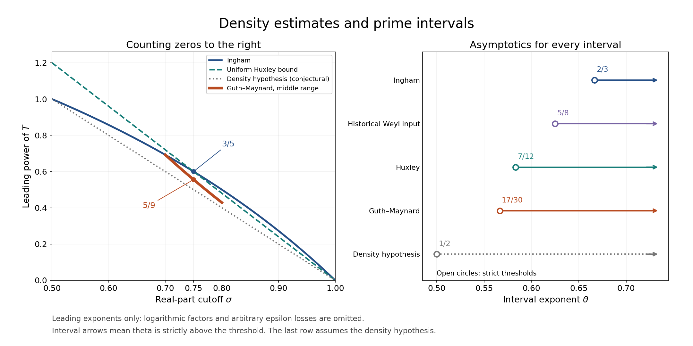

Zero-density estimates and primes in short intervals
Written and self-checked by GPT-6.1 Sol (OpenAI) in Codex, Ultra setting, October 2026. Self-check is by the writing AI. Original exposition and proofs are public domain (CC0). The adaptation and mathematical proof in Section 10.1 retain CC BY 4.0; the independent Section 10.2 application and the other original lesson text are CC0.
A density estimate counts possible exceptions to RH. Combined with a zero-free region, even a comparatively weak density estimate can make the zero sum in a short-interval explicit formula smaller than its main term. We develop the zero detector, the mean-value count and the exponent bookkeeping before using these tools for primes.
The sharp explicit formula is proved in Perron's formula and prime counting, Theorem 2.2. We use the full polynomial mean value and fourth-moment bound in Mean values, Theorem 2.1, Theorem 6.1 and Corollary 6.2. The exponentially smoothed detector and discrete sampling argument were established, before any use of LH, in The Riemann hypothesis implies the Lindelöf hypothesis, equations (6.4)–(6.6) and Lemma 6.1. The Vinogradov–Korobov zero-free region and its complete qualitative exponential-sum input are proved in Growth bounds and wider zero-free regions, Lemma 3.0 and Sections 3–8. The local multiplicity bound is Nonvanishing and a zero-free region, Theorem 2.2. These are exact inputs, not extra hypotheses about zeros.
Write $N(\sigma,T)=\#\{\rho=\beta+i\gamma:\beta\ge\sigma,\ 0<\gamma\le T\}$, with multiplicities. All bounds below count zeros throughout the strip, including zeros on the indicated boundary. We write $d(n)$ for the ordinary divisor function.
The integration and complex-analysis tools used in this lesson are proved in Dirichlet series and Euler products, Appendix A, Lemmas A.1–A.4.
1. Detecting a zero by a polynomial or an integral
Let
$$ M_X(s)=\sum_{d\le X}\frac{\mu(d)}{d^s},\qquad a_X(n)=\sum_{\substack{d\mid n\\d\le X}}\mu(d). \tag{1.1} $$Multiplication of absolutely convergent series gives $\zeta(s)M_X(s)=\sum a_X(n)n^{-s}$. Möbius inversion says $a_X(1)=1$ and $a_X(n)=0$ for $2\le n\le X$; always $|a_X(n)|\le d(n)$.
Lemma 1.1 (zero detector). Suppose $T$ is sufficiently large, $X=\lfloor T\rfloor$, $T\le Y\le T^{3/2}$, and $\rho=\beta+i\gamma$ is a zero with
$$ T<\gamma\le2T,\qquad \beta\ge\tfrac12+\frac1{\log T}. $$Put $Z=\lceil Y\log^2T\rceil$. At least one of the following inequalities holds, with an absolute positive $c$:
$$ \left|\sum_{X<n\le Z}a_X(n)n^{-\rho}e^{-n/Y}\right|\ge c, \tag{1.2} $$ $$ Y^{1/2-\beta}\int_{\mathbb R}e^{-|v|} |\zeta(1/2+i(\gamma+v))M_X(1/2+i(\gamma+v))|dv \ge\frac c{\log T}. \tag{1.3} $$Proof. The Gaussian Fourier-inversion proof of the gamma Mellin kernel in lesson eighteen gives
$$ \sum_{n\ge1}a_X(n)n^{-\rho}e^{-n/Y} =\frac1{2\pi i}\int_{(2)}\zeta(\rho+w)M_X(\rho+w)\Gamma(w)Y^w dw. $$Shift to $\Re w=1/2-\beta\in[-1/2,-1/\log T]$. The gamma pole at zero has residue $\zeta(\rho)M_X(\rho)=0$. The pole of zeta contributes $M_X(1)\Gamma(1-\rho)Y^{1-\rho}=O(T^{-100})$, by vertical Stirling and $Y\le T^{3/2}$. There is no other pole between the two lines. The horizontal contours vanish by the same exponential decay, giving the integral (6.6) of lesson eighteen with this $Y$.
The left side starts with $e^{-1/Y}$. Its tail beyond $Z$ is $O(T^{-100})$: $d(n)\le n$ and exponential decay bound it by $C Y^2e^{-Z/(2Y)}$. Uniformly for $-1/2\le u\le-1/\log T$, gamma recurrence and Stirling give
$$ |\Gamma(u+iv)|\le C(\log T)e^{-|v|}. $$Near $v=0$ use $\Gamma(z)=\Gamma(z+1)/z$ and $|z|\ge1/\log T$; away from zero the fixed-strip Stirling estimate applies. Thus, if the polynomial is smaller than a fixed $c$, the integral must satisfy (1.3). This proves the alternative with constants independent of $\beta,T,X,Y$. $\square$
The factor $\log T$ records the possible proximity of the gamma line to its pole. We will absorb it in a stated logarithmic exponent, rather than use an estimate uniform through that pole.
2. Mean values at the detecting points
Lemma 2.1 (weighted maximal sampling). Let $t_j\in[T,2T]$ be one-separated and let $b_n$ be supported on $n\le Z$, where $Z\le T^2$. Then
$$ \sum_j\max_{u\le Z}\left|\sum_{n\le u}b_n n^{-it_j}\right|^2 \ll(\log T)^3\left(T\sum_n|b_n|^2+\sum_n n|b_n|^2\right). \tag{2.1} $$Proof. Use disjoint intervals of length $1/2$ about the $t_j$. The fundamental theorem of calculus bounds the sum of sampled squares by $2\|P\|_2^2+2\|P\|_2\|P'\|_2$, exactly as in lesson eighteen, Lemma 6.1. Retain the weighted mean-value error from lesson sixteen instead of replacing every $n$ by $Z$. The mean-square bounds for $P$ and $P'$ are $C(T\sum|b_n|^2+\sum n|b_n|^2)$ and the same quantity times $\log^2Z$, respectively. This gives one logarithm. Decompose an initial integer interval into at most $O(\log Z)$ binary blocks, use Cauchy–Schwarz, and apply this estimate to all blocks. At each level both weighted coefficient sums partition exactly, so the two additional logarithms prove (2.1). $\square$
We also need the following coefficient bounds, uniformly for $1/2\le\sigma\le1$, $X=\lfloor T\rfloor$ and $T\le Y\le T^{3/2}$:
$$ \begin{aligned} \sum_{n>X}\frac{d(n)^2e^{-2n/Y}}{n^{2\sigma}} &\ll X^{1-2\sigma}\log^4 T,\\ \sum_{n>X}\frac{d(n)^2e^{-2n/Y}}{n^{2\sigma-1}} &\ll Y^{2-2\sigma}\log^4 T. \end{aligned} \tag{2.2} $$Here is a uniform proof, including the endpoints. On a dyadic interval $U<n\le2U$, the proved bound $\sum_{n\le2U}d(n)^2\ll U\log^3(2U)$ bounds the first sum by $C U^{1-2\sigma}\log^3(2U)e^{-2U/Y}$ and the second by $C U^{2-2\sigma}\log^3(2U)e^{-2U/Y}$. There are $O(\log T)$ intervals between $X$ and a constant multiple of $Y$; the first power never exceeds $X^{1-2\sigma}$ and the second never exceeds $C Y^{2-2\sigma}$. Beyond $Y$ the exponential makes the corresponding dyadic sums converge, with an additional polynomial in the dyadic index still dominated by exponential decay. This proves (2.2). The logarithm replacing a geometric denominator is what makes the estimate uniform as $\sigma$ approaches either endpoint.
Lemma 2.2 (counting the alternatives). Choose one-separated zeros in $T<\gamma\le2T$, all with $\beta\ge\sigma\ge1/2+1/\log T$. Let $R_1,R_2$ be their counts satisfying (1.2), (1.3), respectively. Then
$$ R_1\ll (\log T)^7 \left(Y^{2-2\sigma}+T X^{1-2\sigma}\right), \tag{2.3} $$ $$ R_2\ll T Y^{(2-4\sigma)/3}(\log T)^5. \tag{2.4} $$Proof of (2.3). Use $b_n=a_X(n)e^{-n/Y}n^{-\sigma}$ on $(X,Z]$, zero elsewhere. At a point with $\beta\ge\sigma$, partial summation against $n^{-(\beta-\sigma)}$ bounds the polynomial by its maximum initial partial sum at real part $\sigma$. The total variation plus terminal weight is at most the initial weight, which is at most one. Apply (2.1) and (2.2). Since $Z\le T^2$ for sufficiently large $T$, the stated logarithmic bound follows.
Proof of (2.4). Raise (1.3) to the power $4/3$ and use weighted Hölder in $v$. With constants absolute,
$$ 1\ll (\log T)^{4/3}Y^{(2-4\sigma)/3} \int_{\mathbb R}e^{-|v|}|\zeta M_X(1/2+i(\gamma+v))|^{4/3}dv. \tag{2.5} $$Sum over the selected ordinates and apply Hölder to that finite sum:
$$ \sum_j|\zeta M_X(1/2+i(\gamma_j+v))|^{4/3} \le \left(\sum_j|\zeta(1/2+i(\gamma_j+v))|^4\right)^{1/3} \left(\sum_j|M_X(1/2+i(\gamma_j+v))|^2\right)^{2/3}. \tag{2.6} $$For $|v|\le T/4$, the points are still one-separated in $[3T/4,9T/4]$. Corollary 6.2 of lesson sixteen, applied to a fixed number of dyadic intervals, gives $\sum_j|\zeta(1/2+i(\gamma_j+v))|^4\ll T\log^5T$. Its full proof uses the fourth-moment bound and Cauchy's derivative estimate; no bound for an individual zeta value is being assumed. The sampling proof of Lemma 2.1 without the maximal step gives $\sum_j|M_X(1/2+i(\gamma_j+v))|^2\ll T\log^2T$, since $\sum_{n\le X}1/n\ll\log T$ and $\sum_{n\le X}n/n=X$.
Insert these estimates in (2.6). Their product is $O(T\log^3T)$. The outside factor in (2.5) raises this to at most $T\log^5T$. For $|v|>T/4$, use $|M_X|\le2\sqrt X$, polynomial growth of zeta, and the exponential weight; there are at most $T+1$ one-separated points, so this contribution is $O(T^{-100})$. This proves (2.4). $\square$
3. Ingham's unconditional density bound
Theorem 3.1 (Ingham). Uniformly for $T\ge2$ and $1/2\le\sigma\le1$,
$$ N(\sigma,T)\ll T^{3(1-\sigma)/(2-\sigma)}\log^{16}(2T). \tag{3.1} $$The logarithmic exponent here is an explicit convenient choice; no optimality for it is claimed.
Proof. Work first in $T<\gamma\le2T$ at sufficiently large $T$. If $\sigma\le1/2+1/\log T$, the exponent $3(1-\sigma)/(2-\sigma)$ is at least $1-2/\log T$. Thus $T$ is at most a fixed multiple of the claimed power of $T$, and the total zero count $O(T\log T)$ proves the bound.
Otherwise choose a maximal one-separated subset of the zeros with $\beta\ge\sigma$. Its unit neighborhoods cover all these zeros. The local count from lesson eight shows that the full count with multiplicities is at most $C\log T$ times the selected count. Apply Lemma 2.2 with
$$ X=\lfloor T\rfloor,\qquad Y=T^{3/(4-2\sigma)}. \tag{3.2} $$The exponent of $Y$ is between one and $3/2$, so the detector's range is satisfied. Its three terms have sizes
$$ Y^{2-2\sigma}=T^{3(1-\sigma)/(2-\sigma)},\qquad T Y^{(2-4\sigma)/3}=T^{3(1-\sigma)/(2-\sigma)}, $$and $T X^{1-2\sigma}\ll T^{2-2\sigma}\le T^{3(1-\sigma)/(2-\sigma)}$. Thus the dyadic count is $O(T^{3(1-\sigma)/(2-\sigma)}\log^8T)$, after restoring the local factor. At $\sigma=1$ there are no zeros by the zero-free-line theorem, so this endpoint causes no exceptional case. Summing dyadic height intervals down to a fixed height costs at most one further logarithm, uniformly even when the power approaches zero. Their finite low-height remainder is absorbed. The larger exponent 16 therefore holds uniformly on the closed stated range. $\square$
The exponent can be written $A(\sigma)(1-\sigma)$ with $A(\sigma)=3/(2-\sigma)$. The values are
| $\sigma$ | $A(\sigma)$ | power of $T$ |
|---|---|---|
| $1/2$ | $2$ | $1$ |
| $3/4$ | $12/5$ | $3/5$ |
| $1$ | $3$ | $0$ |
This theorem implies the uniform weaker estimate $N(\sigma,T)\ll T^{3(1-\sigma)}\log^{16}(2T)$. The density hypothesis would replace the factor 3 by $2+\varepsilon/(1-\sigma)$ in the exponent formulation; its usual precise form is $N(\sigma,T)\ll_\varepsilon T^{2(1-\sigma)+\varepsilon}$. It was proved under LH in lesson eighteen, Theorem 6.2, and is not asserted unconditionally here.
4. Converting density into short intervals
Theorem 4.1. Suppose that fixed $A\ge2$ and $B\ge0$ satisfy
$$ N(\sigma,T)\ll T^{A(1-\sigma)}\log^B(2T) \qquad(1/2\le\sigma\le1,\ T\ge2) \tag{4.1} $$uniformly. Then, using the proved Vinogradov–Korobov region, for every fixed $\theta>1-1/A$,
$$ \psi(x+h)-\psi(x)\sim h \qquad(x\to\infty,\ h\ge x^\theta). \tag{4.2} $$In the range $x^\theta\le h\le x$ the asymptotic is uniform in $h$, and $\pi(x+h)-\pi(x)\sim h/\log x$.
Proof. For $h\ge x$, the ordinary PNT already gives (4.2), uniformly: its relative remainder on every argument at least $x$ tends to zero, and $x+h\le2h$. We may therefore assume $\theta<1$ and $x^\theta\le h\le x$. Choose a fixed $\eta>0$ such that
$$ 1-\theta+\eta<1/2,\qquad A(1-\theta+\eta)<1, $$which is possible because $\theta>1-1/A\ge1/2$. Set $T=x^{1-\theta+\eta}$. The sharp explicit formula of lesson eleven, at $x$ and $x+h$, gives
$$ \psi(x+h)-\psi(x)-h =-\sum_{|\gamma|<T}\int_x^{x+h}u^{\rho-1}du +O\left(\frac{x\log^2x}{T}+\log x\right). \tag{4.3} $$If a contour height must avoid ordinates, take the available height in $[T,2T]$; all subsequent estimates hold with $2T$ in place of $T$. Prime-power half weights cost $O(\log x)$, already displayed. The error divided by $h$ is $O(x^{-\eta}\log^2x)+o(1)$.
Since $0<\beta<1$, each zero term in modulus is at most $h x^{\beta-1}$. The terms with $\beta<1/2$ have total divided by $h$ at most $C T x^{-1/2}\log T=o(1)$ by the total zero count. For the remaining zeros, the positive-weight identity gives
$$ \sum_{\substack{0<\gamma\le T\\\beta\ge1/2}}x^{\beta-1} =x^{-1/2}N(1/2,T) +\log x\int_{1/2}^1x^{u-1}N(u,T)du. \tag{4.4} $$Replacing the count with a strict inequality at its integration boundary changes no integral. Conjugate negative ordinates double the estimate.
The zero-free region gives $N(u,T)=0$ for
$$ u\ge1-\Delta_T,\qquad \Delta_T\ge c(\log T)^{-2/3}(\log\log T)^{-1/3}. \tag{4.5} $$Enlarge the lower height cutoff if needed; the finite low zeros stay a fixed positive distance from one and can be included by reducing $c$. Let $m=1-A(1-\theta+\eta)>0$. Insert (4.1) into the integral in (4.4) to bound it by
$$ (\log T)^B\log x\int_{1/2}^{1-\Delta_T} \left(\frac{T^A}{x}\right)^{1-u}du \le\frac{(\log T)^B}{m}x^{-m\Delta_T}=o(1). \tag{4.6} $$The last limit follows because $\Delta_T\log x\gg(\log x)^{1/3}/(\log\log x)^{1/3}$, which exceeds every fixed multiple of $\log\log x$. The first term in (4.4) was already $o(1)$. Therefore the entire zero sum in (4.3) is $o(h)$, proving (4.2).
Finally the prime-power comparison gives $\psi(x+h)-\psi(x)-\vartheta(x+h)+\vartheta(x)=O(\sqrt x)$ on $h\le x$. Since $\theta>1/2$, this is $o(h)$. All primes in the interval have $\log p=\log x+O(1)$, so their weighted count is their ordinary count times $\log x(1+O(1/\log x))$. This proves the assertion for $\pi$. $\square$
The hypothesis $A\ge2$ is natural: the total count at $\sigma=1/2$ already has order $T\log T$, which forbids a fixed exponent $A<2$. The shrinking zero-free strip in (4.5) is also essential to this deduction; a density bound alone would leave possible zeros arbitrarily close to one.
Corollary 4.2. Ingham's Theorem 3.1 gives $\psi(x+x^\theta)-\psi(x)\sim x^\theta$ for every fixed $\theta>2/3$.
Proof. Use $A=3$, $B=16$ in Theorem 4.1. Its threshold is $1-1/3=2/3$. $\square$
Proposition 4.3 (the $12/5$ consequence). If (4.1) holds with $A=12/5$ and some fixed $B$, then (4.2) holds for every $\theta>7/12$, and every sufficiently large interval $(n^3,(n+1)^3]$ contains a prime.
Proof. The threshold is $1-5/12=7/12$. Choose $7/12<\theta<2/3$. At $x=n^3$ the interval has length $h=3n^2+3n+1\ge3x^{2/3}\ge x^\theta$. Theorem 4.1 gives an ordinary prime count asymptotic to $h/\log x$, which tends to infinity and is positive eventually. The left endpoint $n^3$ is composite for $n\ge2$; if the right endpoint is included, it too is composite. Thus the prime is strictly between the cubes. $\square$
5. A large-value inequality with a full proof
The estimate needed beyond Ingham uses the functional equation inside a positive Gram sum. The divisor-weighted coefficient norm is essential: it controls the convolution introduced by the dual series.
Lemma 5.1. Suppose $t_1,\ldots,t_R$ lie in an interval of length $T\ge2$ and are one-separated. Let
$$ P(t)=\sum_{N<n\le2N}a_n n^{-it},\quad G=\sum|a_n|^2,\quad G_2=\sum d(n)|a_n|^2,\quad \ell=\log(2NT). $$Then
$$ \sum_j|P(t_j)|^2\ll NG\ell+R^{2/3}(NT)^{1/3}G^{2/3}G_2^{1/3}\ell. \tag{5.1} $$The same estimate for the sum of maximum initial partial sums holds with $\ell^3$ instead of $\ell$.
Proof. Translating all $t_j$ multiplies the coefficients by unit complex numbers, so take $0\le t_j\le T$. If $N\ge T$, discrete sampling from Lemma 2.1 before its maximal step gives $\sum|P(t_j)|^2\ll NG\ell$, which suffices. Suppose $N<T$. Put $b_j=P(t_j)$ and $B=\sum|b_j|^2$. Dual Cauchy–Schwarz gives
$$ B^2\le G\sum_{N<n\le2N} \left|\sum_j\overline{b_j}n^{-it_j}\right|^2. \tag{5.2} $$Use $\omega(u)=\exp(-\log^2u)$. On $1\le u\le2$, $u^{-1/2}\omega(u)$ has a positive lower bound. Therefore the last sum is at most
$$ C\sqrt N\sum_{j,k}|b_jb_k|\,|\Phi_N(t_j-t_k)|, \qquad \Phi_N(d)=\sum_{n\ge1}\omega(n/N)n^{-1/2-id}. \tag{5.3} $$To retain the signs before taking absolute values, first expand the nonnegative weighted sum; the triangle inequality then gives (5.3).
The Mellin transform of $\omega$ is $K(w)=\sqrt\pi e^{w^2/4}$: after $u=e^x$, its transform is $\int_{\mathbb R}e^{-x^2+wx}dx$, the Gaussian integral, and imaginary-axis Fourier inversion gives the inverse. The formula for complex $w$ follows from the real Gaussian integral by holomorphic continuation. Hence
$$ \Phi_N(d)=\frac1{2\pi i}\int_{(1)} \zeta(1/2+id+w)K(w)N^w dw. $$Shift to $\Re w=-1$. Polynomial vertical bounds for zeta and the Gaussian decay of $K$ justify the shift. The single residue is $N^{1/2-id}K(1/2-id)$. Its contribution to (5.3) is at most $CNB$: indeed $|K(1/2-id)|\le C e^{-d^2/4}$, and one-separation gives $\sup_j\sum_k e^{-(t_j-t_k)^2/4}\le C$; use $2|b_jb_k|\le|b_j|^2+|b_k|^2$.
Write $\zeta(s)=\chi(s)\zeta(1-s)$, where the functional equation and the gamma estimates of lessons three and four give
$$ |\chi(1/2+iu)|=1,\qquad |\chi(-1/2+iu)|\le C(1+|u|). \tag{5.4} $$Let $M=\lceil T/N\rceil$, so $T\le MN\le2T$. On the new line the dual series converges absolutely. Split it at $m=M$. For its finite part move the contour back to $\Re w=0$. No pole is crossed: $K$ is entire and $\chi$ is holomorphic in the strip of real parts $[-1/2,1/2]$. This finite part $I_1(d)$ satisfies
$$ |I_1(d)|\le C\int_{\mathbb R}|K(iv)| \left|\sum_{m\le M}m^{-1/2+i(d+v)}\right|dv. \tag{5.5} $$For fixed $k,v$, conjugate the second factor before multiplying it by $P(t_j)$. The product is a polynomial in $(nm)^{-it_j}$, with coefficient
$$ c_q=\sum_{\substack{nm=q\\N<n\le2N\\m\le M}} a_n m^{-1/2+it_k-iv}. $$Cauchy–Schwarz over the divisors of $q$, followed by $d(nm)\le d(n)d(m)$, gives
$$ \sum_q|c_q|^2 \le G_2\sum_{m\le M}\frac{d(m)}m \ll G_2\log^2(2M). \tag{5.6} $$The last inequality follows by writing $d(m)=\sum_{ab=m}1$ and bounding two harmonic sums. The product polynomial has length at most $2NM\le4T$. Discrete sampling gives $\sum_j|\sum_qc_q q^{-it_j}|^2\ll TG_2\ell^3$, uniformly in $k,v$. Another Cauchy–Schwarz inequality proves
$$ \sum_j|b_j|\left|\sum_{m\le M}m^{-1/2+i(t_j-t_k+v)}\right| \ll (RTG_2)^{1/2}\ell^{3/2}. \tag{5.7} $$Since $\sum_k|b_k|\le\sqrt{RB}$ and $\int|K(iv)|dv$ is bounded, (5.5) contributes at most $CR\sqrt{NTG_2B}\,\ell^{3/2}$ to (5.3).
For the remaining dual series retain $\Re w=-1$. By (5.4), its contribution $I_2(d)$ is bounded by
$$ \frac C N\int_{\mathbb R}(T+|v|+1)|K(-1+iv)| \left|\sum_{m>M}m^{-3/2+i(d+v)}\right|dv. \tag{5.8} $$Split the $m$ sum into $U<m\le2U$, $U=2^jM$, $j\ge0$. The product with $P(t_j)$ after conjugating this factor has coefficient norm at most
$$ G_2\sum_{U<m\le2U}\frac{d(m)}{m^3} \ll G_2 U^{-2}\log(2U). $$Its length is at most $4NU$, and $NU\ge T$. Sampling and Cauchy–Schwarz bound the sum of its absolute values over the $R$ points by $C\sqrt{RNG_2}\,U^{-1/2}\log(2NU)$. Sum the dyadic series: $\sum_{j\ge0}(2^jM)^{-1/2}\log(2^{j+1}NM)\ll M^{-1/2}\log(2NM)$. The Gaussian integral of $(T+|v|+1)|K(-1+iv)|$ is $O(T)$. Since $MN\asymp T$, (5.8) gives
$$ \sum_j|b_j||I_2(t_j-t_k)|\ll\sqrt{RTG_2}\,\ell. $$Multiplication by $\sqrt N\sum_k|b_k|$ shows this is no larger than the bound for $I_1$.
Combining these estimates with (5.2) gives
$$ B^2\le C G\left(NB+R\sqrt{NTG_2B}\,\ell^{3/2}\right). $$If $B\le2CNG$ the first term in (5.1) suffices. Otherwise absorb $CNG B$ into the left side and divide by $\sqrt B$, obtaining $B\ll R^{2/3}(NT)^{1/3}G^{2/3}G_2^{1/3}\ell$. This proves (5.1).
For maximum initial partial sums, decompose every prefix into disjoint binary blocks. At most $O(\log(2N))$ blocks occur in a prefix, giving that factor by Cauchy–Schwarz. At each binary level the coefficient supports partition, so their $G$ and $G_2$ sums are exactly the original norms. Hölder gives $\sum G_{\rm block}^{2/3}G_{2,\rm block}^{1/3}\le G^{2/3}G_2^{1/3}$. Summing the $O(\log(2N))$ levels gives the other factor. Pad each block with zero coefficients in $(N,2N]$ when applying the already proved estimate. This proves the maximal assertion. $\square$
Corollary 5.2. Fix positive integers $l,k$ and a fixed $D\ge0$. Suppose $N\le T^D$, $1/2\le\theta\le1$, and $|a_n|\le d_l(n)n^{-\theta}$ on $(N,2N]$. The number $R$ of one-separated points where a maximum initial partial sum has modulus at least $\log^{-D}(2T)$ satisfies
$$ R\ll_{l,D}\log^{C_{l,D}}(2T) \left(N^{2-2\theta}+T N^{4-6\theta}\right). \tag{5.9} $$For values of the full polynomial, applying this to its $k$th power instead gives
$$ R\ll_{l,k,D}\log^{C_{l,k,D}}(2T) \left(N^{k(2-2\theta)}+T N^{k(4-6\theta)}\right). \tag{5.10} $$The conclusion remains true when $\beta_j\ge\theta$ replaces $\theta$ in the evaluation at each point.
Proof. First, $d_a(n)d_b(n)\le d_{ab}(n)$. At a prime power, map a pair of weak compositions of its exponent into a nonnegative $a$ by $b$ integer matrix with those row and column sums. Such a matrix exists by successively filling the first still nonzero row and column; fix this rule to make the map deterministic. Different pairs have different row or column sums, so the map is injective into all $ab$-part weak compositions. Multiply over primes. Consequently $d_l(n)^2\le d_{l^2}(n)$ and $d(n)d_l(n)^2\le d_{2l^2}(n)$. The repeated harmonic-sum argument gives $\sum_{n\le u}d_r(n)\le u(1+\log u)^{r-1}$ for fixed $r$: choose the first $r-1$ factors and bound the possible last factor by $u$ divided by their product.
It follows that $G,G_2\ll_l N^{1-2\theta}\log^{C_l}(2N)$. Lemma 5.1 gives $R\ll\log^C(2T)[N^{2-2\theta}+R^{2/3}T^{1/3}N^{(4-6\theta)/3}]$ after dividing by the square of the stated threshold. If the first term does not suffice, absorb it and cube; this proves (5.9).
The $k$th power has coefficients bounded by $d_{lk}(n)n^{-\theta}$, by ordered divisor convolution. Its support is $(N^k,(2N)^k]$, a union of at most $k+1$ intervals $(U,2U]$ with $U\asymp_k N^k$. A large full value gives a large value on one of these pieces; apply (5.9) to each, adjusting the logarithmic threshold and constant. Finally a value at $\beta_j\ge\theta$ is bounded by the maximum partial sum at $\theta$, by partial summation against $n^{-(\beta_j-\theta)}$. For (5.10), first take the full polynomial's $k$th power at $\beta_j$ and then apply this partial-sum bound to each dyadic piece. All constant powers of two and threshold losses depend only on the displayed fixed parameters. $\square$
6. Balanced smoothing and Huxley's bound
The detector in section one has length at least $T$. A different smoothing kernel makes both halves of the functional equation have length $\sqrt T$ times powers of a logarithm. We supply its analytic bounds before using it.
Lemma 6.1 (a smoothing kernel with only one pole). Define
$$ \varpi=\int_0^\infty e^{-u-u^{-1}}\frac{du}{u},\qquad f(x)=\frac1\varpi\int_x^\infty e^{-u-u^{-1}}\frac{du}{u},\qquad g(w)=\frac1{\varpi w}\int_0^\infty u^{-w}e^{-u-u^{-1}}\frac{du}{u}. \tag{6.1} $$The integral in $g$ is entire, and $g$ has just the simple pole at zero, of residue one. For $x>0$, $f(x)+f(1/x)=1$; for $x\ge1$,
$$ 0\le f(x)\le C x^{-1}e^{-x}. \tag{6.2} $$There is an absolute $C\ge1$ such that, with $w=u+iv$,
$$ |wg(w)|\le [C(1+|w|)]^{\max(1,|u|)}e^{-\pi|v|/2}. \tag{6.3} $$For $c>0$ and $V>0$,
$$ \frac1{2\pi i}\int_{(c)}g(w)V^w dw=f(1/V). \tag{6.4} $$Proof. Both ends of the defining integral decay faster than every fixed power, locally uniformly in $w$. This proves entire dependence and the residue assertion. The substitution $u\mapsto1/u$ proves the symmetry of its numerator and the identity for $f$. Bounding $u^{-1}$ by $x^{-1}$ in the defining tail proves (6.2).
For (6.3) use that symmetry to write $\varpi wg(w)=\int_{\mathbb R}\exp(wx-e^x-e^{-x})dx$. By conjugation take $v\ge0$. Set $\delta=(1+|u|)/(2+|w|)$, so $0<\delta<1$, and move the $x$ contour to height $\pi/2-\delta$. On its vertical ends the modulus is bounded by $C_w\exp(|u|R-e^R\sin\delta)$, which tends to zero. Taking absolute values on the shifted line gives
$$ |\varpi wg(w)|\le 2e^{-\pi v/2+v\delta}\int_1^\infty t^{|u|-1}e^{-t\sin\delta}dt. $$If $|u|\le1$, the integral is at most $1/\sin\delta$, and $v\delta\le2$ gives the bound $C(1+|w|)e^{-\pi v/2}$. If $|u|\ge1$, the integral is at most $(\sin\delta)^{-|u|}\Gamma(|u|)$. Stirling, $\sin\delta\ge c\delta$, $v\delta\le1+|u|$, and $|u|/\delta\le2+|w|$ give (6.3). These constants are absolute, including the bounded transition range.
To justify inversion without interchanging a nonabsolute Perron integral, put $F(V)=f(1/V)$. For $\Re w>0$, integration by parts gives
$$ \int_0^\infty F(V)V^{-w-1}dV =\frac1{\varpi w}\int_0^\infty V^{-w-1}e^{-V-V^{-1}}dV =g(w). $$All boundary terms vanish. Thus $g(c+iv)$ is the Fourier transform, with kernel $e^{-ivx}$, of the integrable continuous function $e^{-cx}F(e^x)$. Insert a Gaussian multiplier $e^{-\epsilon v^2}$ in Fourier inversion. The Gaussian integral turns the inverse into convolution with the Gaussian approximate identity, which tends to this continuous function as $\epsilon\downarrow0$. Equation (6.3) supplies an integrable dominating function for the inverse side, so dominated convergence removes the multiplier. Multiplying back by $V^c$ proves (6.4). $\square$
Lemma 6.2 (the balanced detector). Fix $0<\eta<1/4$. There are absolute constants $C,C_0$ such that the following construction works for all sufficiently large $T$ (depending on $\eta$). Set
$$ P=C(T+2),\quad Y=P^{1/2}\log^2P,\quad U=\left\lceil C_0 P^{1/2}\log^3P\right\rceil,\quad K=\lfloor P^{\eta/5}\rfloor. \tag{6.5} $$If $\rho=\beta+i\gamma$ is a zero with $T<\gamma\le2T$ and $\beta\ge\theta\ge7/10$, then
$$ 1\le C\left( \left|\sum_{K<n\le KU}a(n)n^{-\rho}\right| +\int_{\mathbb R}e^{-|v|} \left|\sum_{K<n\le KU}b(n;v)n^{-\rho}\right|dv \right), \tag{6.6} $$where the coefficients are independent of $\beta,\gamma$ and satisfy
$$ |a(n)|\le d(n),\qquad |b(n;v)|\le C\sqrt{\log P}\,d(n). \tag{6.7} $$They may depend on $P,K,\theta$ and, in the second case, $v$.
Proof. Mellin inversion and absolute convergence first give, for $s=\beta+i\gamma$,
$$ \sum_{m\ge1}f(m/Y)m^{-s} =\frac1{2\pi i}\int_{(2)}\zeta(s+w)Y^w g(w)dw. $$Shift to $\Re w=-1$. The residues are $\zeta(s)$ and $Y^{1-s}g(1-s)$. The exponential decay in (6.3), together with polynomial vertical bounds, makes the horizontal integrals tend to zero. On the new line apply the functional equation and expand the absolutely convergent dual series. With
$$ h(V;s)=\frac1{2\pi i}\int_{(-1)}\chi(s+w)V^w g(w)dw, $$the result is
$$ \sum_{m\ge1}f(m/Y)m^{-s} =\zeta(s)+Y^{1-s}g(1-s)+\sum_{m\ge1}m^{s-1}h(mY;s). \tag{6.8} $$Here is a bound that permits a finite dual sum. For every real $\lambda\ge3$, move the contour in $h$ to $\Re w=-\lambda$; no singularity is crossed. Uniform Stirling in the right half-plane, applied to $\chi(z)=2^z\pi^{z-1}\sin(\pi z/2)\Gamma(1-z)$, gives
$$ |\chi(\beta-\lambda+i(\gamma+v))| \le C(3+2T+\lambda+|v|)^{\lambda+1/2-\beta}. $$To see why there is no exponential growth left over, write $1-z=x+iy$, $x\ge1$. The exponential part after the sine factor is at most $\exp[-x+|y|\arctan(x/|y|)]\le1$; the value at $y=0$ is obtained by continuity. The usual uniform Stirling remainder is bounded on this half-plane. Since $\beta\ge1/2$, (6.3) consequently bounds the integrand by $C(P/V)^\lambda(\lambda+|v|)^{2\lambda}e^{-\pi|v|/2}$ after enlarging the absolute constant in $P$. Its integral is at most $C(P/V)^\lambda\lambda^{5\lambda}$. Indeed $(\lambda+v)^{2\lambda}\le2^{2\lambda}(\lambda^{2\lambda}+v^{2\lambda})$, and the gamma integral and Stirling give a bound $(C\lambda)^{2\lambda}$; its constant power is absorbed in $P^\lambda$.
For $V/P\ge(3e)^5$, choose the real value $\lambda=e^{-1}(V/P)^{1/5}\ge3$. The resulting estimate is
$$ |h(V;s)|\le C\exp\left[-\frac5e(V/P)^{1/5}\right]. \tag{6.9} $$The minus sign follows by substituting this $\lambda$ into $5\lambda\log\lambda-\lambda\log(V/P)=-5\lambda$. Choose $C_0$ so large that $(5/e)C_0^{1/5}\ge200$ and $C_0\ge300$. For $m\ge U$, the function $q(m)=(5/e)(mY/P)^{1/5}-2\log m$ is increasing once $T$ is large, and $q(U)\ge100\log P$. Therefore the tail of the dual sum in (6.8) is $O(P^{-100})$, by $m^{\beta-1}\le1$ and comparison with $P^{-100}\sum m^{-2}$. Equation (6.2) gives the same bound for the main tail beyond $U$; here $U/Y\ge C_0\log P$. The pole term is $O(P^{-100})$ by (6.3) and $\gamma>T$.
For the retained finite dual sum, move its contour to
$$ u=\theta+1/2-2\beta\in[-4/5,-1/5]. $$There is no pole between these negative lines. On this new contour, $\Re(s+w)=\theta+1/2-\beta\in[1/5,1/2]$. The fixed-strip gamma estimates give $|\chi(s+w)g(w)|\le C P^{\beta-\theta}e^{-|v|}$; powers of $1+|v|$ are absorbed by the remaining exponential decay. Thus the retained dual term is at most
$$ C Y^{\theta+1/2-2\beta}P^{\beta-\theta} \int_{\mathbb R}e^{-|v|} \left|\sum_{m\le U}m^{\theta-1/2-\beta+i(\gamma+v)}\right|dv. \tag{6.10} $$Since $Y^2\ge P$, the outside factor is at most $C Y^{1/2-\theta}$.
Multiply the finite identity by $M_K(s)=\sum_{d\le K}\mu(d)d^{-s}$ and set $s=\rho$. In its main sum the coefficient of $n^{-s}$ is
$$ a(n)=\sum_{\substack{dm=n\\d\le K,\ m\le U}}\mu(d)f(m/Y). $$For $n\le K$, $f(m/Y)=1+O((K/Y)e^{-Y/K})$, so Möbius inversion makes these terms equal to $1+o(1)$ in total, uniformly in $\beta$. Terms with $n>K$ have $|a(n)|\le d(n)$, because $0\le f\le1$.
In (6.10) take the complex conjugate of the finite $m$ sum before multiplying it by $M_K(s)$; its modulus is unchanged. The product then has frequency $(dm)^{-i\gamma}$, and its coefficient after factoring out $n^{-\beta}$ is $\sum_{dm=n}\mu(d)m^{\theta-1/2-iv}$. Put $r=\theta-1/2$. Normalize this coefficient by $U^r$. The remaining outside factor is at most $C(U/Y)^r\le C\sqrt{\log P}$. Absorb it by defining
$$ b(n;v)=C_1\sqrt{\log P} \sum_{\substack{dm=n\\d\le K,\ m\le U}} \mu(d)(m/U)^r m^{-iv}, $$with one sufficiently large fixed $C_1$. This proves (6.7). The small terms $n\le K$, before this harmless enlargement, contribute at most $C Y^{-r}\sqrt K\log(2K)=o(1)$: directly sum $\sum_{d\le K}d^{-\beta}\sum_{m\le K/d}m^{\theta-1/2-\beta}\le C\sqrt K\log(2K)$, and use $r\ge1/5$, $K\le P^{\eta/5}$. After the enlargement the bound is $C\sqrt{\log P}\,U^{-r}\sqrt K\log(2K)\ll P^{-1/10+\eta/10}\log^2P=o(1)$. All $O(P^{-100})$ remainders remain negligible when multiplied by $|M_K(s)|\le K$. At a zero $\zeta(\rho)M_K(\rho)=0$, so the unit term must be supplied by one of the two remaining tails. Absorbing the small errors proves (6.6). $\square$
Theorem 6.3 (Huxley's estimate). For every fixed $0<\eta<1/4$, uniformly for $3/4\le\sigma\le1$ and $T\ge2$,
$$ N(\sigma,T)\ll_\eta \log^{C_\eta}(2T)\left( T^{(2+\eta)(1-\sigma)} +T^{3(1-\sigma)/(3\sigma-1)} \right). \tag{6.11} $$Consequently an absolute fixed $B$ exists such that
$$ N(\sigma,T)\ll T^{(12/5)(1-\sigma)}\log^B(2T) \qquad(1/2\le\sigma\le1,\ T\ge2). \tag{6.12} $$Proof. Fix $\theta=\sigma\ge3/4$ and first count a maximal one-separated set of zeros in $T<\gamma\le2T$. Use Lemma 6.2. Divide $(K,KU]$ into $O(\log T)$ dyadic intervals $(N,2N]$, truncating the last interval. Assign each selected zero to one interval for which the corresponding main value plus the weighted dual integral in (6.6) is at least $c/\log T$. Let $R_N$ be the assigned count.
For any fixed positive integer $k$, weighted Hölder and $(a+b)^{2k}\le2^{2k-1}(a^{2k}+b^{2k})$ give
$$ R_N\ll_k\log^{2k}(2T)\left( \sum_j|A_j|^{2k} +\int_{\mathbb R}e^{-|v|}\sum_j|B_j(v)|^{2k}dv \right), \tag{6.13} $$where the sum is over these assigned zeros and $A_j,B_j(v)$ are the full polynomials on this block, evaluated at $\beta_j+i\gamma_j$. This step keeps the integral intact; there is no claim that a single value of $v$ works for every zero.
Take the $k$th power of each polynomial. Its coefficients are bounded, up to a fixed power of $\log T$, by $d_{2k}(n)n^{-\theta}$, using (6.7) and divisor convolution. Split its support $(N^k,(2N)^k]$ into at most $k+1$ dyadic blocks, and use partial summation for $\beta_j\ge\theta$. The maximal form of Lemma 5.1 and the coefficient-norm calculation in Corollary 5.2 then give, uniformly in $v$,
$$ R_N\ll_k\log^{C_k}(2T) \left(N^{k(2-2\theta)} +R_N^{2/3}T^{1/3}N^{k(4/3-2\theta)}\right). $$The integral of $e^{-|v|}$ is finite, so it contributes only another constant. Absorbing the first term when necessary and cubing gives
$$ R_N\ll_k\log^{C'_k}(2T) \left(N^{k(2-2\theta)}+T N^{k(4-6\theta)}\right). \tag{6.14} $$If $N\le T^{1/[2(3\theta-1)]}$, choose the least $k$ such that $N^k\ge T^{1/(3\theta-1)}$. Then
$$ T^{1/(3\theta-1)}\le N^k\le T^{3/[2(3\theta-1)]}. $$Also $N\ge K\gg T^{\eta/5}$, so $k$ belongs to a finite set depending only on $\eta$. Since $2-2\theta\ge0$ and $4-6\theta<0$, both terms in (6.14) are at most $T^{3(1-\theta)/(3\theta-1)}$.
If $N>T^{1/[2(3\theta-1)]}$, take $k=2$. For sufficiently large $T$, $N\le KU\le P^{1/2+\eta/4}$. The first term is at most $C_\eta T^{(2+\eta)(1-\theta)}$. The second is at most
$$ T\left(T^{1/[2(3\theta-1)]}\right)^{8-12\theta} =T^{3(1-\theta)/(3\theta-1)}. $$Sum the $O(\log T)$ blocks. The local zero-count bound restores multiplicities and the discarded nearby zeros at a cost $O(\log T)$; a dyadic sum over heights costs at most one more logarithm. Finite low heights are absorbed uniformly, as in Theorem 3.1. This proves (6.11), with some fixed $C_\eta$ and without an unmentioned power loss in $T$.
For (6.12) fix $\eta=1/5$. On $1/2\le\sigma\le3/4$, Ingham gives $3/(2-\sigma)\le12/5$. On $3/4\le\sigma\le1$, the second factor in (6.11) has $3/(3\sigma-1)\le12/5$, while $2+\eta=11/5<12/5$. Taking the larger fixed logarithmic exponent proves the uniform estimate (6.12). $\square$
Corollary 6.4. For every fixed $\theta>7/12$, $\psi(x+x^\theta)-\psi(x)\sim x^\theta$. Every sufficiently large integer $n$ has a prime strictly between $n^3$ and $(n+1)^3$.
Proof. Equation (6.12) supplies the actual unconditional hypothesis $A=12/5$ of Theorem 4.1 and Proposition 4.3. Their deductions now apply without an additional density assumption. $\square$
7. Ingham's earlier estimate and the historical $5/8$
Theorem 3.1 and the following theorem are different density estimates. The earlier one exploits a bound for each critical-line value, rather than the fourth moment.
Theorem 7.1. Suppose that fixed $c,D\ge0$ satisfy
$$ |\zeta(1/2+it)|\ll (|t|+2)^c\log^D(|t|+2). \tag{7.1} $$Then, uniformly for $1/2\le\sigma\le1$ and $T\ge2$,
$$ N(\sigma,T)\ll_{c,D} T^{\,2(1+2c)(1-\sigma)}\log^{16+2D}(2T). \tag{7.2} $$Proof. If $c\ge1/4$, Ingham's unconditional theorem already suffices, since its exponent is at most $3(1-\sigma)\le2(1+2c)(1-\sigma)$. Suppose $0\le c<1/4$. In the detector of Lemma 1.1 take
$$ X=\lfloor T\rfloor,\qquad Y=T^{1+2c}\in[T,T^{3/2}]. $$At $\sigma\le1/2+1/\log T$, the total zero count $O(T\log T)$ proves (7.2), since the displayed exponent is at least $1-C_c/\log T$. Otherwise select one-separated zeros as before. The polynomial alternative still has
$$ R_1\ll\log^7T\left(Y^{2-2\sigma}+T^{2-2\sigma}\right). $$For the integral alternative, square (1.3) and apply weighted Cauchy–Schwarz instead of the $4/3$ power:
$$ R_2\ll Y^{1-2\sigma}\log^2T \int_{\mathbb R}e^{-|v|} \sum_j|\zeta(1/2+i(\gamma_j+v))M_X(1/2+i(\gamma_j+v))|^2dv. $$When $|v|\le T/4$, (7.1) and discrete polynomial sampling bound the sum by $C T^{1+2c}\log^{2D+2}T$. For the remaining $v$, use polynomial growth and the exponential weight exactly as in Lemma 2.2; the contribution is smaller than every fixed negative power of $T$. Therefore
$$ R_2\ll T^{1+2c}Y^{1-2\sigma}\log^{4+2D}T. $$With the stated $Y$, both $Y^{2-2\sigma}$ and $T^{1+2c}Y^{1-2\sigma}$ equal $T^{2(1+2c)(1-\sigma)}$, and the other polynomial term is smaller. Restoring local multiplicity and summing dyadic heights costs at most two logarithms. The exponent $16+2D$ covers all these losses uniformly. The zero-free line handles $\sigma=1$, and bounded heights are absorbed. $\square$
Corollary 7.2. For every fixed $\theta>5/8$, $\psi(x+x^\theta)-\psi(x)\sim x^\theta$.
Proof. Weyl's estimate in Exponential sums, Theorem 4.1, is $|\zeta(1/2+it)|\ll (|t|+4)^{1/6}\log(|t|+4)$. Thus Theorem 7.1 applies with $c=1/6,D=1$, giving $A=2(1+1/3)=8/3$ and a fixed logarithmic factor. Theorem 4.1 now has threshold $1-3/8=5/8$. $\square$
The logarithm in Weyl's estimate has been retained in this argument. There is no need to assert the stronger pointwise bound $O(t^{1/6})$. The later unconditional $7/12$ result is sharper, while the $5/8$ deduction explains the historical use of a subconvex value estimate.
8. Almost all very short intervals under RH
An assertion for almost all starting points allows a sparse set of exceptions. It is substantially stronger than the prime-counting formula at every point with a fixed power length. Under RH, an elementary mean-square estimate for the zero sum already reaches lengths just larger than $\log^2x$.
Lemma 8.1 (sampling the zero frequencies). Let the zeros with $|\gamma|<T$ be listed with multiplicities, $T\ge2$. For any coefficients $a_\gamma$ and any real interval $I$ of length at most two,
$$ \int_I\left|\sum_{|\gamma|<T}a_\gamma e^{i\gamma u}\right|^2du \le C\log(2T)\sum_{|\gamma|<T}|a_\gamma|^2. \tag{8.1} $$This does not require RH.
Proof. If $u_0$ is the center of $I$, the Gaussian $\phi(u)=e^{1-(u-u_0)^2}$ is at least one on $I$. Expand the square in the integral with this weight. The Gaussian Fourier integral bounds it by
$$ e\sqrt\pi\sum_{\gamma,\gamma'} |a_\gamma a_{\gamma'}|e^{-(\gamma-\gamma')^2/4}. $$The unit-window zero count from lesson eight is $O(\log(2T))$ for all ordinates in this truncated set, including repetitions. Dividing the real line into unit intervals about each $\gamma$ therefore gives $\sup_\gamma\sum_{\gamma'}e^{-(\gamma-\gamma')^2/4}\le C\log(2T)$. Apply $2|a_\gamma a_{\gamma'}|\le|a_\gamma|^2+|a_{\gamma'}|^2$ and sum. This proves (8.1) without separating coincident or nearby zeros. $\square$
Theorem 8.2 (Selberg's mean-square estimate in a sufficient form). Under RH, for $X\ge4$ and $1\le h\le X/2$,
$$ \int_X^{2X}|\psi(x+h)-\psi(x)-h|^2dx \ll Xh\log^2(2X)+X\log^4(2X). \tag{8.2} $$The same bound holds for the sum over integer $x\in[X,2X]$.
Proof. Use the sharp explicit formula of lesson eleven at one common admissible height $T\in[X,2X]$. Its remainders at $x$ and $x+h$ are $O(\log^2(2X))$, uniformly in this range; the half-weight corrections cost only $O(\log(2X))$. On RH its zero contribution to the difference is
$$ S(x)=\sum_{|\gamma|<T} \frac{(x+h)^{1/2+i\gamma}-x^{1/2+i\gamma}}{1/2+i\gamma}. \tag{8.3} $$It suffices to bound $\int_X^{2X}|S(x)|^2dx\ll Xh\log^2(2X)$, since the squared remainder contributes $O(X\log^4(2X))$.
Put $V=X/h\ge2$ and split (8.3) at $|\gamma|=V$. In the lower part use the exact integral
$$ S_{\rm low}(x)=\int_0^h(x+r)^{-1/2} \sum_{\substack{|\gamma|<T\\|\gamma|\le V}} e^{i\gamma\log(x+r)}dr. $$Cauchy–Schwarz in $r$ gives
$$ \int_X^{2X}|S_{\rm low}(x)|^2dx \le h\int_0^h\int_{X+r}^{2X+r} \left|\sum_{|\gamma|\le\min(V,T)}e^{i\gamma\log u}\right|^2\frac{du}{u}\,dr. $$After $u=e^v$, each inner interval has length at most $\log2$. Lemma 8.1 and the total zero count $N(V)\ll V\log(2V)$ give the bound $C h^2 V\log^2(2X)=C Xh\log^2(2X)$.
For the upper part separate the two endpoint sums. For either endpoint $u=x$ or $u=x+h$, substitution $u=e^v$ and $u\le3X$ bound its mean square by
$$ C X^2\int_J \left|\sum_{V<|\gamma|<T} \frac{e^{i\gamma v}}{1/2+i\gamma}\right|^2dv \le C X^2\log(2X)\sum_{V<|\gamma|<T}\frac1{\gamma^2}, $$where $J$ has length less than two. A dyadic sum using $N(u)\ll u\log(2u)$ gives $\sum_{|\gamma|>V}\gamma^{-2}\ll\log(2V)/V$. Thus this is also $O(Xh\log^2(2X))$. The triangle-square inequality combines the two frequency ranges and endpoints, proving (8.2).
For integers, compare an integer $m$ with real $x\in[m,m+1]$. Each of the two endpoints moves by at most one, so its $\psi$ value changes by at most $C\log(2X)$: there are at most two integers in an interval of length one and each has von Mangoldt weight at most $\log(3X+2)$. Hence the square at $m$ is bounded by twice the square at $x$ plus $C\log^2(2X)$. Integrating over these unit intervals proves the discrete version, using (8.2) on the slightly enlarged range; the same zero-sum proof is uniform on that range. $\square$
Theorem 8.3 (Selberg). Assume RH. For every fixed $\epsilon,\delta>0$, all but $o(X)$ integers $x\in[2,X]$ satisfy
$$ (1-\epsilon)\frac{(\log x)^{2+\delta}}{\log x} \le\pi\bigl(x+(\log x)^{2+\delta}\bigr)-\pi(x) \le(1+\epsilon)\frac{(\log x)^{2+\delta}}{\log x}. \tag{8.4} $$Proof. Work first on a dyadic range $X\le x\le2X$. Let $h_-=(\log X)^{2+\delta}$ and $h_+=(\log(2X))^{2+\delta}$; both lie below $X/2$ for large $X$. Equation (8.2) and Chebyshev's inequality show that, for either fixed height, the number of integers where $|\psi(x+h_\pm)-\psi(x)-h_\pm|>\epsilon h_\pm/20$ is at most
$$ C_{\epsilon,\delta}X\left((\log X)^{-\delta} +(\log X)^{-2\delta}\right)=o(X). \tag{8.5} $$Prime powers also have to be removed in mean, since a pointwise $O(\sqrt X)$ error would be too large here. The total von Mangoldt weight of proper prime powers up to $3X$ is $O(\sqrt X)$: Chebyshev bounds the square contribution, and powers of order at least three contribute $O(X^{1/3}\log X)=O(\sqrt X)$. Each such integer lies in at most $h_\pm+2$ of the integer-starting intervals. Therefore the sum, over these starting points, of the prime-power error is $O(h_\pm\sqrt X)$. Markov's inequality shows that it exceeds $\epsilon h_\pm/20$ at only $O_\epsilon(\sqrt X)=o(X)$ points.
Outside the union of these exceptional sets, the two prime-weight sums $\vartheta(x+h_\pm)-\vartheta(x)$ are $(1+O(\epsilon/10))h_\pm$. Moreover $h_+/h_-=1+O_\delta(1/\log X)$, and $h_-\le(\log x)^{2+\delta}\le h_+$. Monotonicity squeezes the prime-weight sum at the varying target length between these two estimates. For sufficiently large $X$, it equals $(1+O(\epsilon/4))(\log x)^{2+\delta}$. In each such interval every prime has $\log p=\log x+o(1)$, uniformly, so dividing by $\log x$ gives (8.4), after starting with a smaller fixed error parameter if necessary.
Finally sum dyadic ranges up to the requested endpoint. The ranges below its square root contain $O(\sqrt X)$ integers. In all remaining ranges the relative upper bound in (8.5) tends uniformly to zero, and their total lengths are $O(X)$. The extra prime-power exceptional sets also sum to $o(X)$. This proves the stated count on $[2,X]$. $\square$
Almost-all is a statement about the density of the exceptional starting points, not a pointwise formula. It allows infinitely many exceptional intervals. We return to those intervals after developing the modern density estimate.
9. Polynomials on a difference set
The modern argument uses both large values and the additive structure of the points where they occur. The following estimate of Heath-Brown supplies its classical input. We give the supporting proof here, using the functional equation already established in the course.
Theorem 9.1 (Heath-Brown's difference-set estimate). Let $W$ be a one-separated set in an interval of length $T\ge3$, let $R=|W|$, let $N\ge1$, and let $|a_n|\le1$. For every $\epsilon>0$,
$$ \sum_{t,u\in W}\left|\sum_{N<n\le2N}a_n n^{i(t-u)}\right|^2 \ll_\epsilon T^\epsilon \left(RN^2+R^2N+R^{5/4}T^{1/2}N\right). \tag{9.1} $$The same statement, with a factor $T^{o(1)}$, holds for coefficients bounded by $T^{o(1)}$ and polynomially bounded $N$.
Proof. The empty set is immediate. Translating $W$ does not change its differences. If $N\ge T$, apply the mean-value theorem to the polynomial and its derivative after multiplying by $N^{-it}$. Its derivative coefficients are $i\log(n/N)a_n$, bounded by $\log2$ times the original majorant. Integrating the fundamental-theorem-of-calculus bound on disjoint quarter-length intervals about the sample points therefore gives $C(T+N)\sum|a_n|^2$ for each fixed $u$. Summing over $u$ gives $O(RN^2)$, proving this case even for arbitrarily large $N$. We can henceforth suppose $1\le N\le T$.
Put
$$ S(V)=\sum_{t,u\in W} \left|\sum_{V<n\le2V}n^{-1/2+i(t-u)}\right|^2. \tag{9.2} $$Here and throughout the proof, $V$ and other polynomial lengths can be real. Expanding the square gives the positive identity
$$ \sum_{t,u\in W}\left|\sum_n c_n n^{i(t-u)}\right|^2 =\sum_{m,n}c_m\overline{c_n} \left|\sum_{t\in W}(m/n)^{it}\right|^2. \tag{9.3} $$Consequently the expression on the left is bounded above if each coefficient is replaced by a nonnegative majorant of its absolute value. In particular $S(V/k)\le kS(V)$ for positive integers $k$, by embedding $n$ as $kn$.
We first establish a transfer bound. For $1\le V\le P/4$ and $P\le T^C$, with fixed $C$,
$$ S(V)\ll_C(\log(2T))^3 S(P). \tag{9.4} $$Let $J=P/(2V)\ge2$, and multiply the polynomial in (9.2) by $\sum_{J<p\le2J}p^{-1/2+i(t-u)}e(\alpha p)$, where $e(x)=e^{2\pi ix}$. Integrating its squared absolute value over $0\le\alpha\le1$ gives $S(V)\sum_{J<p\le2J}p^{-1}$. The product polynomial has coefficients
$$ c_\ell(\alpha)=\sum_{\substack{pn=\ell\\J<p\le2J\\V<n\le2V}}e(\alpha p), \qquad P/2<\ell\le2P. $$They are bounded by the number of distinct prime divisors of $\ell$, hence by $C\log(2P)$. Apply (9.3), split this last interval into its two dyadic parts, and use $S(P/2)\le2S(P)$. For sufficiently large $J$, the prime number theorem in lesson nine gives $\sum_{J<p\le2J}p^{-1}\gg1/\log(2J)$. If $J$ is bounded, let $k=\lfloor P/V\rfloor$. It is a bounded positive integer, and $P/2\le kV\le P$. Embedding $n$ as $kn$ puts the block inside $(P/2,2P]$; (9.3) bounds its moment by $2k(S(P/2)+S(P))\ll S(P)$. Thus no assertion about primes in a small interval is needed. This proves (9.4). The same argument works for coefficients bounded by a fixed majorant; in particular it transfers any dyadic block with coefficients at most $B n^{-1/2}$ at a cost $B^2$.
We will use the elementary uniform bound $d(n)\ll_\eta n^\eta$, for any fixed $\eta>0$. To see it, write $d(n)=\prod_{p^\nu\parallel n}(\nu+1)$. For all sufficiently large primes, $\nu+1\le p^{\eta\nu/2}$. For each of the finitely many remaining primes, $(\nu+1)p^{-\eta\nu}$ is bounded as $\nu$ varies; multiply these finitely many bounds. Replacing $\eta$ by a smaller number proves the stated estimate.
Fix a small $\eta>0$, and put $T_0=T^{1+\eta}$. Two further inequalities, for lengths bounded by any fixed power of $T$, are
$$ S(V)\ll_\eta T^\eta\left(RV+S(T_0/V)\right), \tag{9.5} $$when $T_0/V\ge1$, with the second term absent otherwise, and
$$ S(V)^2\ll_\eta T^\eta R^2 S(P) \quad\hbox{if }P\ge8V^2. \tag{9.6} $$The powers $T^\eta$ in these formulas can each be made arbitrarily small; increasing their numerical multiples below does not fix a new restriction on $\epsilon$.
Here are the analytic details of (9.5). Choose a nonnegative smooth function $\omega$, supported in $[1/2,3]$, that is at least one on $[1,2]$. By (9.3),
$$ S(V)\le \frac{2}{V}\sum_{t,u\in W}|A_V(t-u)|^2, \qquad A_V(d)=\sum_n\omega(n/V)n^{id}. $$There are $O(RT^{\eta/4})$ ordered pairs with $|t-u|\le T^{\eta/4}$, since $W$ is one-separated. Their contribution is $O(RVT^{\eta/4})$.
For the remaining pairs let $H(s)=\int_0^\infty\omega(x)x^{s-1}dx$. It is entire and decays faster than every inverse power of $|\Im s|$ on each fixed vertical strip, by integration by parts after $x=e^v$. Mellin inversion, justified by the Gaussian Fourier inversion used in Lemma 6.1, gives
$$ A_V(d)=\frac1{2\pi i}\int_{(2)} \zeta(s-id)V^sH(s)\,ds. $$Shift to $\Re s=-J$, for a sufficiently large fixed integer $J$. The only residue is $V^{1+id}H(1+id)$, which is $O(T^{-A})$ for $|d|>T^{\eta/4}$, for any desired fixed $A$, by choosing enough integrations by parts. Apply the functional equation on the new line, and truncate the absolutely convergent series for $\zeta(1-s+id)$ at $M=T_0/V$. Its tail has total contribution
$$ O_J\!\left(T^{1/2}\left(\frac{T}{VM}\right)^J\right) =O_J(T^{1/2-\eta J}). $$This estimate follows directly from $\sum_{m>M}m^{-1-J}\ll M^{-J}$ and $|\chi(-J+i(v-d))|\ll_J(1+|v-d|)^{J+1/2}$; the rapid decay of $H$ integrates the factors in $v$. Taking $J$ large makes the error $O(T^{-A})$. If $M<1$, truncate at zero instead and the same estimate applies. Move the finite-series integral to $\Re s=1/2$. No pole is crossed, since $\chi(s-id)$ is holomorphic for $\Re s\le1/2$. On this line $|\chi(s-id)|=1$. We obtain
$$ |A_V(d)|\le C\sqrt V \int_{\mathbb R}|H(1/2+iv)| \left|\sum_{m\le M}m^{-1/2+i(d-v)}\right|dv+O(T^{-A}). $$Cauchy–Schwarz in $v$, followed by (9.3), bounds the sum of its squares over all pairs by a constant times $V\sum_{t,u}|\sum_{m\le M}m^{-1/2+i(t-u)}|^2$. Split at $M,M/2,\ldots$. The first block has moment $S(M/2)\le2S(M)$; all subsequent blocks with length at least one transfer directly to $M$ using (9.4). The final bounded-length remainder has moment $O(R^2)$, which is also $O(S(M))$: the diagonal terms $m=n$ in (9.3) give $S(M)\ge R^2\sum_{M<n\le2M}n^{-1}\ge cR^2$ for $M\ge1$. All losses are powers of $\log(2T)$. This proves (9.5), with arbitrarily small power losses.
For (9.6), Cauchy–Schwarz over the $R^2$ pairs gives
$$ S(V)^2\le R^2\sum_{t,u} \left|\sum_{V<n\le2V}n^{-1/2+i(t-u)}\right|^4. $$The squared polynomial has coefficients $c_m m^{-1/2}$, where $0\le c_m\le d(m)$, supported in $(V^2,4V^2]$. Use the divisor bound, split into two dyadic blocks, apply (9.3) and (9.4), and absorb the logarithms into an arbitrarily small power of $T$. This proves (9.6).
Now suppose $V\ge2T_0^{2/3}$. Then $8(T_0/V)^2\le V$. Apply (9.6) with length $T_0/V$ and $P=V$ in (9.5). Absorbing the resulting square-root term gives
$$ S(V)\ll_\eta T^{C_1\eta}(RV+R^2). \tag{9.7} $$If $V>T_0$, the absent-tail version of (9.5) gives this directly.
For $V<2T_0^{2/3}$, put $M=T_0/V$ and $P=8M^2$. Then $P\ge2T_0^{2/3}$, so (9.6) and (9.7) give
$$ S(M)\ll_\eta T^{C_2\eta}(R^{3/2}M+R^2). $$Using (9.5) again yields
$$ S(V)\ll_\eta T^{C_3\eta} \left(RV+\frac{R^{3/2}T_0}{V}+R^2\right). \tag{9.8} $$Therefore (9.7) holds whenever $V\ge V_0=R^{1/4}T_0^{1/2}$, whether $V$ lies above or below $2T_0^{2/3}$. If $V<V_0$, transfer to $P=4V_0$ and apply (9.7) there. We have proved
$$ S(V)\ll_\epsilon T^\epsilon \left(RV+R^2+R^{5/4}T^{1/2}\right), \tag{9.9} $$by choosing $\eta$ sufficiently small in terms of $\epsilon$. All auxiliary lengths are bounded by a fixed power of $T$, since $R\le T+1$. Lastly $|a_n|\le1\le\sqrt{2N}\,n^{-1/2}$ on the original block. Equation (9.3) bounds its difference-set moment by $2NS(N)$, giving (9.1). The assertion for subpower coefficients follows by the same majorization and a smaller initial error exponent. $\square$
10. Guth–Maynard's improvement
10.1. The large-value theorem and its complete matrix proof
This subsection is an adaptation of Larry Guth and James Maynard, New large value estimates for Dirichlet polynomials, arXiv:2405.20552v2, 7 April 2026, §§3–12 and Theorem 1.1. Its mathematical proof and adapted text retain CC BY 4.0. The authors' freely accessible v2 full text and v2 source identify the version used. Changes here are the lesson organization and GM labels, explicit prerequisite proofs and constant conventions, restriction of affine averaging to the range actually used, and corrections of incidental Fourier-normalization, Jacobian and dummy-variable slips. The argument below is written in the lesson; the links provide attribution and access to the source. Source labels are prefixed GM to distinguish them from the other lesson results.
Theorem 10.1 (Guth–Maynard). Let $T\ge2$, $N\ge1$, and let $W\subset[0,T]$ be one-separated. If $|b_n|\le1$ and $|\sum_{N<n\le2N}b_n n^{it}|\ge V>0$ at every $t\in W$, then for every $\delta>0$,
$$ |W|\ll_\delta T^\delta\left(N^2V^{-2}+N^{18/5}V^{-4}+TN^{12/5}V^{-4}\right). \tag{10.1} $$We fix $0\le w\le1$, smooth, supported in $[1,2]$, equal to one on $[6/5,9/5]$, with $\|w^{(j)}\|_\infty\le C_j$ for each $j\ge0$. One construction is to integrate a nonnegative smooth bump and multiply two translated cutoffs. Its constants $C_j$ are fixed independently of $N,T,W$. Put $D_N(t)=\sum_n w(n/N)b_n n^{it}$. Write $A\preccurlyeq_z B$ if, for every $\delta>0$, $|A|\le C_{z,\delta}T^\delta B$; constants may also depend on the fixed bump derivatives. This convention concerns arbitrarily small losses, never a fixed unspecified power. Every occurrence of $|u|\preccurlyeq1$ in a truncated integral means $|u|\le C T^\eta$, for a fixed sufficiently small $\eta>0$ chosen before the argument; enough integrations by parts give the stated negligible errors. At the end choose all such losses smaller than the requested $\delta$. In the separated proof $\eta$ is also smaller than the fixed separation exponent. All polynomial lengths in that proof are bounded by fixed powers of $T$. Unless a statement explicitly gives a wider range, GM4–GM10 operate under GM3.1: $T=N^{6/5}$ and a $T^\epsilon$-separated $W$ in an interval of length $T$, so $|W|\le T+1\le N^{6/5}+1$. Every claimed negligible error may therefore be obtained with a fixed sufficiently large integration-by-parts order, depending on the separation exponent and the requested error power.
For positive $x,Y$, $x\sim Y$ means $Y<x\le2Y$, and $x\asymp Y$ means bounds in both directions with fixed constants. A range $|m|\sim M$ includes both integer signs, while $m_2\sim M_2$ is positive. All sums run over integers unless their index is explicitly a point of $W$.
We use $e(x)=e^{2\pi ix}$ and $\widehat f(\xi)=\int_{\mathbb R}f(u)e(-\xi u)\,du$. Fourier inversion and the norm identity for smooth functions are proved in NT-ZETA-14, Lemma 7.2, by a Gaussian approximate identity. Rescaling its variable gives this normalization. Poisson summation for the compact smooth functions below is proved in NT-ZETA-04, Theorem 1.2. Their Fourier decay follows from repeated integration by parts, so both sides converge absolutely. For $H(s)=\int_0^\infty h(u)u^{s-1}\,du$ with $h$ smooth and compactly supported inside $(0,\infty)$, put $u=e^x$; Fourier inversion of $e^{cx}h(e^x)$ gives $h(u)=(2\pi i)^{-1}\int_{(c)}H(s)u^{-s}\,ds$. Differentiating in $x$ gives arbitrary inverse-power decay of $H$ on each fixed vertical strip. These are the Mellin facts used below.
The difference-set theorem invoked throughout is this lesson's Theorem 9.1, proved in §9, including the subpower-coefficient version. The classical alternatives used in the final reduction also follow from written arguments: NT-ZETA-16, Theorem 2.1, and the sampling proof in this lesson's Lemma 2.1 give $R V^2\ll (N+T)N\log^C(2NT)$; this lesson's Lemma 5.1 gives $R V^2\ll N^2\log^C(2NT)+R^{2/3}(NT)^{1/3}N\log^C(2NT)$ because $G\le N+1$ and $G_2\ll N\log(2N)$. Absorbing the diagonal and cubing the other term gives
$$ R\preccurlyeq N^2V^{-2}+T\min(NV^{-2},N^4V^{-6})\qquad(N<T). \tag{GM3.C} $$For arbitrary $N\ge T$, retain the logarithmic form of the first sampling estimate; its use is addressed in the final reduction. The divisor estimates needed after taking a fixed power follow from §9's proof: $d_k(p^a)=\binom{a+k-1}{k-1}$ is a polynomial in $a$, so the same split into finitely many small primes proves $d_k(n)\ll_{k,\eta}n^\eta$. Thus the powered coefficients are subpower for every fixed $k$.
Lemma GM0.1 (the matrix facts). A positive semidefinite Hermitian matrix has an orthonormal basis of eigenvectors and nonnegative eigenvalues. In particular the largest singular value of $A$ is $\lambda_{\max}(AA^*)^{1/2}$, $\|Ab\|^2\le\lambda_{\max}(AA^*)\|b\|^2$, and $\operatorname{tr}((AA^*)^j)=\sum\lambda_i^j$.
Proof. Maximize $x^*Hx$ on the unit sphere, which is compact. Varying in a direction perpendicular to a maximizer, first with a real coefficient and then an imaginary one, shows $Hx=\lambda x$. Its perpendicular space is invariant since $\langle Hy,x\rangle=\langle y,Hx\rangle=0$. Induct on dimension to diagonalize $H$ unitarily. Positivity makes every $\lambda_i$ nonnegative. Apply this to $A^*A$; for each positive eigenvalue the vectors $Av_i/\sqrt{\lambda_i}$ are orthonormal eigenvectors of $AA^*$. The remaining vectors lie in the corresponding kernels. This constructs the singular-value decomposition and proves the norm and trace assertions. $\square$
Lemma GM0.2 (the oscillatory integrals used in reflection). For $|r|\ge2$,
$$ \left|\int_V^{2V}v^{-1+ir}e(-v)\,dv\right|\ll \begin{cases}|r|^{-1},&V\le|r|/20\text{ or }V\ge20|r|,\\ |r|^{-1/2},&|r|/20\le V\le20|r|. \end{cases} $$Proof. Set $\phi(v)=r\log v-2\pi v$. If $\phi'$ has constant sign, is monotone, and $|\phi'|\ge\lambda$, integration by parts in $e^{i\phi}/(i\phi')$ bounds the unweighted integral over every subinterval by $4/\lambda$: the boundary terms contribute $2/\lambda$ and $\int |\phi''|/|\phi'|^2\le2/\lambda$. Partial summation against $v^{-1}$ multiplies this by at most $3/V$. This proves the first case, since $|\phi'|\gg |r|/V$ on the small range and $|\phi'|\gg1$ on the large range. In the middle range $|\phi''|=|r|/v^2\gg |r|^{-1}$. The interval where $|\phi'|\le |r|^{-1/2}$ has length $O(|r|^{1/2})$ by monotonicity; on the at most two remaining intervals the preceding bound is $O(|r|^{1/2})$. Partial summation gives $O(|r|^{-1/2})$. For the dyadic sum over $N\le v\le2NM$, the small intervals give $O((1+\log|r|)/|r|)=O(|r|^{-1/2})$, since $N\ge1$. In the large range the integration-by-parts bound is actually $O(1/V)$, so its dyadic tail is $O(1/|r|)$; only a bounded number of middle intervals occur. Thus the full integral is $O(|r|^{-1/2})$ with an absolute constant. In Lemma GM6.2, $|r|\asymp T_0$ after the separately denoted Mellin shift has been restricted below $T^{\epsilon/2}$. This proves precisely the bound needed in Lemma GM6.2. $\square$
All uses of Cauchy–Schwarz and Hölder below have the usual finite-sum or Lebesgue-integral meanings. For completeness, Cauchy–Schwarz follows by expanding $0\le\|x-\lambda y\|^2$ and minimizing in $\lambda$. For Hölder with $\sum_i1/p_i=1$, normalize the $L^{p_i}$ norms to one and use $\prod_i a_i\le\sum_i a_i^{p_i}/p_i$ pointwise, then integrate. This scalar inequality follows by maximizing the product of positive numbers under the constraint $\sum_i a_i^{p_i}/p_i=1$: differentiation gives $a_i^{p_i}=1$ at the interior maximum, while the product vanishes at a boundary with a zero factor. Approximation handles zero norms and unbounded functions. Thus no moment inequality is supplied only by a citation.
A further elementary smoothing bound will be used in the affine iteration. If $K\ge0$ is integrable, Fubini gives $\|K*f\|_1=\|K\|_1\|f\|_1$ for nonnegative $f$. Cauchy–Schwarz under the convolution integral and Fubini give $\|K*f\|_2\le\|K\|_1\|f\|_2$. Fourier inversion gives $\widehat{K*f}=\widehat K\widehat f$. Thus a smoothing with mass $\preccurlyeq1$ preserves both norms up to subpower factors. These facts justify, with their constants, the iteration below.
For a finite set $W$ define
$$ R(v)=\sum_{t\in W}|v|^{it},\qquad E(W)=\#\{(t_1,t_2,t_3,t_4)\in W^4:|t_1+t_2-t_3-t_4|\le1\}. \tag{GM.E} $$Here $R$ is a function; the cardinality is always $|W|$. Translation of $W$ only multiplies $R(v)$ by a complex factor of modulus one and preserves $E(W)$. We therefore place $W$ in $[0,T]$ whenever needed. One-separation gives $|W|^2\le E(W)\le3|W|^3$, since, for fixed $t_1,t_2,t_3$, an interval of length two contains at most three points of $W$. The fixed factor three is absorbed in every asymptotic comparison below.
Proposition GM3.1 (the normalized target). Fix a separation exponent $\epsilon>0$, $T=N^{6/5}$ and $7/10\le\sigma\le8/10$. If $W$ is $T^\epsilon$-separated in an interval of length $T$, $|b_n|\le1$ and $|D_N(t)|\ge N^\sigma$ on $W$, then
$$ |W|\preccurlyeq_\epsilon TN^{(12-20\sigma)/5}. $$Its proof occupies GM4–GM12 below. The source's separate Proposition 12.1 is a stronger estimate for a different large-length range; it is not used in Theorem 10.1 or in this lesson's density application. The smoothing and subdivision that turn it into Theorem 10.1 are proved after the exponent comparison.
10.1.4. The matrix $M_W$ and its singular values
Now we begin to work on the proof of Proposition GM3.1. We will work with the smoothed version $D_N(t)$ of $D(t)$ from Proposition GM3.1
$$ D_N(t) :=\sum_{n} w\Bigl(\frac{n}{N}\Bigr)b_n n^{it}, \tag{GM4.1} $$where $w$ is the smooth bump supported on $[1,2]$ defined in Section GM3. Similarly, given a set $W\subseteq\mathbb{R}$, let $M_W$ be the $|W|\times K$ matrix with smoothed entries, where $K=\#\{n\in\mathbb Z:N<n\le2N\}\le N+1$,
$$ (M_W)_{t,n}=w(n/N)n^{it}, \tag{GM4.2} $$where $t \in W$ and $n \sim N$.
Lemma GM4.1 (Large values of Dirichlet polynomials controlled by singular values). Let $M_W$ be the matrix defined in (GM4.2), and $s_1(M_W)$ its largest singular value. If $|D_N(t)| \ge N^\sigma$ on $W$ and if $|b_n| \le 1$, then we have
$$ |W|\ll N^{1-2\sigma}s_1(M_W)^2. $$Proof. Let $\mathbf{b}$ be the vector with components $b_n$. Then note that for each $t$ in $W$,
$$ D_N(t) =\sum_{n} w(n/N)b_n n^{it}= (M_W \mathbf{b})_t. $$Therefore we can relate the behavior of $D_N$ on $W$ (for arbitrary $\mathbf{b}$) to properties of the matrix $M_W$, in particular its singular values. We write $s_j(M_W)$ for the $j^{th}$ singular value of $M_W$, with the convention that $s_1(M_W) \ge s_2(M_W) \ge ...\ge s_k(M_W)$ and $k=\min(|W|,K)$ is the number of singular values. Let $M_W$ have singular value decomposition $M_W=U\Sigma V$, so that $\Sigma$ is a rectangular matrix with $\Sigma_{ii}=s_i(M_W)$ and $\Sigma_{ij}=0$ if $i\ne j$, and $U$, $V$ are unitary matrices.
If $|D_N(t)| \ge N^\sigma$ on $W$, then we see
$$ \begin{aligned} |W| N^{2 \sigma} \le \sum_{t\in W}|D_N(t)|^2=(M_W\mathbf{b})^* M_W \mathbf{b}&=(V\mathbf{b})^* \Sigma^*\Sigma V\mathbf{b}\\ &\le s_1(M_W)^2 \| V\mathbf{b} \|_{\ell^2}^2\\ &= s_1(M_W)^2 \| \mathbf{b} \|_{\ell^2}^2. \end{aligned} $$Finally, if $|b_n|\le 1$ then $\| \mathbf{b} \|_{\ell^2}^2\ll N$. Substituting this into the expression above and rearranging now gives the result. $\square$
Now $s_1(M_W)$ is equal to the square root of the largest eigenvalue value of the $|W|\times |W|$ matrix $M_W M_W^*$, with entries
$$ (M_W M_W^*)_{t_1,t_2}=\sum_{n} w \left( \frac{n}{N} \right)^2 n^{i(t_1-t_2)}. $$A simple bound for $s_1(M_W)$ is therefore to use the trace: for any integer $r\ge 1$ we have
$$ s_1(M_W)^2= s_1(M_W M_W^*)\le \Bigl(\sum_{j=1}^ks_j(M_W M_W^*)^r\Bigr)^{1/r}=\operatorname{tr}((M_W M_W^*)^r)^{1/r}. $$We remove the diagonal contribution before bounding the largest singular value.
Lemma GM4.2 (Bound for singular values in terms of traces). Let $A$ be an $m\times n$ complex matrix. Then we have
$$ s_1(A)\le 2\Bigl(\operatorname{tr}((AA^*)^3)-\frac{\operatorname{tr}(AA^*)^3}{m^2}\Bigr)^{1/6}+2\Bigl(\frac{\operatorname{tr}(AA^*)}{m}\Bigr)^{1/2}. $$Proof. Recall that $\operatorname{tr}((AA^*)^j)=\sum_{i=1}^m\lambda_i^j$ where $\lambda_1,\dots,\lambda_m$ are the eigenvalues of the $m\times m$ matrix $AA^*$, which are real and non-negative, and that $s_1(A)=\max_i\lambda_i^{1/2}$. We see that it is sufficient to show for any non-negative reals $x_1,\dots x_k$
$$ x_1\le 2\Bigl(\sum_{i=1}^k x_i^6-\frac{(\sum_{i=1}^k x_i^2)^3}{k^2}\Bigr)^{1/6}+2\Bigl(\frac{\sum_{i=1}^k x_i^2}{k}\Bigr)^{1/2}. \tag{GM4.3} $$The case $k=1$ is immediate from the second term. For $k\ge2$, Hölder gives $\sum_{i=2}^k x_i^6\ge (\sum_{i=2}^k x_i^2)^3/(k-1)^2\ge (\sum_{i=2}^k x_i^2)^3/k^2$. Thus
$$ \begin{aligned} x_1^6=\sum_{i=1}^k x_i^6-\sum_{i=2}^k x_i^6&\le \sum_{i=1}^k x_i^6-\frac{(\sum_{i=2}^k x_i^2)^3}{k^2}\\ &\le \Bigl( \sum_{i=1}^k x_i^6-\frac{(\sum_{i=1}^k x_i^2)^3}{k^2}\Bigr)+3x_1^2\frac{(\sum_{i=1}^k x_i^2)^2}{k^2}\\ &\le \max\Bigl( 4\Bigl(\sum_{i=1}^k x_i^6-\frac{(\sum_{i=1}^k x_i^2)^3}{k^2}\Bigr),\,4x_1^2\frac{(\sum_{i=1}^k x_i^2)^2}{k^2}\Bigr). \end{aligned} $$This in turn implies
$$ x_1^6\le \max\Bigl( 4\Bigl(\sum_{i=1}^k x_i^6-\frac{(\sum_{i=1}^k x_i^2)^3}{k^2}\Bigr),\,8\frac{(\sum_{i=1}^k x_i^2)^3}{k^3}\Bigr), $$which gives (GM4.3). $\square$
Thus we wish to estimate $\operatorname{tr}(M_W M_W^*)$ and $\operatorname{tr}((M_W M_W^*)^3)$. In both cases we expand the trace and use Poisson summation as a first step. In anticipation of this, we introduce the function
$$ h_t(u):=w(u)^2u^{it}, \tag{GM4.4} $$which appears in the sums defining the coefficients of $M_WM_W^*$. We first record a basic tail estimate for the Fourier transform $\widehat{h}_t$.
Lemma GM4.3 (Non-stationary phase). Let $h_t(u)=w(u)^2u^{it}$. Then we have
- For any integer $j\ge 0$ we have
- For any integer $j\ge 0$ we have
Proof. Since $\|w^{(j)}\|_\infty\ll_j 1$ for all $j\ge 0$, we have that $\|h_t^{(j)}\|_\infty\ll_j 1+|t|^j$ for all $j\ge 0$. Thus, by integration by parts (and using that $w$ is compactly supported), we have that
$$ \widehat{h}_t(\xi)=\int e(-\xi u)h_t(u)du=\frac{1}{(2\pi i\xi)^j}\int e(-\xi u)h_t^{(j)}(u)du\ll_j \frac{1+|t|^j}{|\xi|^j}. $$Similarly, if $g_\xi(u)=e(-\xi u)w(u)^2$ then $\|g_\xi^{(j)}\|_\infty\ll_j 1+|\xi|^j$, so integration by parts gives
$$ \widehat{h}_t(\xi)=\int g_\xi(u)u^{it}du=\frac{(-1)^j}{(it+1)\cdots (it+j)}\int g_\xi^{(j)}(u)u^{it+j}du\ll_j \frac{1+|\xi|^j}{|t|^j}. $$$\square$
Lemma GM4.4 (Hilbert-Schmidt Norm estimate). If $W \subset \mathbb{R}$ is a finite set with $|W| \le N^{O(1)}$, then
$$ \operatorname{tr}(M_W M_W^*) = N |W| \,\| w \|_{L^2}^2 + O(N^{-100}). $$Proof. Expanding the trace, we see that
$$ \operatorname{tr}(M_W M_W^*) =\sum_{t \in W}\sum_{ n } w(n/N)^2 = |W| \sum_{n \in \mathbb{Z}} h_0(n/N). $$Because $h_0$ is a smooth compactly supported function, the sum $\sum_n h_0(n/N)$ is very close to the integral $N \int_\mathbb{R} h_0(u) du = N \| w \|_{L^2}^2$. We can get a precise estimate using Poisson summation, which gives (separating the term $m=0$)
$$ \sum_n h_0(n/N) = N \sum_m \widehat{h_0} (N m) = N\widehat{h_0}(0)+O\Bigl(N\sum_{m\ne 0}|\widehat{h_0}(N m)|\Bigr). $$The first term on the right hand side is $N\|w\|_{L^2}^2$ and the second term is $O(N^{-100})$ by Lemma GM4.3. $\square$
Lemma GM4.5 (Expansion of the cubic trace). Let $W$ be $T^\epsilon$-separated. Then we have
$$ \operatorname{tr}((M_W M_W^*)^3) =N^3|W|\|w\|_{L^2}^6+ \sum_{\substack{m\in \mathbb{Z}^3\setminus\{ 0\} }}I_m+ O_\epsilon(T^{-100}), $$where
$$ I_m := N^3 \sum_{t_1,t_2,t_3\in W}\widehat{h}_{t_1-t_2}(m_1N)\widehat{h}_{t_2-t_3}(m_2N)\widehat{h}_{t_3-t_1}(m_3N). $$Proof. First we expand $\operatorname{tr}((M_W M_W^*)^3)$ as the sum $S$, given by
$$ \begin{aligned} S& = \sum_{n_1,n_2,n_3\in \mathbb{Z}}\sum_{t_1,t_2,t_3\in W}w\Bigl(\frac{n_1}{N}\Bigr)^2 w\Bigl(\frac{n_2}{N}\Bigr)^2 w\Bigl(\frac{n_3}{N}\Bigr)^2 n_1^{i(t_1-t_2)}n_2^{i(t_2-t_3)}n_3^{i(t_3-t_1)}\\ &=\sum_{t_1,t_2,t_3\in W} \sum_{n_1,n_2,n_3\in \mathbb{Z}} h_{t_1-t_2}\Bigl(\frac{n_1}{N}\Bigr)h_{t_2-t_3}\Bigl(\frac{n_2}{N}\Bigr)h_{t_3-t_1}\Bigl(\frac{n_3}{N}\Bigr), \end{aligned} $$where, as in (GM4.4), we have $h_t(u)= w(u)^2 u^{it}$. We now perform Poisson summation in $n_1, n_2, n_3$, which gives
$$ S=N^3\sum_{m_1,m_2,m_3\in \mathbb{Z}}\sum_{t_1,t_2,t_3\in W}\widehat{h}_{t_1-t_2}(m_1N)\widehat{h}_{t_2-t_3}(m_2N)\widehat{h}_{t_3-t_1}(m_3N)=\sum_{m\in\mathbb{Z}^3}I_m. $$Finally, we separate the term $m_1=m_2=m_3=0$, which contributes
$$ I_0=N^3\sum_{t_1,t_2,t_3\in W}\widehat{h}_{t_1-t_2}(0)\widehat{h}_{t_2-t_3}(0)\widehat{h}_{t_3-t_1}(0). $$Since $W$ is $T^\epsilon$-separated, $\widehat{h}_{t_1-t_2}(0)\ll_\epsilon T^{-200}$ if $t_1\ne t_2$ by Lemma GM4.3. Thus the terms in the $I_0$ above are negligible unless $t_1=t_2=t_3$, and so
$$ I_0=N^3\sum_{t\in W}\widehat{h}_0(0)^3+O_\epsilon(T^{-100})=N^3|W|\|w\|_{L^2}^6+O_\epsilon(T^{-100}). $$Putting this together gives the result. $\square$
Putting together Lemmas GM4.1-Lemma GM4.5, and noting that the $N^3 |W| \|w\|_{L^2}^6$ term cancels with $\operatorname{tr}(M_W M_W^*)^3/|W|^2$, gives the following.
Proposition GM4.6. Let $W$ be $T^\epsilon$-separated, and let $|b_n|\le 1$ be such that $|D_N(t)|\ge N^\sigma$ for all $t\in W$. Then we have
$$ |W|\ll_\epsilon N^{2-2\sigma}+N^{1-2\sigma}\Bigl|\sum_{\substack{m\in \mathbb{Z}^3\setminus\{0\}}}I_m\Bigr|^{1/3}, $$where $I_m$ is the quantity defined in Lemma GM4.5.
Proof. If $W$ is empty there is nothing to prove. Otherwise put $B=M_WM_W^*$ and $r=|W|$. Hölder for its nonnegative eigenvalues gives $\Delta=\operatorname{tr}(B^3)-(\operatorname{tr}B)^3/r^2\ge0$. Lemma GM4.2 gives $s_1(M_W)^2\le8\Delta^{1/3}+8\operatorname{tr}(B)/r$. By GM4.4–GM4.5, $\operatorname{tr}(B)/r=N\|w\|_2^2+O(T^{-100})$ and $\Delta=\sum_{m\ne0}I_m+O_\epsilon(T^{-100})$; all error exponents can be enlarged before expanding, since $r\le N^{6/5}+1$. Lemma GM4.1 now yields the displayed bound, with the negligible residual absorbed in $N^{2-2\sigma}$. Taking an absolute value of the frequency sum makes the cubic root real and preserves the upper bound. $\square$
The task is therefore to bound the nonzero Poisson frequencies.
10.1.5. The pieces of the sum $S$
Recall from Proposition GM4.6, we have
$$ |W|^{3} \ll N^{6-6\sigma} + N^{3-6\sigma}\Bigl|\sum_{\substack{m \in \mathbb{Z}^3\setminus\{0\}}} I_m\Bigr|, $$where
$$ I_m = N^3 \sum_{t_1,t_2,t_3\in W}\widehat{h}_{t_1-t_2}(m_1N)\widehat{h}_{t_2-t_3}(m_2N)\widehat{h}_{t_3-t_1}(m_3N). $$To get started, we note a few cases when $|\widehat{h}_{t_1 - t_2}(mN)|$ is easy to understand via Lemma GM4.3. Since $W$ is $T^\epsilon$-separated, we see that if $t_1 \ne t_2$, by Lemma GM4.3 we have
$$ | \widehat{h}_{t_1-t_2}(0) | \ll_\epsilon T^{-100}. \tag{GM5.1} $$On the other hand, if $t_1 = t_2$, then we have
$$ \widehat{h}_{t_1 - t_2}(0) = \widehat{h}_0(0) = \int w^2(u) du \asymp 1. \tag{GM5.2} $$If $t_1 = t_2$ but $m \not= 0$, then by Lemma GM4.3 we have
$$ | \widehat{h}_{t_1-t_2}(mN) | \ll m^{-100} N^{-100}. \tag{GM5.3} $$Finally, if $m>T^{1+\epsilon}/N$, then since $W$ is contained in an interval of length $T$, we have by Lemma GM4.3 and taking $j=\lceil 200/\epsilon\rceil+100$
$$ | \widehat{h}_{t_1-t_2}(mN) | \ll_\epsilon \frac{T^{100}}{(mN)^{100}} \Bigl(\frac{T}{T^{1+\epsilon}}\Bigr)^{200/\epsilon}\ll T^{-100}m^{-100} . \tag{GM5.4} $$With this in mind, we divide the sum into pieces
$$ \sum_{\substack{m \in \mathbb{Z}^3\setminus\{0\}}} I_m = S_1 + S_2 + S_3, \tag{GM5.5} $$where $S_1$ contains the terms where exactly one $m_i$ is non-zero, $S_2$ contains the terms where exactly two $m_i$ are non-zero, and $S_3$ contains the terms where all three $m_i$ are non-zero.
We will see that $S_1$ is negligible. In the next section, we will bound $S_2$ using Heath-Brown's theorem, Theorem 9.1. The main part of the paper is concerned with studying $S_3$, which contains most of the terms and is most difficult.
Proposition GM5.1 ($S_1$ bound). We have
$$ S_1=O_\epsilon(T^{-10}). $$Proof. By symmetry, we see that
$$ S_1\le 3N^3\sum_{t_1,t_2,t_3\in W}\sum_{\substack{m_3 \not= 0}} |\widehat{h}_{t_1 - t_2}(0) \widehat{h}_{t_2 - t_3}(0) \widehat{h}_{t_3 - t_1}(m_3 N)|. $$By (GM5.4) (using the trivial bound $|\widehat{h}_t(\xi)|\ll 1$ for the other factors), terms with $|m_3|>T^{1+\epsilon}/N$ contribute
$$ \ll_\epsilon N^3|W|^3\sum_{m>T^{1+\epsilon}/N}T^{-100}m^{-100}\ll T^{-10}. $$Thus we may restrict attention to terms with $|m_3|<T^{1+\epsilon}/N$. Next we consider terms with $t_1\ne t_2$. Using (GM5.1) to bound $|\widehat{h}_{t_1 - t_2}(0)|$ (and the trivial bound $\widehat{h}_t\ll 1$ for the remaining factors), we see the terms with $t_1\ne t_2$ and $|m_3|<T^{1+\epsilon}/N$ contribute
$$ \ll_\epsilon N^3|W|^3\frac{T^{1+\epsilon}}{N}T^{-100}\ll T^{-10}. $$Similarly, the terms with $t_2\ne t_3$ contribute $O_\epsilon(T^{-10})$. The remaining terms have $t_1 = t_2 = t_3$. For these terms we apply (GM5.3) to bound $|\widehat{h}_{t_3 - t_1}(m_3 N)|$, which shows that the terms with $t_1=t_2=t_3$ also contribute $O_\epsilon(T^{-10})$. This gives the result. $\square$
10.1.6. The contribution of $S_2$
The aim of this section is to establish the following bound for the sum $S_2$, which ultimately relies on Heath-Brown's estimate, Theorem 9.1.
Proposition GM6.1 ($S_2$ bound). For any choice of $k\in \mathbb{N}$
$$ S_{2}\preccurlyeq_{\epsilon,k} N^2 |W|^2+TN|W|^{2-1/k}+N^2|W|^2 \Bigl(\frac{T^{1/2}}{|W|^{3/4}}\Bigr)^{1/k}. $$The proof of this proposition relies on the following consequence of stationary phase, which is part of the well-known `reflection principle' for Dirichlet polynomials, or the approximate functional equation (values of a Dirichlet polynomial of length $N$ at $t\in [T,2T]$ are determined by values of a Dirichlet polynomial of length $T/N$).
Lemma GM6.2 (Approximate functional equation). For every $t$ with $|t| \sim T_0\ge T^\epsilon$, we have
$$ \Bigl| \sum_{m \not= 0} \widehat{h}_t(mN) \Bigr| \ll \frac{1}{T_0^{1/2}} \int_{u\preccurlyeq 1}\Bigl| \sum_{m \preccurlyeq T_0/N} m^{-i(t+u)} \Bigr|du + O_\epsilon( T^{-100} ). $$Although somewhat standard, we will give a detailed proof of Lemma GM6.2 below. Let us first use it to bound $S_2$.
Proof of Proposition GM6.1 assuming Lemma GM6.2. Recall that $S_2$ is the sum of those $I_m$ where exactly two $m_i$ are non-zero. By symmetry, we have
$$ S_2 = 3 N^3 \sum_{\substack{m_1, m_2 \not= 0}} \sum_{t_1,t_2, t_3\in W}\widehat{h}_{t_1-t_2}(m_1N)\widehat{h}_{t_2-t_3}(m_2N) \widehat{h}_{t_3 -t_1} (0). $$If $t_1 \not= t_3$, then (GM5.1) shows that the last factor $\widehat{h}_{t_3-t_1}(0)$ is $O_\epsilon(T^{-100})$, and so using the bound $\widehat{h}_t(u)\ll (1+|t|^2)/|u|^2$ from Lemma GM4.3 for the remaining factors, these terms contribute $O_\epsilon(T^{-10})$ in total. Therefore we have
$$ S_2 = 3N^3\widehat{h}_{0} (0)\sum_{m_1,m_2\ne 0} \sum_{t_1,t_2\in W}\widehat{h}_{t_1-t_2}(m_1N)\widehat{h}_{t_2-t_1}(m_2N) +O_\epsilon(T^{-10}). $$Since $h_t(u) = w(u)^2 u^{it}$, we have $h_{-t}(u) = \overline{h_t(u)}$, and so $\widehat{h}_{-t} (\xi) = \overline{ \widehat{h}_t( - \xi) }$. In particular,
$$ \widehat{h}_{t_2-t_1} (m_2N) = \overline{ \widehat{h}_{t_1-t_2}( - m_2N) }. $$Therefore, we can simplify the last equation to get
$$ S_2 =3N^3 \widehat{h}_0(0)\sum_{t_1, t_2 \in W} \Big| \sum_{m\ne 0} \widehat{h}_{t_1-t_2}(m N) \Big|^2+O_\epsilon(T^{-10}). $$If $t_1 = t_2$, then $\sum_{m \not= 0} \widehat{h}_{t_1 - t_2}(mN)$ is negligible by (GM5.3) and (GM5.4). So, splitting the sum dyadically according to the size of $t_1-t_2$, we find
$$ \begin{aligned} S_2& \preccurlyeq N^3 \sup_{\substack{M=2^j\\ T^\epsilon/N<M<2T/N}}\sum_{\substack{t_1 \not= t_2 \in W\\ |t_1-t_2|\sim MN}} \Big| \sum_{m \not= 0} \widehat{h}_{t_1-t_2}(m N) \Big|^2 +O_\epsilon(T^{-10}). \end{aligned} $$If $|t_1 - t_2| \sim M N$, then $\sum_{m \not= 0} \widehat{h}_{t_1 - t_2} (mN)$ can be approximated by a Dirichlet polynomial of length $M$. Indeed, by Lemma GM6.2, for such $t_1,t_2$ we have
$$ \Bigl| \sum_{m \not= 0} \widehat{h}_{t_1-t_2}(mN) \Bigr| \preccurlyeq \frac{1}{M^{1/2} N^{1/2}}\int_{|u|\preccurlyeq 1} \Bigl| \sum_{ m \preccurlyeq M} m^{-i(t_1-t_2-u)} \Bigr|du + O_\epsilon( T^{-100} ). $$Squaring and summing over $t_1,t_2\in W$ with $|t_1-t_2|\sim NM$ gives
$$ S_2 \preccurlyeq \sup_{\substack{M\le 2T/N\\ |u|\preccurlyeq 1}}\frac{N^2}{M}\sum_{\substack{t_1 \not= t_2 \in W\\ |t_1-t_2|\sim MN}} \Big| \sum_{1\le m\preccurlyeq M} m^{i(t_1-t_2-u)} \Big|^2 + O_\epsilon( T^{-10} ). $$We can now drop the condition $|t_1-t_2|\sim MN$ for an upper bound, and split the summation range $m\preccurlyeq M$ into dyadic intervals. We note that the dyadic range when $M=1$ gives a contribution which dominates the error term, so for notational convenience we can absorb the error term into the main sum. Thus we find
$$ S_2 \preccurlyeq_\epsilon \frac{N^2}{M}\sum_{t_1,t_2\in W}\Bigl|\sum_{m \sim M } a_m m^{i(t_1-t_2)}\Bigr|^2 \tag{GM6.1} $$for some choice of $M\preccurlyeq T/N$ and some coefficients $|a_m|\le 1$.
We apply Hölder's inequality to this sum, and rewrite the $2k^{th}$ power of the Dirichlet polynomial as the $2^{nd}$ power of a longer Dirichlet polynomial. For any choice of positive integer $k$, we find that
$$ \begin{aligned} \sum_{t_1,t_2\in W}\Bigl|\sum_{m \sim M} a_m m^{i(t_1-t_2)}\Bigr|^2&\le |W|^{2-2/k}\Bigl(\sum_{t_1,t_2\in W}\Bigl|\sum_{m\asymp M^k}b_m m^{i(t_1-t_2)}\Bigr|^{2}\Bigr)^{1/k} \end{aligned} \tag{GM6.2} $$for some coefficients $b_m\le M^{o_k(1)}$ (by the divisor bound). Theorem 9.1 bounds sums of this type. We recall the statement.
Theorem 9.1, recalled. Let $\mathcal{T}$ be a 1-separated set of reals, contained in an interval of length $T$. Let $|a_n|\preccurlyeq 1$ be a complex sequence. Then
$$ \sum_{t_1,t_2\in \mathcal{T}}\Bigl|\sum_{n\sim N} a_n n^{i(t_1-t_2)}\Bigr|^2\preccurlyeq |\mathcal{T}|^2N+|\mathcal{T}|N^2+|\mathcal{T}|^{5/4}T^{1/2}N. $$This result implies that
$$ \sum_{t_1,t_2\in W}\Bigl|\sum_{m\asymp M^k}b_m m^{i(t_1-t_2)}\Bigr|^{2}\preccurlyeq_k |W|^2M^k+|W|M^{2k}+|W|^{5/4}T^{1/2}M^k. \tag{GM6.3} $$Substituting (GM6.2) and (GM6.3) back into (GM6.1), we see that
$$ \begin{aligned} S_{2}&\preccurlyeq_{\epsilon,k}\frac{N^2}{M}(|W|^{2}M+M^2|W|^{2-1/k}+|W|^2 M T^{1/2k}|W|^{-3/4k})\\ &\preccurlyeq_{\epsilon,k} N^2 |W|^2+T N |W|^{2-1/k}+N^2|W|^2 \Bigl(\frac{T^{1/2}}{|W|^{3/4}}\Bigr)^{1/k}. \end{aligned} \tag{GM6.4} $$This gives the result. $\square$
Now we return to the proof of Lemma GM6.2, which roughly says $\widehat{h}_t(mN)$ can be thought of as a smoothed version of $t^{-1/2}m^{it}$ supported on $m\asymp t/N$.
Proof of Lemma GM6.2. Since $t\sim T_0\ge T^\epsilon$, by Lemma GM4.3 we have that $\widehat{h}_t(mN)\ll_\epsilon T^{-100}m^{-2}$ unless $|m|\preccurlyeq T_0/N$. Thus it suffices to just consider terms with $|m|\le M$ for some suitable $M=T_0^{1+o(1)}/N$ at the cost of an $O_\epsilon(T^{-100})$ error term. We focus on the terms with positive $m$. For negative $m$, use $v=N|m|u$ and $e(v)$ in place of $e(-v)$; conjugation reduces the integral bound to Lemma GM0.2 with the sign of its real parameter reversed. The same Mellin integral and Dirichlet-polynomial bound therefore apply to both signs.
We expand the definition of $\widehat{h}_t$ and truncate the integral using the support of $w$
$$ \begin{aligned} \widehat{h}_t(mN)=\int_{-\infty}^\infty w(u)^2 u^{it}e(- mN u) du =\int_{1/m}^{2M/m} w(u)^2 u^{it}e(-mN u) du. \end{aligned} $$The change $v=Nm u$ below contributes $(Nm)^{-i(t-r)}$, with a negative exponent; this follows directly from $u^{-1+i(t-r)}du=v^{-1+i(t-r)}(Nm)^{-i(t-r)}dv$. Let $H(s):=\int_{0}^\infty w(u)^2 u^{s-1}du$ be the Mellin transform of $h_0$, which is entire and satisfies $H(s)\ll_j |s|^{-j}$ for any $j\in \mathbb{Z}_{>0}$ when $|\Re(s)|\le 10$ (by repeated integration by parts). Applying Mellin inversion ($w(u)^2=(2\pi i)^{-1}\int_{1-i\infty}^{1+i\infty} H(s)u^{-s}ds$), we have that
$$ \begin{aligned} \widehat{h}_t(mN)=\frac{1}{2\pi i}\int_{1/m}^{2M/m}\int_{1-i\infty}^{1+i\infty}H(s)u^{it-s}e(- mN u) ds du. \end{aligned} $$By the rapid decay of $H$ we may truncate the $s$ integral to $|s|\preccurlyeq 1$ at the cost of a $O(T^{-100})$ error term. We then make a change of variables $s=1+ir$ and $v=Nmu$
$$ \begin{aligned} \widehat{h}_t(mN)=\frac{1}{2\pi}\int_{|r|\preccurlyeq 1}H(1+ir)(mN)^{-i(t-r)}\Bigl(\int_{N}^{2NM}v^{-1+i(t-r)}e(-v) dv\Bigr) dr. \end{aligned} $$Summing over $1\le m\le M$ and applying the triangle bound gives
$$ \begin{aligned} \sum_{\substack{m\le M}}\widehat{h}_t(mN)&=\frac{1}{2\pi}\mathop{\int}_{|r|\preccurlyeq 1}H(1+ir)N^{-i(t-r)}\sum_{\substack{1\le m\le M}}m^{-i(t-r)}\int_{N}^{2NM}\frac{v^{i(t-r)}e(-v) }{v}dv dr\\ &\ll \int_{|r|\preccurlyeq 1}\Bigl|\sum_{1\le m\le M}m^{-i(t-r)}\Bigr| \Bigl|\int_{N}^{2NM}v^{-1+i(t-r)}e(- v) dv\Bigr| dr. \end{aligned} $$The integral bounds proved earlier in Lemma GM0.2 give, for $|r|\ge 2$,
$$ \begin{aligned} \int_V^{2V} v^{-1+ir}e(-v)dv&\ll \frac{1}{|r|}, &&\text{ if }V\le |r|/20 \text{ or }V\ge 20|r|,\\ \int_V^{2V} v^{-1+ir}e(-v)dv&\ll \frac{1}{|r|^{1/2}}, &&\text{ if }|r|/20\le V\le 20|r|. \end{aligned} $$Since $|t-r|\asymp T_0$ when $r\lesssim 1$ (and recalling that $T^\epsilon\le T_0$, $NM\preccurlyeq T$), together these give
$$ \int_{N}^{2NM}v^{-1+i(t-r)}e(- v) dv\ll T_0^{-1/2}. $$This gives the result. $\square$
10.1.7. The contribution of $S_3$: a key cancellation
Now we begin to study $S_3$, which is the most difficult term. Recall that
$$ S_3=\sum_{m_1,m_2,m_3 \not= 0} I_m, $$where
$$ I_m = N^3 \sum_{t_1,t_2,t_3\in W}\widehat{h}_{t_1-t_2}(m_1N)\widehat{h}_{t_2-t_3}(m_2N)\widehat{h}_{t_3-t_1}(m_3N). $$By Lemma GM4.3, $|\widehat{h}_t(\xi)|\ll_j (1+|t|)^j/|\xi|^j$ for any $j\in\mathbb{Z}_{\ge 0}$, and so $\widehat{h}_t$ is rapidly decaying when $|\xi|$ is much bigger than $|t|$, and hence $I_m$ is negligible unless $|m| \preccurlyeq T/N$. Thus
$$ S_3= \sum_{0<|m_1|,|m_2|,|m_3| \preccurlyeq T/N} I_m+O(T^{-100}). \tag{GM7.1} $$The first step in our argument is an estimate for $|I_m|$. We introduce the function $R(v)$ which will play an important role in our analysis of $S_3$:
$$ R(v):=\sum_{t\in W}|v|^{it} = \widehat{W}\Bigl(\frac{\log{|v|}}{-2\pi}\Bigr), \tag{GM7.2} $$where $\widehat{W}(\xi):=\sum_{t\in W}e^{-2\pi i t \xi}$ is the Fourier transform of the distribution with a delta function at each point of $W$ . In this paper we will occasionally find it convenient to work with $\widehat{W}$, but will not work with the distribution directly.
Proposition GM7.1 (Cancellation within the $I_m$ integrals). We have
$$ |I_m| \ll N^3 \mathop{\int}_{\substack{|m_1 v_1 + m_2 v_2 + m_3| \preccurlyeq \frac{1}{N}\\ v_1 \asymp v_2 \asymp 1}} \Big| R(v_1)R\Bigl(\frac{v_2}{v_1}\Bigr)R(v_2 ) \Big| dv_1 dv_2 + O(T^{-200}). $$Moreover, if $|m_1|\le |m_2|\le |m_3|$, then $|I_m| = O(T^{-200})$ unless $|m_2| \asymp |m_3|$.
Proof.
To simplify notation, let $w_1(\mathbf{u}):=w(u_1)^2w(u_2)^2w(u_3)^2$. Expanding the definition of $\widehat{h}_t$ as an integral and swapping the order of summation and integration, we have
In (GM7.3), the $R$ functions depend on $u_1/u_3$, $u_2/u_1$ and $u_3/u_2$. We therefore rewrite the integral using these variables.
We define $v_1$ and $v_2$ by
We rewrite the integral $I_m$ in terms of the variables $v_1, v_2, u_3$.
When we change variables, the $R$ factors depend on $v_1, v_2$ but not on $u_3$.
The exponential factor also works out in a nice way in the new variables:
$$ e(-N \mathbf{m}\cdot\mathbf{u})=e(-N(m_1u_1+m_2u_2+m_3u_3))=e(-N(m_1v_1+m_2v_2+m_3)u_3). $$A Jacobian computation shows that
$$ du_1 du_2 du_3 = u_3^2 dv_1 dv_2 du_3. $$So in the new variables, our integral $I_m$ becomes
$$ N^3 \int_{\mathbb{R}^3} e(-N (m_1 v_1+ m_2 v_2+m_3)u_3)w_{2}(u_3,v_1,v_2)R(v_1)R\Bigl(\frac{v_2}{v_1}\Bigr)R\Bigl(\frac{1}{v_2}\Bigr) dv_1 dv_2 du_3, $$where
$$ w_2(u_3,v_1,v_2):=u_3^2w(u_3)^2w(v_1u_3)^2w(v_2u_3)^2. \tag{GM7.4} $$Since the $R$ factors do not involve $u_3$, we rewrite our formula to do the $u_3$ integral first:
$$ N^3 \int_{\mathbb{R}^2} \left( \int_{\mathbb{R}} e(-N (m_1 v_1+ m_2 v_2+m_3)u_3)w_2(u_3,v_1,v_2) du_3 \right) R(v_1)R\Bigl(\frac{v_2}{v_1}\Bigr)R\Bigl(\frac{1}{v_2}\Bigr) dv_1 dv_2. $$A key observation in our proof is that we can analyze the norm of this inner integral very accurately using non-stationary phase. Recalling the definition (GM7.4) of $w_2$, we see that for any $j\in \mathbb{Z}_{\ge 0}$, $w_2(u_3,v_1,v_2)$ has $j^{th}$ derivative with respect to $u_3$ bounded by $O_j(1)$ (since $w$ is supported on $[1,2]$ with $\|w^{(\ell)}\|_\infty \ll_\ell 1$ for all $\ell\in \mathbb{Z}_{\ge 0}$). Thus for any $\eta>0$, the inner integral is $O_\eta(T^{-300})$ unless $|m_1 v_1+m_2 v_2+m_3| \le T^\eta/N$ by repeated integration by parts. In general, the inner integral has size $\ll 1$.
In addition, $w_2(u_3,v_1,v_2)$ vanishes unless $v_1, v_2 \in [1/2,2]$, because $w(u)$ is supported on $u\in [1,2]$. Therefore, the inner integral vanishes unless $v_1 \in[1/2,2]$ and $v_2 \in[1/2,2]$. Using these bounds for the inner integral and then using the triangle inequality, we see that since $\eta>0$ was arbitrary
Since $|R(v)| = |R(1/v)|$, we can replace $R(1/v_2)$ by $R(v_2)$. (This is not really important, but it makes later computations cleaner.)
Finally, this integral vanishes unless we can find $v_1 \asymp 1$ and $v_2 \asymp 1$ so that $m_1 v_1 + m_2 v_2 + m_3$ is almost zero. If $|m_1| \le |m_2| \le |m_3|$, this can only happen if $|m_2| \asymp |m_3|$. This gives the last claim in the proposition. $\square$
Because of the last claim in Proposition GM7.1, we can restrict attention to $m$ with $0 < |m_1| \le |m_2| \asymp |m_3|$. The domain of integration can be rewritten in the form
$$ \left| v_2 - \frac{m_1 v_1 + m_3}{-m_2} \right| \preccurlyeq \frac{1}{|m_2|N} \asymp \frac{1}{|m_3| N}. $$So the domain of integration is essentially the $\frac{1}{N |m_3|}$-neighborhood of the curve $v_2 = \frac{m_1 v_1 + m_3}{-m_2}$. Therefore, $|I_m|$ is morally bounded by
$$ \frac{N^3}{N |m_3|} \int_{v_1 \asymp 1} \Big| R ( v_1 ) R \Big( \frac{ m_1 v_1 + m_3}{-m_2 v_1} \Big) R \Big( \frac{m_1 v_1 + m_3}{-m_2} \Big) \Big| dv_1. $$We can make this rigorous by using a smoothed version of $R$. Define a smoothed version of $| R(u) |$ in terms of compactly supported bump functions $\tilde{\psi}_1$, $\tilde{\psi}_2$ and a parameter $M\ge 1$ by
$$ \tilde{R}=\tilde{R}_{\tilde{\psi}_1,\tilde{\psi}_2,M}(u) :=\Big( \int NM \tilde{\psi}_1(N M (u - u')) \tilde{\psi}_2(u')|R(u')|^2 du' \Big)^{1/2}. \tag{GM7.5} $$The following proposition gives an expansion of $S_3$ in terms of such integrals.
Proposition GM7.2 (Expansion of $S_3$). There is a choice of $1\le M_1\le M\preccurlyeq T/N$ and a choice of non-negative bump functions $\tilde{\psi}_1$, $\tilde{\psi_2}$ with $\tilde{\psi}_1(x)$ supported on $|x|\preccurlyeq 1$ and satisfying $\|\tilde{\psi}_1^{(j)}\|_\infty\preccurlyeq_j 1$ for all $j\in \mathbb{Z}_{\ge 0}$ and $\tilde{\psi}_2(x)$ supported on $x\asymp 1$ and satisfying $\tilde{\psi}_2^{(j)}\ll_j 1$ for all $j\in\mathbb{Z}_{\ge 0}$ and with $\tilde{\psi}_1(0)=\tilde{\psi}_2(1)=1$, such that
$$ S_3 \preccurlyeq \frac{N^2}{M} \sum_{\substack{|m_1| \sim M_1\\ |m_2|, |m_3| \asymp M}} \tilde{I}_m+O(T^{-100}), $$where
$$ \tilde{I}_m:= \int_{v_1 \asymp 1} \Big| R ( v_1) \tilde{R} \Big( \frac{ m_1 v_1 + m_3}{m_2 v_1} \Big) \tilde{R} \Big( \frac{m_1 v_1 + m_3}{m_2} \Big) \Big| dv_1. $$Proof.
Recall from (GM7.1) that $S_3$ is bounded by
From (GM7.3), we have
$$ I_m= N^3\int_{\mathbb{R}^3}e(-N \mathbf{m}\cdot \mathbf{u})w_1(\mathbf{u}) R\Bigl(\frac{u_1}{u_3}\Bigr)R\Bigl(\frac{u_2}{u_1}\Bigr)R\Bigl(\frac{u_3}{u_2}\Bigr)d\mathbf{u}. $$From (GM7.2), $R(1/v)=\overline{R(v)}$. Cyclically permuting the integration variables leaves their product in (GM7.3) unchanged, whereas a transposition conjugates it. Conjugation also reverses the sign of the Fourier phase. Consequently $I_{(m_2,m_1,m_3)}=\overline{I_{(-m_1,-m_2,-m_3)}}$, with the analogous identity for the other transpositions. Every permutation therefore preserves $|I_m|$ either directly or after simultaneously reversing all three frequency signs. Since the sum includes every sign choice, these changes of indices reduce it to $|m_1|\le |m_2|\le |m_3|$ at the cost of a factor of at most six. By Proposition GM7.1, such terms are negligible unless $|m_2|\asymp |m_3|$. Thus, by choosing dyadic scales to maximize the right hand side, we find that there is an $M_1\le M\preccurlyeq T/N$ such that
$$ S_3\preccurlyeq \sum_{\substack{|m_1|\sim M_1 \\ |m_2|\asymp M\\ |m_3|\asymp M}} |I_m| +O(T^{-100}). \tag{GM7.6} $$By Proposition GM7.1, we have for $m_2\asymp M$
$$ |I_m| \ll N^3 \int_{v_1 \asymp 1} | R(v_1) | \Biggl(\int\limits_{\substack{v_2\asymp 1\\ | v_2 - \frac{m_1 v_1 + m_3}{-m_2} | \preccurlyeq \frac{1}{M N}}} \Big| R\Bigl(\frac{v_2}{v_1}\Bigr)R( v_2) \Big| dv_2 \Bigg) dv_1+O(T^{-200}). $$Using Cauchy-Schwarz (and a change of variables $v_2\mapsto v_2v_1$ for the first factor), we bound the inner integral by
$$ \Biggl( \int\limits_{\substack{v_2\asymp 1\\ M N| v_2 - \frac{m_1 v_1 + m_3}{-m_2v_1} | \preccurlyeq 1 }} | R(v_2) |^2 dv_2 \Biggr)^{1/2} \Biggl( \int\limits_{\substack{v_2\asymp 1\\ MN| v_2 - \frac{m_1 v_1 + m_3}{-m_2} | \preccurlyeq 1}} | R( v_2 ) |^2 dv_2 \Biggr)^{1/2}. $$We can now choose a smooth bump function $\tilde{\psi}_2(v_2)$ which majorizes both the integration constraints $v_2\asymp 1$ and satisfies the support and derivative conditions of the proposition. Similarly, we can choose a bump function $\tilde{\psi}_1$ such that $\tilde{\psi}_1(MN(\frac{m_1v_1+m_3}{-m_2v_1}-v_2))$ majorizes the integration constraint $M N| v_2 - \frac{m_1 v_1 + m_3}{-m_2v_1} | \preccurlyeq 1$ in the first factor above and $\tilde{\psi}_1(MN(\frac{m_1v_1+m_3}{-m_2}-v_2))$ majorizes the corresponding constraint in the second factor and $\tilde{\psi}_1$ satisfies the support and derivative constraints of the proposition. Recalling the definition (GM7.5) of $\tilde{R}$, we then see that for this choice of $\tilde{\psi}_1,\tilde{\psi}_2$ and $M$, the product of integrals above is
$$ \ll \frac{1}{MN} \tilde{R} \Big( \frac{m_1 v_1 + m_3}{-m_2 v_1} \Big) \tilde{R} \left( \frac{m_1 v_1 + m_3}{-m_2} \right) . $$Thus we find that
$$ |I_{m_1,m_2,m_3}| \ll \frac{N^2}{M} \tilde{I}_{m_1,-m_2,m_3}+O(T^{-100}). $$Finally, since we are summing over $m_2$ with $|m_2| \asymp M$, we can replace $- m_2$ with $m_2$ without changing the overall sum. Substituting this into our expression (GM7.6) for $S_3$ above then gives the result. $\square$
10.1.8. Basic estimate for the low energy case
In this section, we begin to estimate $S_3$ using Proposition GM7.2. Recall that $R(v) = \sum_{t \in W} |v|^{it}$. The best bound for $|R(v)|$ we can hope for is square root cancellation: $|R(v)| \ll |W|^{1/2}$. If indeed $|R(v)| \approx |W|^{1/2}$ for all $v \asymp 1$, then we get $S_3 \preccurlyeq N^2 M^2 |W|^{3/2} \preccurlyeq T^2 |W|^{3/2}$. We will see more generally that this bound holds whenever the energy of $W$ is very small.
Proposition GM8.1 ($S_3$ controlled by energy). If $W$ is a $T^\epsilon$-separated set contained in an interval of length $T$, then
$$ S_3 \preccurlyeq_\epsilon T^2 |W|^{1/2} E(W)^{1/2}. $$We begin with some basic lemmas about the moments of $R$.
Lemma GM8.2 ($L^2$ bound). Let $W$ be a $T^\epsilon$-separated set contained in an interval of length $T$. Then
$$ \int_{v \asymp 1} |R(v)|^2 dv \ll_\epsilon |W| . $$Proof.
Let $\psi_1(v)$ be a smooth bump function which majorizes the range of integration of the integral in the lemma and is supported on $v\asymp 1$ (so satisfies $\|\psi_1^{(j)}\|_\infty \ll_j 1$ for all $j\in \mathbb{Z}_{\ge 0}$). Then we have
We substitute the definition of $R(v)$ from (GM7.2), and let $\psi_2(\tau) :=2\pi e^{-2\pi\tau} \psi_1( e^{-2\pi\tau})$. Then, making a change of variables $v=e^{-2\pi \tau}$ gives
$$ \int \psi_1(v) | R(v) |^2 dv = \int \psi_2(\tau) | \widehat{W}(\tau)|^2 d \tau= \sum_{t_1, t_2 \in W} \widehat{\psi}_2(t_1 - t_2). $$Note that $\psi_2$ is a smooth bump around the origin with $\|\psi_2^{(j)}\|_\infty\ll_j 1$ for all $j\in \mathbb{Z}_{\ge 0}$, so $|\widehat{\psi}_2(\xi)|\ll_j |\xi|^{-j}$ for any $j\in \mathbb{Z}_{\ge 0}$. Since $W$ is $T^\epsilon$-separated, if $t_1\ne t_2$ we have that $\widehat{\psi}_2(t_1-t_2)\ll_\epsilon T^{-100}$, so the terms with $t_1\ne t_2$ are negligible. The terms with $t_1=t_2$ contribute $\ll |W|$ to the sum above. Thus the total sum is $O_\epsilon(|W|)$, as required. The same bound holds for every one-separated $W$: in each row the off-diagonal decay bound $C(1+|t_1-t_2|)^{-2}$ has bounded sum, since each unit interval contains at most two points. Thus $\int_{v\asymp1}|R(v)|^2dv\ll |W|$ in the one-separated range used in GM11.8 as well. $\square$
Lemma GM8.3 ($L^4$ bound).
Let $M$, $\tilde{\psi}_1$, $\tilde{\psi}_2$ be as in Proposition GM7.2. Then we have
Proof.
From the definition (GM7.5) of $\tilde{R}$, recalling that $\tilde{\psi}_1,\tilde{\psi}_2\ll 1$ are supported on $|x|\preccurlyeq 1$ and $|x|\asymp 1$ respectively, and Cauchy-Schwarz, we have
Therefore it suffices to prove the result for $R$. We recall that $R(v)=\widehat{W}(-\log|v|/(2\pi))$, so by a change of variables $v=e^\tau$ we see that it suffices to show
$$ \int_{\tau\ll 1}|\widehat{W}(\tau)|^4d\tau\preccurlyeq E(W). $$Let $\eta>0$ and let $\psi_1$ be a smooth bump supported on $\tau\ll 1$ such that $\psi_1(\tau/T^\eta)$ majorizes the range of integration. Then we see that
$$ \begin{aligned} \int_{\tau\asymp 1}|\widehat{W}(\tau)|^4d\tau&\le \int \psi_1\Bigl(\frac{\tau}{T^\eta}\Bigr)|\widehat{W}(\tau)|^4d\tau\\ &=\sum_{t_1,t_2,t_3,t_4\in W}\int \psi_1\Bigl(\frac{\tau}{T^\eta}\Bigr)e(\tau(t_1+t_2-t_3-t_4))d\tau\\ &=T^\eta \sum_{t_1,t_2,t_3,t_4\in W} \widehat{\psi_1}\Bigl(T^\eta(t_3+t_4-t_1-t_2)\Bigr). \end{aligned} $$Since $\widehat{\psi_1}$ decays rapidly, we may restrict the summation to $|t_1+t_2-t_3-t_4|\le 1$ at the cost of an $O_\eta(T^{-100})$ error term. The remaining terms contribute $\ll T^\eta E(W)$. For any requested loss, choose a fixed sufficiently small $\eta>0$ and a fixed sufficiently large Fourier-decay order. This proves
$$ \int_{\tau\asymp 1}|\widehat{W}(\tau)|^4d\tau\preccurlyeq E(W). $$$\square$
Proposition GM8.1 follows quickly from Lemma GM8.2 and Lemma GM8.3, but before we establish this we record a Fourier decay estimate for $\tilde{R}$ which will be needed in later sections. If $f$ is a version of $|R|^2$ smoothed over intervals of length $1/B$, the Fourier transform of $f$ will decay rapidly beyond $B$, and since $R$ is essentially constant on intervals of length $1/T$, $f$ cannot be too small on a $1/T$-neighbourhood of 1.
Lemma GM8.4 (Fourier decay of smoothenings of $R$). Let $\psi_1,\psi_2,\psi_3$ be smooth non-negative bump functions satisfying:
-
$\psi_1(t)$ and $\psi_2(t)$ are supported on $t\asymp 1$, and $\psi_3(t)$ is supported on $|t|\preccurlyeq 1$.
-
$\psi_1(1)=\psi_2(1)=\psi_3(0)=1$.
-
For any $j\in \mathbb{Z}_{\ge 0}$ we have $\psi_1^{(j)},\psi_2^{(j)}\ll_j 1$, $\psi_3^{(j)}\preccurlyeq_j 1$.
Let $T^\epsilon\le B\preccurlyeq T$ and
$$ f(u) := \psi_1(u) \int B \psi_3(B (u - u')) \psi_2(u')|R(u')|^2 du'. $$Then for all $j\in\mathbb{Z}_{\ge 0}$ we have
$$ \widehat{f}(\xi)\preccurlyeq_j \frac{T^j}{|\xi|^j}\sup_uf(u). $$Proof. Let
$$ f_1(u):=\int B \psi_3(B (u - u')) \psi_2(u')|R(u')|^2 du',\qquad g(u):=\psi_2(u)|R(u)|^2. $$Then $f_1(u)$ is a convolution of $B \psi_3(B u)$ and $g(u)$, so $\widehat{f}_1(\xi)$ has Fourier transform $\widehat{\psi_3}(\xi/B)\widehat{g}(\xi)$. Since $|R(u)|^2\le|W|^2$ and $\psi_2$ is supported on $|x|\asymp 1$, we see that $\widehat{g}(\xi)\ll |W|^2$. The derivative bounds on $\psi_3$ imply that $\widehat{\psi}_3(\xi)\preccurlyeq_j (1+|\xi|)^{-j}$ for all $j\in \mathbb{Z}_{\ge 0}$. Thus $\widehat{f}_1(\xi) \preccurlyeq_j|W|^2 B^j/(1+|\xi|)^j$ for $j\in\mathbb{Z}_{\ge 0}$. Since $f(u)=\psi_1(u)f_1(u)$ we have $\widehat{f}=\widehat{\psi_1}\ast\widehat{f_1}$ and $\widehat{\psi_1}(\xi)\ll_j (1+|\xi|)^{-j}$ for $j\in\mathbb{Z}_{\ge 0}$ from the derivative bound on $\psi_1$. This gives
$$ \widehat{f}(\xi)\preccurlyeq_j |W|^2\Bigl(\frac{B}{|\xi|}\Bigr)^j\qquad\text{ for all $j\in \mathbb{Z}_{\ge 0}$.} $$Since $W\subseteq [0,T]$, we have that $|R(u)|^2\gg |W|^2$ if $u$ is a sufficiently small multiple of $1/T$ from $1$. Since $\psi_2(1)=\psi_3(0)=1$ we also have that $\psi_2(u)\gg 1$ if $u$ is sufficiently close to 1 and $\psi_3(B(1-u))\gg 1$ if $u$ is a sufficiently small multiple of $1/B$ from 1. Since $B\preccurlyeq T$, we find from restricting $u$ to a neighbourhood of 1 of width a small multiple of $\min(1/T,1/B)$, that
$$ f(1)= \int B \psi_3(B(1-u))\psi_2(u) |R(u)|^2 du\succcurlyeq \frac{B}{T}|W|^2. $$For $j=0$, fixed support and nonnegativity give $|\widehat f(\xi)|\le\|f\|_1\ll\|f\|_\infty$. For $j\ge1$, the preceding bound and $B\preccurlyeq T$ give
$$ \widehat{f}(\xi)\preccurlyeq_j |W|^2\Bigl(\frac{B}{|\xi|}\Bigr)^j\preccurlyeq \frac{TB^{j-1}}{|\xi|^j}f(1)\preccurlyeq_j \frac{T^j}{|\xi|^j}\sup_uf(u). $$$\square$
We now return to prove Proposition GM8.1.
Proof of Proposition GM8.1. Starting with Proposition GM7.2, we have for some $M_1\le M\preccurlyeq T/N$ and some suitable bumps $\tilde{\psi}_1$, $\tilde{\psi}_2$
$$ S_3 \preccurlyeq \sum_{\substack{|m_1| \sim M_1\\ |m_2|, |m_3| \asymp M}} \frac{N^2}{M} \int_{v_1 \asymp 1} \Big| R ( v_1 ) \tilde{R} \Big( \frac{ m_1 v_1 + m_3}{m_2 v_1} \Big) \tilde{R} \Big( \frac{m_1 v_1 + m_3}{m_2} \Big) \Big| dv_1 . $$Using Hölder's inequality, we find that the integral over $v_1$ is bounded by
$$ \begin{aligned} \left( \int_{v_1 \asymp 1} |R(v_1)|^2 dv_1 \right)^{1/2}&\left( \int_{v_1 \asymp 1} \left| \tilde{R} \Big( \frac{ m_1 v_1 + m_3}{m_2 v_1} \Big) \right|^4 dv_1 \right)^{1/4}\\ &\qquad \times \left( \int_{v_1 \asymp 1} \left| \tilde{R} \Big( \frac{m_1 v_1 + m_3}{m_2} \Big) \right|^4 dv_1 \right)^{1/4}. \end{aligned} $$In the second integral we change of variables to $u = \frac{m_1 v_1 + m_3}{m_2 v_1}$ with Jacobian factor $\asymp 1$. In the third integral change of variables to $u = \frac{m_1 v_1 + m_3}{m_2}$ with a Jacobian factor of norm $\asymp M / M_1$. Since $\tilde{R}$ is supported on $u\asymp 1$ (from the support of $\tilde{\psi}_2$), we obtain
$$ S_3 \ll N^2 M^2 \left( \int_{v_1 \asymp 1} |R(v_1)|^2 dv_1 \right)^{1/2} \left( \int_{u \asymp 1} |\tilde{R} (u) |^4 du \right)^{1/2} $$Using $M \preccurlyeq T/N$ and Lemmas GM8.2 and GM8.3, we find
$$ S_3 \preccurlyeq T^2 |W|^{1/2} E(W)^{1/2} . $$$\square$
When $E(W)\approx |W|^2$, the bound from Proposition GM8.1 is the best bound for $S_3$ we know how to prove and corresponds to square-root cancellation in the $R$ function. For larger $E(W)$, however, we can improve the bound for $S_3$. Let us indicate the general direction here, and then we will develop the tool we need in the next section.
Ignoring some technical smoothing, we morally have
$$ S_3 \preccurlyeq \sum_{\substack{|m_1| \sim M_1\\ |m_2|, |m_3| \asymp M}} \frac{N^2}{M} \int_{v_1 \asymp 1} \Big| R ( v_1 ) R \Big( \frac{ m_1 v_1 + m_3}{m_2 v_1} \Big) R \Big( \frac{m_1 v_1 + m_3}{m_2} \Big) \Big| dv_1. $$We can split up the sum over $\mathbf{m}$ and integral over $v_1$ into pieces where the first $R$ factor has size $\sim A_1$, the second $R$ factor has size $\sim A_2$, and the third $R$ factor has size $\sim A_3$. For simplicity, suppose that $A_1 = A_2 = A_3 = A$, which we expect to be the critical case, and focus on the value of $A$ that dominates the integral. If $A \approx |W|^{1/2}$, then we get the bound corresponding to minimal energy. If $A$ is larger, then $|R(v)| \sim A$ for only a small subset $U_A \subset \{ v \asymp 1 \}$ by Lemma GM8.2. Our splitting of the summation and integration would mean we have the conditions $v_1\in U_A$, $(m_1v_1+m_3)/(m_2v_1)\in U_A$ and $(m_1v_1+m_3)/m_2\in U_A$ and typically we would think it to be rare for these three sparse conditions to simultaneously hold. If the simple analysis in Proposition GM8.1 was sharp, it would mean that for many $v \in U_A$ and many $m_1, m_2, m_3$, we have $\frac{m_1 v + m_3}{m_2} \in U_A$. We will see that a small set $U$ cannot be approximately invariant under this large set of affine transformations. In the next section, we will prove a precise estimate in this spirit, and then we will use it to give stronger bounds for $S_3$ when the energy is greater than $|W|^2$.
10.1.9. Summing over affine transformations
Given $1\le M\le T$ and a compactly supported smooth function $f$, we define
$$ J(f):= \sup_{1\le M_1,M_2,M_3\le M}\int \Big( \sum_{|m_1| \sim M_1, m_2 \sim M_2 , |m_3| \ll M_3 } f \Big( \frac{m_1 u + m_3}{m_2} \Big) \Big)^2 du, $$which is an average of sums of affine transformations of $f$. The aim of this section is to establish the following general bound for $J(f)$.
All constants in the summation constraints are fixed in terms of the support interval $[1/C,C]$. In particular $|m_3|\ll M_3$ means $|m_3|\le C_*M_3$ for a fixed $C_*$ large enough to cover the later $|j|\le C_*M_2$ condition. Replacing a scale by a fixed constant multiple or splitting a fixed enlarged dyadic interval changes $J$ and its bound by only a fixed factor. The supremum contains integer scale ranges $1\le M_i\le M$; this is the full range used in the Dirichlet-polynomial application.
Proposition GM9.1 (Equidistribution over affine transformations). Suppose that $f(u)$ is non-negative and supported on $u \asymp 1$ and that $|\widehat{f}(\xi)|\preccurlyeq_j (T/|\xi|)^j\sup_u |f(u)|$ for all $j\in \mathbb{Z}_{\ge 0}$. Then
$$ J(f) \preccurlyeq M^6 \Big( \int f(u) du \Big)^2 + M^4 \int f(u)^2 du. $$To avoid any possible confusion over the dependencies of the implied constants in the statement above, we emphasize that this is saying that if $f:\mathbb{R}\rightarrow [0,\infty)$ and $T\in \mathbb{R}$ have the property that there is a constant $C>0$ such that $f$ is supported on $[1/C,C]$ and the property that for every $\epsilon>0$ and $j\in\mathbb{Z}_{\ge 0}$ there is a constant $c(j,\epsilon)$ such that $|\widehat{f}(\xi)|\le c(j,\epsilon)T^\epsilon (T/|\xi|)^j\|f\|_\infty$ (for all $\xi \in \mathbb{R}$), then we can conclude that for every $\delta>0$ there is a constant $c'(\delta)>0$, depending only on $C$ and all the constants $c(j,\epsilon)$, such that
$$ J(f)\le c'(\delta)T^\delta(M^6\|f\|_1^2+M^4\|f\|_2^2). $$We emphasize that in this section all implied constants from our $\ll$ and $\preccurlyeq$ notation may depend on the implied constants $C$ and $c(j,\epsilon)$ from the assumptions on $f$.
The following lemma is the main technical result used to prove Proposition GM9.1, which is based on a fairly long Fourier analytic argument.
Lemma GM9.2 (Iterative bound for $J(f)$). Let $f$ be as in Proposition GM9.1. Fix a requested inequality loss $\delta>0$ and a kernel exponent $0<\beta<1$. Choose a fixed nonnegative smooth function $\chi$, equal to one on $[-1,1]$, supported on $[-2,2]$, and bounded by one. For all sufficiently large $T$, there is a number
$$ 1\le A\le C_{\delta,\beta}T^\beta $$such that, with $\psi(x)=\chi(x/A)$ and
$$ \tilde f(u)=T\int\psi(T(u-u'))f(u')\,du', $$we have
$$ J(f)\le C_{\delta,\beta}T^\delta \left(M^6\|f\|_1^2+M^2\|f\|_2J(\tilde f)^{1/2}\right). $$The constants and the lower threshold for $T$ depend only on $\delta,\beta$, the fixed support bound and the stated Fourier-decay constants of $f$. The kernel is chosen after $\delta,\beta$. Its support is $|x|\le2A$, its derivatives satisfy $\|\psi^{(j)}\|_\infty\le C_j A^{-j}$, and its mass is
$$ a:=\|\psi\|_1=A\|\chi\|_1\ll_{\delta,\beta}T^\beta. $$Thus $\|\tilde f\|_1=a\|f\|_1$ and $\|\tilde f\|_2\le a\|f\|_2$ by the convolution inequalities above. The two small losses $\delta$ and $\beta$ will be accounted for separately in the finite iteration.
Before we prove Lemma GM9.2, we first show how to deduce Proposition GM9.1 from it.
Proof of Proposition GM9.1 assuming Lemma GM9.2. We wish to show that for any $\epsilon>0$ there is a $C(\epsilon)>0$ such that
$$ J(f)\le C(\epsilon)T^\epsilon \Bigl( M^6 \Big( \int f(u) du \Big)^2 + M^4 \int f(u)^2 du\Bigr), \tag{GM9.1} $$for any function $f$ satisfying the assumptions of Proposition GM9.1 (with the constant $C(\epsilon)$ depending only on $\epsilon$ and the implied constants of the assumptions on $f$).
Cauchy–Schwarz over the $O(M_1M_2M_3)$ summands and the affine Jacobian $m_2/|m_1|$ give the initial bound
$$ J(f)\ll M_1M_2^3M_3^2\|f\|_2^2 \le M^6\|f\|_2^2\le T^2M^4\|f\|_2^2. $$This also settles bounded $T$. We now prove (GM9.1) by a finite iteration, retaining the kernel mass at each step.
First we check the Fourier hypothesis relative to the smoothed function's own supremum. For the kernel of GM9.2, integration by parts in the fixed function $\chi$ gives
$$ |\widehat\psi(y)|\le C_j a(1+A|y|)^{-j}. $$The support of $\tilde f$ lies in $[1/C-2A/T,C+2A/T]$. For sufficiently large $T$ it therefore lies in a fixed positive interval of length $L\ll_C1$. Positivity and Fubini give $\|\tilde f\|_\infty\ge\|\tilde f\|_1/L=a\|f\|_1/L$. Since $|\widehat f(\xi)|\le\|f\|_1$, we obtain
$$ |\widehat{\tilde f}(\xi)| =|\widehat f(\xi)\widehat\psi(\xi/T)| \le C_j L\|\tilde f\|_\infty(1+A|\xi|/T)^{-j} \le C_j L\|\tilde f\|_\infty(T/|\xi|)^j. $$Here $A\ge1$, and the inequality for $j=0$ has the same meaning at $\xi=0$. Thus $\tilde f$ satisfies every Fourier-decay hypothesis with constants independent of $T,A$, and division by its kernel mass preserves that property.
It suffices to take $0<\epsilon\le1$. Put
$$ B=M^6\|f\|_1^2+M^4\|f\|_2^2, \qquad \delta=\beta=\epsilon/16, $$and choose an integer $k$ with $2^{1-k}\le\epsilon/2$. If $f=0$ the assertion is immediate. Otherwise use $[1/(2C),2C]$ as a common support interval and choose the fixed summation constants in $J$ for that interval at the outset; the fixed-factor convention above allows this enlargement. Define $h_0=f$ and, for $0\le i<k$, apply GM9.2 to $h_i$ and set $h_{i+1}=\tilde h_i/a_i$, where $a_i$ is the mass of that step's kernel. Then $\|h_i\|_1=\|f\|_1$ and $\|h_i\|_2\le\|f\|_2$. The Fourier calculation just proved makes each $h_i$ admissible, with uniform decay constants because the common interval has length at most $2C$. Thus all kernel bounds may use one constant $C_{\delta,\beta}$, depending on $\epsilon$ and the original hypotheses. Only $k$ smoothings occur, and their total support enlargement is at most $2kC_{\delta,\beta}T^{\beta-1}$. For sufficiently large $T$ this is smaller than the distance from $[1/C,C]$ to the boundary of the common interval. All $h_i$ therefore remain in that interval, which justifies the successive applications and their uniform constants.
Since $J(\tilde h_i)=a_i^2J(h_{i+1})$, GM9.2 and $a_i\ll T^\beta$ give, with $X_i=J(h_i)/B$ and $\theta=\delta+\beta=\epsilon/8$,
$$ X_i\le C_\epsilon T^\theta(1+X_{i+1}^{1/2}). $$The initial bound applied to $h_k$ gives $X_k\ll T^2$. Iterating the displayed inequality $k$ times yields
$$ X_0\le C_{\epsilon,k} T^{\theta(1+1/2+\cdots+2^{1-k})+2^{1-k}} \le C_{\epsilon,k}T^{3\epsilon/4} \le C_{\epsilon,k}T^\epsilon. $$In the last comparison, the geometric sum is less than two and $2^{1-k}\le\epsilon/2$. This proves (GM9.1) for each requested loss with a finite constant and completes the proof. $\square$
We now return to the proof of Lemma GM9.2.
Proof of Lemma GM9.2. Fix $\delta,\beta$ throughout this proof. The most interesting situation is when $M_1=M_2=M_3=M$, which the reader may keep in mind on first reading.
By rescaling, assume $\|f\|_\infty=1$. Fourier inversion and the assumed decay give $\|f'\|_\infty\preccurlyeq T^2$: use $|\widehat f|\le\|f\|_1\ll1$ for $|\xi|\le T$ and the hypothesis with $j=4$ beyond $T$. Nonnegativity then gives $\|f\|_1\succcurlyeq T^{-2}$. We have $1\le M\le T$, so all integer scales and frequencies below are bounded by fixed powers of $T$. Thus every additive $O(T^{-100})$ term is negligible relative to $M^6\|f\|_1^2$. Bounded $T$ is absorbed in a constant depending on the support and decay constants.
We let $\psi_1(x)$ be a smooth bump supported on $|x| \ll 1$ so that $\psi_1(m_3/M_3)$ majorizes the summation condition $|m_3|\ll M_3$. Thus we can bound the inner sum in $J(f)$ by
$$ g(u) := \sum_{|m_1| \sim M_1, m_2 \sim M_2} \sum_{m_3 } \psi_1\Bigl(\frac{m_3}{M_3}\Bigr) f \Big( \frac{m_1 u + m_3}{m_2} \Big). $$Squaring and integrating over $u$, and then applying Plancherel gives (for the choice of $M_1,M_2,M_3$ achieving the supremum)
$$ J(f)\le \int |g(u)|^2 du=\int |\widehat{g}(\xi)|^2 d\xi. \tag{GM9.2} $$We wish to estimate $\widehat{g}(\xi)$. We have
$$ \widehat{g}(\xi) = \sum_{|m_1| \sim M_1, m_2 \sim M_2} \int \sum_{m_3 } \psi_1\Bigl(\frac{m_3}{M_3}\Bigr) f \Big( \frac{m_1 u + m_3}{m_2} \Big) e(- \xi u) du. $$We do a change of variables: $\tilde{u} = u + \frac{m_3}{m_1}$, so that $f( \frac{m_1 u + m_3}{m_2} ) = f( \frac{m_1 \tilde{u}}{m_2})$. In the new variables, we get
$$ \widehat{g}(\xi) = \sum_{|m_1| \sim M_1, m_2 \sim M_2} \left( \int f \Big( \frac{m_1 \tilde{u}}{m_2} \Big) e(- \xi \tilde{u}) d \tilde{u}\right) \left( \sum_{m_3 \in \mathbb{Z}} \psi_1\Bigl(\frac{m_3}{M_3}\Bigr) e\Bigl(\frac{m_3}{m_1} \xi\Bigr) \right). $$The integral in parentheses is $\frac{m_2}{|m_1|} \widehat{f}( \frac{m_2}{m_1} \xi )$. The first key point in our analysis is that we can explicitly do the last sum by Poisson summation. It is equal to $M_3 \sum_{\ell} \widehat{\psi}_1( M_3 (\ell - \frac{\xi}{m_1}))$. So all together we have
$$ \widehat{g}(\xi) = \sum_{|m_1| \sim M_1} M_3 \sum_{\ell } \widehat{\psi}_1 \Bigl(M_3 \Bigl(\ell - \frac{\xi}{m_1} \Bigr) \Bigr) \sum_{m_2 \sim M_2} \frac{m_2}{|m_1|} \widehat{f} \Big( \frac{m_2}{m_1} \xi \Big). $$Since $\widehat{\psi}_1$ is rapidly decaying, $\widehat{\psi}_1(M_3(\ell - \frac{\xi}{m_1} ))$ is negligible unless $| \xi - \ell m_1 | \preccurlyeq \frac{M_1}{M_3}$. Therefore, we have
$$ | \widehat{g}(\xi) | \le \sum_{|m_1| \sim M_1}\sum_{\ell: |\xi - m_1 \ell| \preccurlyeq \frac{M_1}{M_3}} M_3 \Big| \sum_{m_2 \sim M_2} \frac{m_2}{|m_1|} \widehat{f} \Big( \frac{m_2}{m_1} \xi \Big) \Big| +O(T^{-100}). \tag{GM9.3} $$We have to estimate $\int_\mathbb{R} |\widehat{g}(\xi)|^2 d \xi$.
For a small $\eta>0$, we break up the domain of integration into the region $|\xi| \le T^\eta M_1/M_3$, the region $T^\eta M_1/M_3<|\xi|\le T^6$ and the remainder:
If $|\xi|>T^6$, then since $\widehat{f}(\xi)$ is rapidly decaying for $|\xi| > T$ and $M\le T^4$, we see that $\widehat{f}(m_2\xi/m_1)$ is negligible and $|\widehat{g}(\xi)|\ll T^{-100}|\xi|^{-2}$. Thus
$$ III=O(T^{-100}). \tag{GM9.5} $$If $|\xi| \le T^\eta M_1/M_3$, then in (GM9.3), the only terms that contribute have $|\ell| \ll T^\eta/M_3\ll T^\eta$. Thus, by Cauchy-Schwarz we obtain from (GM9.3)
$$ \begin{aligned} | \widehat{g}(\xi) |^2 &\ll T^{2\eta} M_1 \sum_{|m_1| \sim M_1} M_3^2 \Big| \sum_{m_2 \sim M_2} \frac{m_2}{|m_1|} \widehat{f} \Big( \frac{m_2}{m_1} \xi \Big) \Big|^2+O(T^{-100}) \\ &\ll T^{2\eta} M_2^4 M_3^2 \sup_{\xi} |\widehat{f}(\xi)|^2. \end{aligned} $$We absorbed the $O(T^{-100})$ error term in our bound since $\widehat{f}(0)\succcurlyeq T^{-2}$. Therefore
$$ \begin{aligned} I = \int_{|\xi| \le T^\eta M_1/M_3} |\widehat{g}(\xi)|^2 d \xi &\ll T^{3\eta} M_1 M_2^4 M_3 \sup_{\xi} |\widehat{f}(\xi)|^2 \\ & \ll T^{3\eta}M^6 \left( \int f(u) du \right)^2. \end{aligned} \tag{GM9.6} $$Now suppose that $T^\eta M_1/M_3<|\xi|\le T^6$. We return to (GM9.3) and consider the number of terms in the outer double sum. Let $s=m_1 \ell$. In this range, $s$ must be a non-zero integer in the $\preccurlyeq M_1/M_3$ neighborhood of $\xi$ as soon as $T$ is sufficiently large in terms of $\eta$. The number of such integers $s$ is $\preccurlyeq 1 + M_1/M_3$. Since $|\xi| \le T^6$ and $s$ is non-zero, each such integer $s$ has $\preccurlyeq 1$ factorizations as $s=m_1\ell$. All together the number of terms in the outer double sum is $\preccurlyeq 1 + M_1/M_3$. Therefore, we can use Cauchy-Schwarz in (GM9.3) to bound $|\widehat{g}(\xi)|^2$ by
$$ \preccurlyeq_\eta \left(1 + \frac{M_1}{M_3} \right) \sum_{|m_1| \sim M_1}\sum_{\substack{\ell \\ |\xi - \ell m_1| \preccurlyeq M_1/M_3}} M_3^2 \Big| \sum_{m_2 \sim M_2} \frac{m_2}{|m_1|} \widehat{f} \Big( \frac{m_2}{m_1} \xi \Big) \Big|^2 +O(T^{-200}). $$Therefore the term $II$ is bounded by
$$ \preccurlyeq_\eta (M_1 M_3 + M_3^2) \sum_{|m_1| \sim M_1}\sum_{\ell} \int\limits_{|\xi - \ell m_1| \preccurlyeq M_1/M_3} \Big| \sum_{m_2 \sim M_2} \frac{m_2}{|m_1|} \widehat{f} \Big( \frac{m_2}{m_1} \xi \Big) \Big|^2 d\xi+O(T^{-100}). $$Morally this integral does not depend on $m_1$, and we can make this precise by changing variables. For each $m_1, \ell$, we write $\xi = \ell m_1 + \frac{m_1}{M_3} \tau$ and do a change of variables to get (extending the range of integration slightly for an upper bound so we have a range independent of $m_1$)
$$ II \preccurlyeq_\eta (M_1 + M_3) \sum_{\ell } \int_{|\tau| \preccurlyeq 1} \Big| \sum_{m_2 \sim M_2} m_2 \widehat{f} \Big( \ell m_2 + \frac{m_2}{M_3} \tau \Big) \Big|^2 d \tau+O(T^{-100}). $$Since $\widehat{f}(\xi)=O(T^{-200})$ unless $|\xi | \preccurlyeq T$, we can restrict the sum over $\ell$ to the range $| \ell | \preccurlyeq T/ M_2$ at the cost of a negligible error. We introduce a bump $\psi_2(x)$ supported on $|x| \preccurlyeq 1$ so that $\psi_2(M_2\ell/T)$ majorizes this summation condition, and bound the last expression by
$$ \preccurlyeq_\eta (M_1 + M_3)\Sigma_{II}+O(T^{-100}), $$where
$$ \Sigma_{II}:= \sum_{\ell} \psi_2 \Big(\frac{M_2 \ell}{T} \Big) \int_{| \tau| \preccurlyeq 1} \Big| \sum_{m_2 \sim M_2} m_2 \widehat{f} \Big( \ell m_2 + \frac{m_2}{M_3} \tau \Big) \Big|^2 d \tau. $$We write out $\widehat{f}$ as an integral, expand out the square and bring the summation over $\ell$ and integration over $\tau$ on the inside to get
$$ \Sigma_{II}= \int \int \sum_{m_2, m_2' \sim M_2}m_2 m_2' f(u) f(u') Z_1 Z_2 du' du, \tag{GM9.7} $$where $Z_1=Z_1(m_2,m_2',u,u')$ and $Z_2=Z_2(m_2,m_2',u,u')$ are given by
$$ \begin{aligned} Z_1&:= \int_{| \tau| \preccurlyeq 1} e\Bigl(\tau\Bigl( \frac{m_2'}{M_3}u' - \frac{m_2}{M_3} u\Bigr)\Bigr)d\tau ,\\ Z_2&:= \sum_{\ell} \psi_2 \Big(\frac{M_2 \ell}{T} \Big) e\Bigl(\ell\Bigl(m_2' u' - m_2 u\Bigr)\Bigr). \end{aligned} $$Trivially we have $|Z_1|\preccurlyeq 1$. By Poisson summation, and the rapid decay of $\widehat{\psi}_2$, we have
$$ \begin{aligned} Z_2&=\frac{T}{M_2}\sum_{j} \widehat{\psi}_2\Bigl(\frac{j-m_2'u'+m_2u}{M_2/T}\Bigr)\\ &=\frac{T}{M_2}\sum_{\substack{j\\ |j-m_2'u'+m_2u|\preccurlyeq M_2/T}} \widehat{\psi}_2\Bigl(\frac{j-m_2'u'+m_2u}{M_2/T}\Bigr)+O(T^{-100}). \end{aligned} $$Substituting these back into our expression (GM9.7) for $\Sigma_{II}$ and recalling $M\le T^4$, we find
$$ \begin{aligned} \Sigma_{II}\preccurlyeq M_2\int f(u) \sum_{m_2, m_2' \sim M_2}\sum_{j} \int_{|u' - \frac{m_2 u + j}{m_2'} | \preccurlyeq \frac{1}{T}} T f(u') du' du+O(T^{-80}). \end{aligned} $$This gives
$$ II\preccurlyeq_\eta M_2 (M_1 + M_3) \int f(u) \sum_{m_2, m_2' \sim M_2}\sum_{j} \int_{|u' - \frac{m_2 u + j}{m_2'} | \preccurlyeq \frac{1}{T}} T f(u') du' du+O(T^{-70}). $$Fix the parameters $\delta,\beta$ of the lemma. In the preceding truncations choose every auxiliary exponent sufficiently small in terms of both parameters. In particular, the final inner integration window can be written $|T(u'-v)|\le A$, with $1\le A\le C_{\delta,\beta}T^\beta$. Choose $\psi(x)=\chi(x/A)$, where $\chi$ is the fixed bump in the statement, and define
$$ \tilde f(u)=T\int\psi(T(u-u'))f(u')\,du'. $$Since $\psi=1$ on $[-A,A]$, the integral over $u'$ in the bound for $II$ is at most $\tilde f((m_2u+j)/m_2')$. Since $\beta<1$, its support remains in a fixed positive interval for sufficiently large $T$. Its kernel mass is $a=A\|\chi\|_1$, and the derivative and norm bounds in the statement follow directly by scaling and the convolution inequalities. Thus we find (recalling that $f$ is supported on $u\asymp1$ and $M_1,M_2,M_3\le M$)
$$ II \preccurlyeq_\eta M^2 \int_{u\asymp 1} f(u) \sum_{m_2, m_2' \sim M_2}\sum_{ j} \tilde{f} \Big( \frac{m_2 u + j}{m_2'} \Big) du+O(T^{-70}). $$Now we apply Cauchy-Schwarz to get
$$ II \preccurlyeq_\eta \Big[ M^4 \int f(u)^2 du \Big]^{1/2} \Big[ \int_{u\asymp 1} \Big( \sum_{m_2, m_2' \sim M_2, j \in \mathbb{Z}} \tilde{f} \Big( \frac{m_2 u + j}{m_2'} \Big) \Big)^2 du\Big]^{1/2}. \tag{GM9.8} $$(The $O(T^{-70})$ term it is clearly majorized by the above expression and so may absorbed into the implied constant.) Since $u\asymp 1$ and $f(x)$ is supported on $x\asymp 1$, we may restrict the summation over $j$ to $j\ll M_2$. Thus we see that the second term in square brackets is bounded by $J(\tilde{f})$. Putting together (GM9.2), (GM9.4), (GM9.5), (GM9.6) and (GM9.8) we find that for any $\eta>0$, provided $T$ is sufficiently large in terms of $\eta$, we have
$$ \begin{aligned} & J(f)\preccurlyeq_\eta T^{3\eta}M^6 \left( \int f(u) du \right)^2+ \Big( M^4 \int f(u)^2 du\Big)^{1/2}J(\tilde{f})^{1/2}. \end{aligned} $$For the prescribed parameters, fix $0<\eta<\min(\delta,\beta)/12$. There are only finitely many other truncated windows and subpower factors in this argument; choose their exponents so their total contribution is less than $\delta/2$, and so the final inner window has exponent less than $\beta$. Choose each Fourier-decay order large enough for the corresponding fixed truncation exponent to give the displayed error powers. The first term contributes $T^{3\eta}$, with $3\eta<\delta/4$; all remaining losses can therefore be bounded by $T^\delta$. The chosen kernel has $A\le C_{\delta,\beta}T^\beta$ independently of that inequality loss. This proves exactly the loss-specific assertion of GM9.2. $\square$
10.1.10. Further bounds for $S_3$
In this section, we use our bounds for sums over affine transformations to improve our bound for $S_3$. We will get the following estimate.
Proposition GM10.1 (Refined $S_3$ bound). If $W$ is a $T^\epsilon$-separated set contained in an interval of length $T$, then
$$ S_{3} \preccurlyeq_\epsilon T^2 |W|^{3/2}+TN|W|^{1/2}E(W)^{1/2}. \tag{GM10.1} $$Proof. Simultaneously changing the signs of $m_1,m_2,m_3$ leaves both ratios unchanged, so the sums may be restricted to $m_2>0$ at a factor of two. The signed $m_1$ range and the fixed enlarged $m_3$ range then have exactly the form in $J(f)$.
Recall from Proposition GM7.2 that $S_3\preccurlyeq S_{3,0}+O(T^{-100})$, where
$$ S_{3,0}:=\frac{N^2}{M} \int_{v_1 \asymp 1} | R ( v_1 ) | \sum_{\substack{|m_1| \sim M_1\\ |m_2|, |m_3| \asymp M}} \left| \tilde{R} \Big( \frac{ m_1 v_1 + m_3}{m_2 v_1} \Big) \tilde{R} \Big( \frac{m_1 v_1 + m_3}{m_2} \Big)\right| dv_1 $$for some $1\le M_1\le M\preccurlyeq T/N$ and some suitable smooth bumps $\tilde{\psi}_1$, $\tilde{\psi}_2$ which appear in the definition (GM7.5) of $\tilde{R}=\tilde{R}_{\tilde{\psi}_1,\tilde{\psi}_2,M}$. By Cauchy-Schwarz we have
$$ S_{3,0}\le \frac{N^2}{M} S_{3,1}^{1/2}S_{3,2}^{1/2}, $$where (using Lemma GM8.2 to bound $S_{3,1}$)
$$ \begin{aligned} S_{3,1}&:=\int_{v \asymp 1} | R(v)|^2dv\ll_\epsilon |W|,\\ S_{3,2}&:=\int_{v \asymp 1} \Bigl( \sum_{|m_1| \sim M_1,\, |m_2|, |m_3| \asymp M} \Bigr| \tilde{R}\Bigl(\frac{m_3+m_1v}{m_2v}\Bigr) \tilde{R}\Bigl(\frac{m_3+m_1v}{m_2}\Bigr)\Bigr|\Bigr)^2dv. \end{aligned} $$By Cauchy-Schwarz again, we have that
$$ S_{3,2}\ll S_{3,3}^{1/2}S_{3,4}^{1/2}, $$where
$$ \begin{aligned} S_{3,3}&:=\int_{v \asymp 1} \Bigl( \sum_{|m_1| \sim M_1, \, |m_2|, |m_3| \asymp M} \Bigr|\tilde{R}\Bigl(\frac{m_3+m_1v}{m_2v}\Bigr)\Bigr|^2\Bigr)^2dv,\\ S_{3,4}&:=\int_{v \asymp 1} \Bigl( \sum_{|m_1| \sim M_1, \, |m_2|, |m_3| \asymp M} \Bigr|\tilde{R}\Bigl(\frac{m_3+m_1v}{m_2}\Bigr)\Bigr|^2\Bigr)^2dv. \end{aligned} $$We bound $S_{3,3}$ and $S_{3,4}$ using Proposition GM9.1. To bound $S_{3,4}$, we use $f(v) = \psi_1(v) |\tilde{R}(v)|^2$, where $\psi_1(v)$ is a smooth bump supported on $v \asymp 1$ taking a maximal value of 1 at $v=1$ which majorizes the range of integration. To control $S_{3,3}$, we make a change of variables $u=1/v$ and rewrite $S_{3,3}$ as
$$ \begin{aligned} S_{3,3}&\ll \int_{u \asymp 1} \Bigl( \sum_{|m_1| \sim M_1, \, |m_2|, |m_3| \asymp M} \Bigr|\tilde{R}\Bigl(\frac{m_3u+m_1}{m_2}\Bigr)\Bigr|^2\Bigr)^2du. \end{aligned} $$Then we use $f(u) = \psi_1(u) |\tilde{R}(u)|^2$ again. Lemma GM8.4 shows that $\widehat{f}(\xi)\preccurlyeq_j \| f\|_\infty T^j/|\xi|^j$ (taking $\psi_2$ to be $\widetilde{\psi}_2$, $\psi_3$ to be $\widetilde{\psi}_1$ and $B$ to be $MN$), and so $f$ satisfies the Fourier decay conditions of Proposition GM9.1. Moreover, $f$ clearly has support on $u\asymp 1$ from the support of $\psi_1$. Thus Proposition GM9.1 gives the bounds
$$ \begin{aligned} S_{3,3}, \, S_{3,4} &\preccurlyeq M^6 \Big( \int_{v \asymp 1} |\tilde{R}(v)|^2 dv \Big)^2 + M^4 \int_{v \asymp 1} |\tilde{R}(v)|^4 dv . \end{aligned} $$Applying Lemmas GM8.2 and GM8.3, we get
$$ S_{3,3}, \,S_{3,4} \preccurlyeq_\epsilon M^6 |W|^2 + M^4 E(W). $$The same bound holds for $S_{3,2}$ since $S_{3,2} \le S_{3,3}^{1/2} S_{3,4}^{1/2}$. Then we get
$$ \begin{aligned} S_{3,0} \preccurlyeq \frac{N^2}{M} S_{3,1}^{1/2} S_{3,2}^{1/2} &\preccurlyeq_\epsilon \frac{N^2}{M} |W|^{1/2} (M^6 |W|^2 + M^4 E(W))^{1/2} \\ &\le N^2 M^2 |W|^{3/2} + N^2 M |W|^{1/2} E(W)^{1/2}. \end{aligned} $$Since $M \preccurlyeq T/N$ and $S_3\preccurlyeq S_{3,0}+O(T^{-100})$, we get
$$ S_3 \preccurlyeq_\epsilon T^2 |W|^{3/2} + T N |W|^{1/2} E(W)^{1/2}. $$$\square$
10.1.11. Energy Bound
In this section, we prove bounds related to the energy of $W$, which show that a Dirichlet polynomial cannot be too large on a set of large energy. These bounds ultimately rely on Heath-Brown's bound Theorem 9.1, and use the second and fourth difference-set moments proved below. Recall that in equation (GM.E), we defined the energy of a finite set $W \subset \mathbb{R}$ by
$$ E(W) := \#\{t_1,t_2,t_3,t_4\in W:\,|t_1+t_2-t_3-t_4|\le 1\}. $$We will prove two bounds about the behavior of Dirichlet polynomials on sets of high energy. The first bound is Lemma GM11.A. We recall the statement here.
Lemma GM11.A (basic energy bound). Let $N\in [T^{2/3},T]$, $\sigma > 1/2$ and $D(t) = \sum_{n\sim N} b_n n^{i t }$ with $|b_n| \le 1$. Suppose $W \subset [0,T]$ is a 1-separated set such that $|D(t)| > N^\sigma$ for $t\in W$. Then
$$ E(W)\le |W|^3 N^{1-2\sigma+o(1)}+|W|^2 N^{2-2\sigma+o(1)}. $$Combining Lemma GM11.A with our earlier results is enough to ultimately get an improvement on (GM3.C) in the key scenario $N = T^{4/5}$, $|W| = T^{3/5}$.
The second bound is a little more complicated, but it leads to stronger estimates in our applications.
Proposition GM11.1 (Bound for energy). Suppose that $D(t) = \sum_{n \sim N} b_n n^{it}$ with $|b_n| \le 1$. Suppose that $W$ is a 1-separated set contained in an interval of length $T$, and that $|D(t)| \ge N^\sigma$ for $t \in W$. If $T^{3/4} \le N \le T$, then
$$ E(W)\preccurlyeq |W| N^{4-4\sigma}+|W|^{21/8}T^{1/4}N^{1-2\sigma}+|W|^3N^{1-2\sigma}. \tag{GM11.1} $$In the normalized application $N=T^{5/6}$, so the required energy range $T^{3/4}\le N\le T$ is satisfied.
If $|W|\approx TN^{1-2\sigma}$, then the bound in Proposition GM11.1 would be $(N/T)^2|W|^3+(|W|^{5/8}T^{-6/8})|W|^3 +|W|^4/T$. The first term will be the most important for us, and generally sets the limitations on our bounds. The second term will be negligible in practice (and could be improved with a bit more effort). The final term corresponds to the additive energy of a random set in an interval of length $T$.
The condition $N\ge T^{3/4}$ is used to simplify intermediate terms occurring in the proof of Proposition GM11.1 and this range could be improved with some extra effort. For the purposes of Theorem 10.1 the key situation is when $N=T^{5/6}$ as in Proposition GM3.1.
An immediate consequence of Proposition GM11.1 is a good bound for the key term $S_3$ by substituting the bound of Proposition GM11.1 (applied to $D_N(t)$) into Proposition GM10.1.
Proposition GM11.2 ($S_3$ Bound). Under the hypotheses of GM11.1 for $D_N$, with $T^{3/4}\le N\le T$ and a $T^\epsilon$-separated set $W$, we have
$$ S_{3}\preccurlyeq T^2|W|^{3/2}+T|W|N^{3-2\sigma}+T|W|^2N^{3/2-\sigma}+T^{9/8}|W|^{29/16}N^{3/2-\sigma}. $$Proof. Apply GM11.1 to $D_N$, whose coefficients $w(n/N)b_n$ are still at most one because $0\le w\le1$. GM10.1 gives $S_3\preccurlyeq T^2|W|^{3/2}+TN|W|^{1/2}E(W)^{1/2}$. For nonnegative $a,b,c$, $(a+b+c)^{1/2}\le\sqrt a+\sqrt b+\sqrt c$. The three energy terms consequently give respectively $T|W|N^{3-2\sigma}$, $T^{9/8}|W|^{29/16}N^{3/2-\sigma}$, and $T|W|^2N^{3/2-\sigma}$. This is the asserted formula. $\square$
Now we turn to the proof of Proposition GM11.1.
Band-limited smoothing controls the nearby values needed for the energy argument. The following local averaging lemma and its discrete moment consequence make that step precise.
Lemma GM11.3 (Dirichlet polynomials do not vary too fast). Let $D(t)$ be as in Proposition GM11.1. Then we have
$$ |D(t)|\ll \int_{|u-t|\preccurlyeq 1}|D(u)|du + O(T^{-100}). $$Proof.
Let $\psi(x)$ be a smooth bump which is supported on $|2\pi x-\log{N}|\ll 1$ and is equal to 1 on $[(2\pi)^{-1}\log{N},(2\pi)^{-1}\log{2N}]$, and extend $b_n$ to all $n\in \mathbb{Z}$ by setting $b_n=0$ if it is not the case that $n\sim N$. Then we have
By the rapid decay of $\widehat{\psi}$ we may restrict to $|\xi|\preccurlyeq1$ at the cost of $O(T^{-100})$. The same argument works for any length $L\le T^C$ with fixed $C$: after removing the carrier $L^{it}$, the cutoff and all its derivatives are fixed independently of $L$, while $|D|\le2L$; a sufficiently large decay order, depending on $C$ and the truncation exponent, bounds the omitted tail by $T^{-100}$. This wider polynomial-length form is the one used in the fourth-moment proof. Its additive error can be made arbitrarily small before summing any of the polynomially many terms. $\square$
Lemma GM11.4 (Energy controlled by discrete $3^{rd}$ moment). Let $D(t)$ and $W$ be as in Proposition GM11.1. Then we have
$$ E(W)\preccurlyeq N^{-2\sigma}\sum_{n_1,n_2\sim N}\Bigl|R\Bigl(\frac{n_1}{n_2}\Bigr)\Bigr|^3. $$Proof. Since $|D(t)|\ge N^\sigma$ for $t\in W$, we have
$$ E(W)= \sum_{\substack{t_1, t_2, t_3, t_4 \in W\\ |t_1 + t_2 - t_3 - t_4| \le 1}}1\le N^{-2\sigma} \sum_{\substack{t_1, t_2, t_3, t_4 \in W\\ |t_1 + t_2 - t_3 - t_4| \le 1}}|D(t_4)|^2. $$By Lemma GM11.3 and Cauchy-Schwarz, we have for $|t_1+t_2-t_3-t_4|\le 1$
$$ |D(t_4)|^2\ll \int_{|u-t_4|\preccurlyeq 1}|D(u)|^2 du \ll \int_{|u-(t_1+t_2-t_3)|\preccurlyeq 1}|D(u)|^2 du. $$Since $W$ is $1$-separated, given $t_1,t_2,t_3$ there are $\ll 1$ choices of $t_4\in W$ such that $|t_1+t_2-t_3-t_4|\le 1$. Thus we see that
$$ \begin{aligned} E(W)&\ll N^{-2\sigma}\sum_{t_1,t_2,t_3\in W}\int_{s\preccurlyeq 1}|D(t_1+t_2-t_3-s)|^2ds\\ &= N^{-2\sigma}\sum_{n_1,n_2\sim N}b_{n_1}\overline{b_{n_2}}\int_{s\preccurlyeq 1}\Bigl(\frac{n_2}{n_1}\Bigr)^{is}R\Bigl(\frac{n_1}{n_2}\Bigr)^2 R\Bigl(\frac{n_2}{n_1}\Bigr)ds\\ &\preccurlyeq N^{-2\sigma}\sum_{n_1,n_2\sim N}\Bigl|R\Bigl(\frac{n_1}{n_2}\Bigr)\Bigr|^3. \end{aligned} $$$\square$
Next we note that Heath-Brown's theorem (Theorem 9.1) bounds $\sum_{n_1,n_2\sim N}|R(\frac{n_1}{n_2})|^2$ fairly directly and, with a bit more work, can be used to bound $\sum_{n_1,n_2\sim N}|R(\frac{n_1}{n_2})|^4$ too.
Lemma GM11.5 (Discrete second moment). For $1/2\le M\le T^C$, with any fixed $C$,
$$ \sum_{n_1,n_2\sim M}\Bigl|R\Bigl(\frac{n_1}{n_2}\Bigr)\Bigr|^2 \preccurlyeq |W|^2 M + |W| M^2 + |W|^{5/4}T^{1/2} M. $$Proof. If $1/2\le M<1$, the interval $(M,2M]$ contains only the possible integer $1$, so the left side is at most $|R(1)|^2=|W|^2\le2M|W|^2$. This proves the bound in that range. For $M\ge1$, we have
$$ \sum_{n_1, n_2 \sim M}\Bigl|R\Bigl(\frac{n_1}{n_2}\Bigr)\Bigr|^2=\sum_{t_1,t_2\in W}\Bigl|\sum_{n\sim M} n^{i(t_1-t_2)}\Bigr|^2, $$so by Theorem 9.1 this is
$$ \preccurlyeq |W|^2 M + |W| M^2 + |W|^{5/4}T^{1/2} M. $$$\square$
Lemma GM11.A is now a quick consequence of our arguments so far.
Proof of Lemma GM11.A. By Lemma GM11.4 and the trivial bound $|R(x)|\le |W|$ we have
$$ E(W)\preccurlyeq N^{-2\sigma}\sum_{n_1,n_2\sim N}\Bigl|R\Bigl(\frac{n_1}{n_2}\Bigr)\Bigr|^3\le |W|N^{-2\sigma}\sum_{n_1,n_2\sim N}\Bigl|R\Bigl(\frac{n_1}{n_2}\Bigr)\Bigr|^2. $$Lemma GM11.5 gives, in addition to the two terms displayed next, $|W|^{9/4}T^{1/2}N^{1-2\sigma}$. This is absorbed because $|W|^{1/4}T^{1/2}\ll |W|+N$ when $N\ge T^{2/3}$: if $|W|\ge T^{2/3}$ the first term suffices, and otherwise the second does. Hence
$$ E(W)\preccurlyeq |W|^3N^{1-2\sigma}+|W|^2N^{2-2\sigma}. $$$\square$
To do better we look at higher moments to avoid the potentially wasteful use of the trivial bound $|R(x)|\le |W|$.
Lemma GM11.6 (Discrete fourth moment). For $1/2\le M\le T^C$, with any fixed $C$,
$$ \sum_{n_1,n_2\sim M}\Bigl|R\Bigl(\frac{n_1}{n_2}\Bigr)\Bigr|^4 \preccurlyeq |W|^4 M + M^2 E(W) + E(W)^{3/4}|W|T^{1/2}M. $$Proof. If $1/2\le M<1$, the interval $(M,2M]$ contains only the possible integer $1$, so the left side is at most $|R(1)|^4=|W|^4\le2M|W|^4$. This proves the bound in that range. For $M\ge1$, we split the sum in the $R$ function according to the number of representations of $u$ as approximately $t_1-t_2$. Let $\lfloor x \rfloor$ denote the largest integer $\le x$, and define
$$ U_B:=\Big\{u\in \mathbb{Z}:\, \# \{(t_1,t_2)\in W^2:\,\lfloor t_1-t_2\rfloor=u\} \sim B \Big\}. $$Clearly $U_B$ is empty if $B<1/2$ or if $B>|W|$. Thus, using Cauchy-Schwarz
$$ \begin{aligned} |R(x)|^4=\Bigl|\sum_{t_1,t_2\in W}x^{i(t_1-t_2)}\Bigr|^2&=\Bigl|\sum_{B=2^j}\sum_{u\in U_B}\sum_{\substack{t_1,t_2\in W\\ \lfloor t_1-t_2\rfloor=u}}x^{i(t_1-t_2)}\Bigr|^2\\ &\preccurlyeq \sum_{B=2^j\le |W|}\Bigl|\sum_{u\in U_B}\sum_{\substack{t_1,t_2\in W\\ \lfloor t_1-t_2\rfloor=u}}x^{i(t_1-t_2)}\Bigr|^2. \end{aligned} $$Taking $x=n_1/n_2$ and summing over $n_1,n_2\sim M$ then gives
$$ \begin{aligned} \sum_{n_1,n_2\sim M}\Bigr|R\Bigl(\frac{n_1}{n_2}\Bigr)\Bigr|^4&\preccurlyeq \sup_{B\le |W|}\sum_{n_1,n_2\sim M}\Bigl|\sum_{u\in U_B}\sum_{\substack{t_1,t_2\in W\\ \lfloor t_1-t_2\rfloor=u}}\Bigl(\frac{n_1}{n_2}\Bigr)^{i(t_1-t_2)}\Bigr|^2\\ &\le\sup_{B\le |W|}\sum_{u_1,u_2\in U_B}\Bigl(\sum_{\substack{t_1,t_3\in W\\ \lfloor t_1-t_3\rfloor=u_1}}1\Bigr)\Bigl(\sum_{\substack{t_2,t_4\in W\\ \lfloor t_2-t_4\rfloor=u_2}}1\Bigr)\sup_{|s| \ll 1}\Bigl|\sum_{n\sim M}n^{i(u_1-u_2+s)}\Bigr|^2\\ &\preccurlyeq \sup_{B\le |W|}B^2\sum_{u_1,u_2\in U_B} \sup_{|s| \ll 1} \Bigl|\sum_{n\sim M}n^{i(u_1-u_2+s)}\Bigr|^2. \end{aligned} $$By using Lemma GM11.3 to replace the supremum with an integral, and then applying Theorem 9.1, we find
$$ \begin{aligned} \sum_{n_1,n_2\sim M}\Bigr|R\Bigl(\frac{n_1}{n_2}\Bigr)\Bigr|^4&\preccurlyeq \sup_{B\le |W|}B^2\int_{t\preccurlyeq 1}\sum_{u_1,u_2\in U_B} \Bigl|\sum_{n\sim M}n^{i(u_1-u_2+t)}\Bigr|^2dt\\ &\preccurlyeq \sup_{B\le |W|}B^2\Bigl(|U_B|^2 M + |U_B| M^2+ T^{1/2}|U_B|^{5/4} M\Bigr). \end{aligned} $$We have that $B |U_B|\le |W|^2$ and $B^2 |U_B|\le E(W)$, so this gives
$$ \begin{aligned} \sum_{n_1,n_2\sim M}\Bigr|R\Bigl(\frac{n_1}{n_2}\Bigr)\Bigr|^4&\preccurlyeq |W|^4 M + M^2 E(W) + E(W)^{3/4}|W|T^{1/2}M. \end{aligned} $$$\square$
To bound $\sum_{n_1,n_2\sim N}|R\Bigl(\frac{n_1}{n_2}\Bigr)|^3$, we could use Hölder:
$$ \sum_{n_1,n_2\sim N}\Bigl|R\Bigl(\frac{n_1}{n_2}\Bigr)\Bigr|^3 \le \left( \sum_{n_1,n_2\sim N}\Bigl|R\Bigl(\frac{n_1}{n_2}\Bigr)\Bigr|^2 \right)^{1/2} \left( \sum_{n_1,n_2\sim N}\Bigl|R\Bigl(\frac{n_1}{n_2}\Bigr)\Bigr|^4 \right)^{1/2} $$and then bound the two factors using Lemmas GM11.5 and GM11.6. However, this Hölder step is somewhat lossy. If $n_1'/n_2'$ is a rational number of small height, then the sum $\sum_{n_1,n_2\sim N}\Bigl|R\Bigl(\frac{n_1}{n_2}\Bigr)\Bigr|^p$ counts $|R( n_1'/n_2')|^p$ many times -- because there are many $n_1,n_2 \sim N$ with $n_1/n_2 = n_1'/n_2'$. The $4^{th}$ moment tends to be dominated by $n_1,n_2$ with large $\gcd(n_1,n_2)$, but the $2^{nd}$ moment tends to be dominated by $n_1, n_2$ with small $\gcd(n_1,n_2)$. Therefore, instead of doing Hölder immediately, we now split our argument according to the size of $\gcd(n_1,n_2)$.
Let $d=\gcd(n_1,n_2)$ and $n_1=n_1'd$, $n_2=n_2'd$ for some $n_1',n_2'\sim N/d$ with $\gcd(n_1',n_2')=1$. Thus we have for any choice of parameter $D$ (dropping the coprimality constraint when $d$ is large)
$$ E(W)\le N^{-2\sigma}\sum_{d\le D}\sum_{\substack{n_1',n_2'\sim N/d\\ \gcd(n_1',n_2')=1}}\Bigl|R\Bigl(\frac{n_1'}{n_2'}\Bigr)\Bigr|^3+N^{-2\sigma}\sum_{d\ge D}\sum_{n_1',n_2'\sim N/d}\Bigl|R\Bigl(\frac{n_1'}{n_2'}\Bigr)\Bigr|^3. $$First we consider small $d$. When $d$ is small enough, the distinct fractions $n_1'/n_2'$ are very well distributed and so it makes sense to compare our sum with $\int_{v\asymp 1} |R(v)|^3 dv$.
We recall that $W$ is contained in an interval of length $T$. Morally, $|\widehat{W}(\tau)|$ is locally constant on intervals of length $1/T$. Since $R(v)=\widehat{W}(-\log v/(2\pi))$, we see that for $v \asymp 1$, $|R(v)|$ is morally locally constant at scale $1/T$. We make this precise in the following lemma:
Lemma GM11.7. For $v \asymp 1$,
$$ |R(v)| \ll T \int_{|v' - v| \preccurlyeq 1/T} |R(v')| dv' + O(T^{-100}). $$Proof. Since $v \asymp 1$, we can do a change of variables, $\tau =(- 2\pi)^{-1} \log v$, and it suffices to prove that
$$ |\widehat{W}(\tau)| \ll T \int_{|\tau' - \tau| \preccurlyeq 1/T} |\widehat{W}(\tau')| d \tau' + O(T^{-100}). $$We know that $W$ is contained in an interval of length $T$; call this $[T_0,T_0+T]$. Let $\psi$ be a smooth bump which is 1 on $[0,1]$. Then we have
$$ \begin{aligned} \widehat{W}(\tau)=\sum_{t\in W}e(-t\tau)=\sum_{t\in W}e(-t\tau)\psi\Bigl(\frac{t-T_0}{T}\Bigr)=\int \widehat{\psi}(\xi)\widehat{W}\Bigl(\tau-\frac{\xi}{T}\Bigr)e\Bigl(\frac{-T_0\xi}{T}\Bigr)d\xi. \end{aligned} $$By the rapid decay of $\widehat{\psi}$, we may restrict the integral to $\xi\preccurlyeq 1$ at the cost of an $O(T^{-100})$ error term. Since $\widehat{\psi}\ll 1$ this then gives the result. $\square$
Lemma GM11.8 (Small GCD terms). We have
$$ \sum_{\substack{n_1,n_2\sim N\\ \gcd(n_1,n_2)\le D}}\Bigl|R\Bigl(\frac{n_1}{n_2}\Bigr)\Bigr|^3\preccurlyeq ( D T + N^2 ) |W|^{1/2} E(W)^{1/2}. $$Proof. Let $d=\gcd(n_1,n_2)$ and $n_1=n_1'd$, $n_2=n_2'd$ for some $n_1',n_2'\sim N/d$ with $\gcd(n_1',n_2')=1$. By Lemma GM11.7, we have
$$ \sum_{\substack{n_1',n_2'\sim N/d\\ \gcd(n_1',n_2')=1}}\Bigl|R\Bigl(\frac{n_1'}{n_2'}\Bigr)\Bigr|^3\ll T\int_{v\asymp 1} |R(v)|^3 \Bigl( \sum_{\substack{n_1',n_2'\sim N/d\\ \gcd(n_1',n_2')=1\\ |v - n_1'/n_2'| \preccurlyeq 1/T}}1\Bigr)dv. $$Since the fractions $n_1'/n_2'$ are $d^2/N^2$-separated, we have that the inner sum over $n_1',n_2'$ on the right hand side is $\preccurlyeq 1+N^2/(d^2T)$. Thus we find
$$ \begin{aligned} \sum_{d\le D} \sum_{\substack{n_1',n_2'\sim N/d\\ \gcd(n_1',n_2')=1}}& \Big| R \Bigl(\frac{n_1'}{n_2'}\Bigr)\Big|^3 \preccurlyeq \sum_{d\le D}\Bigl(T+\frac{N^2}{d^2}\Bigr) \int_{v\asymp 1} |R(v)|^3dv \\ &\preccurlyeq \sum_{d\le D}\Bigl(T+\frac{N^2}{d^2}\Bigr) \left( \int_{v \asymp 1} |R(v)|^2 dv \right)^{1/2} \left( \int_{v \asymp 1} |R(v)|^4 dv \right)^{1/2} \\ &\preccurlyeq \Bigl( D T + N^2 \Bigr) |W|^{1/2} E(W)^{1/2}. \end{aligned} $$$\square$
We choose $D:=N^2/T$, so this gives
$$ \sum_{\substack{n_1,n_2\sim N\\ \gcd(n_1,n_2)\le D}}\Bigl|R\Bigl(\frac{n_1}{n_2}\Bigr)\Bigr|^3\preccurlyeq N^2|W|^{1/2}E(W)^{1/2}. \tag{GM11.3} $$Lemma GM11.9 (Large GCD terms). Let $D=N^2/T$ and $N\ge T^{3/4}$. Then we have
$$ \sum_{\substack{n_1,n_2\sim N\\ \gcd(n_1,n_2)\ge D}}\Bigl|R\Bigl(\frac{n_1}{n_2}\Bigr)\Bigr|^3\preccurlyeq N|W|^3+NT^{1/4}|W|^{21/8}+E(W)^{1/2}|W|^{1/2}N^2. $$Proof. As in the previous lemma, we let $d=\gcd(n_1,n_2)$ and $n_1=n_1'd$, $n_2=n_2'd$. When $d$ is large, we keep the discrete summation over $n_1',n_2'$ and apply Cauchy-Schwarz directly, giving
$$ \begin{aligned} \sum_{n_1',n_2'\sim N/d}\Bigl|R\Bigl(\frac{n_1'}{n_2'}\Bigr)\Bigr|^3 &\ll \Bigl(\sum_{n_1',n_2'\sim N/d}\Bigr|R\Bigl(\frac{n_1'}{n_2'}\Bigr)\Bigl|^2\Bigr)^{1/2}\Bigl(\sum_{n_1',n_2'\sim N/d}\Bigl|R\Bigl(\frac{n_1'}{n_2'}\Bigr)\Bigr|^4\Bigr)^{1/2}. \end{aligned} $$Now we can bound the factors on the right-hand side by Lemmas GM11.5 and GM11.6, with $M=N/d$. Every nonempty summand has $d\le2N$, since $n_1,n_2\le2N$, so $M\ge1/2$. The singleton cases just proved include $N<d\le2N$. This gives
$$ \begin{aligned} \sum_{n_1',n_2'\sim N/d}\Bigl|R\Bigl(\frac{n_1'}{n_2'}\Bigr)\Bigr|^3&\preccurlyeq\left( \frac{|W| N^2}{d^2} +\frac{|W|^2 N}{d}+\frac{|W|^{5/4}T^{1/2}N}{d} \right)^{1/2} \\ &\times \left( \frac{N|W|^4}{d}+\frac{N^2 E(W)}{d^2}+\frac{E(W)^{3/4}|W|T^{1/2}N}{d} \right)^{1/2}. \end{aligned} $$Summing over $d \ge D$, using Cauchy-Schwarz, and recalling that $D = N^2/T$ then gives
$$ \begin{aligned} &\sum_{\substack{n_1,n_2\sim N\\ \gcd(n_1,n_2)\ge D}}\Bigl|R\Bigl(\frac{n_1}{n_2}\Bigr)\Bigr|^3 \preccurlyeq \Bigl(\frac{|W| N^2}{D}+|W|^2 N+|W|^{5/4}T^{1/2}N\Bigr)^{1/2}\\ &\qquad\qquad\qquad\qquad\qquad\qquad \times\Bigl(N|W|^4+\frac{N^2 E(W)}{D}+E(W)^{3/4}|W|T^{1/2}N\Bigr)^{1/2}. \end{aligned} $$Next we work on simplifying and organizing the algebra. Recall that we have $N \ge T^{3/4}$ and $D=N^2/T$. Therefore, we have $|W|^{5/4} T^{1/2} N \ge |W| T=|W|N^2/D$, and we can ignore the first term in the first factor. Thus the above expression is bounded by
$$ \preccurlyeq \Bigl(|W|^2N+|W|^{5/4}T^{1/2}N\Bigr)^{1/2}\Bigl(N|W|^4+E(W)T+E(W)^{3/4}|W|T^{1/2}N\Bigr)^{1/2}. \tag{GM11.5} $$There are two main cases, depending on whether $|W| > T^{2/3}$ or not. If $|W|>T^{2/3}$ then $|W|^2N>|W|^{5/4}T^{1/2}N$, and so the first factor is dominated by $|W|^2 N$. We turn to the second factor. If $|W| > T^{2/3}$, then $N|W|^4\gg N|W|^{13/4}T^{1/2}\gg E(W)^{3/4}|W|T^{1/2}N$. Also, since $N \ge T^{3/4} > T^{1/3}$ and $E(W)\le3|W|^3$, $N|W|^4\gg |W|^3T\gg E(W)T$. So the second factor is dominated by $N|W|^4$. Therefore, if $|W|>T^{2/3}$, (GM11.5) simplifies to
$$ \begin{aligned} &\sum_{\substack{n_1,n_2\sim N\\ \gcd(n_1,n_2)\ge D}}\Bigl|R\Bigl(\frac{n_1}{n_2}\Bigr)\Bigr|^3\preccurlyeq N|W|^3. \end{aligned} \tag{GM11.6} $$Now suppose $|W| \le T^{2/3}$. We see that $|W|^2N\le |W|^{5/4}T^{1/2}N$, so the first factor is dominated by $|W|^{5/4} T^{1/2} N$. Turning to the second factor, and recalling that $N \ge T^{3/4} > T^{1/2}$ and $E(W)\le3|W|^3$, we see that $E(W)^{3/4}|W|T^{1/2}N\gg E(W)T$. Thus, if $|W|\le T^{2/3}$ we see that (GM11.5) simplifies to
$$ \begin{aligned} \sum_{\substack{n_1,n_2\sim N\\ \gcd(n_1,n_2)\ge D}}\Bigl|R\Bigl(\frac{n_1}{n_2}\Bigr)\Bigr|^3 &\preccurlyeq \Bigl(|W|^{5/4}T^{1/2}N\Bigr)^{1/2}\Bigl(N|W|^4+E(W)^{3/4}|W|T^{1/2}N\Bigr)^{1/2}\\ &\preccurlyeq NT^{1/4}|W|^{21/8}+E(W)^{1/2}|W|^{1/2}N^2\Bigl(\frac{T^{1/2}|W|^{5/8}}{E(W)^{1/8}N}\Bigr). \end{aligned} \tag{GM11.7} $$Since $E(W)\ge |W|^2$, $|W|\le T^{2/3}$ and $N\ge T^{3/4}$, we see that $T^{1/2}|W|^{5/8}\le E(W)^{1/8}N$, so the final term in (GM11.7) is $O(|W|^{1/2}E(W)^{1/2}N^2)$. Thus, combining (GM11.6) and (GM11.7), we find that provided $N\ge T^{3/4}$, regardless of the size of $W$, we have
$$ \sum_{\substack{n_1,n_2\sim N\\ \gcd(n_1,n_2)\ge D}}\Bigl|R\Bigl(\frac{n_1}{n_2}\Bigr)\Bigr|^3\preccurlyeq N|W|^3+NT^{1/4}|W|^{21/8}+E(W)^{1/2}|W|^{1/2}N^2. $$$\square$
Proof of Proposition GM11.1. First we use Lemma GM11.4 to give
$$ E(W)\preccurlyeq N^{-2\sigma}\sum_{n_1,n_2\sim N}\Bigl|R\Bigl(\frac{n_1}{n_2}\Bigr)\Bigr|^3. $$Splitting according to whether $\gcd(n_1,n_2)\le D=N^2/T$ or not, we find by Lemma GM11.8 and Lemma GM11.9 that
$$ E(W)\preccurlyeq N^{-2\sigma}\Bigl(N|W|^3+NT^{1/4}|W|^{21/8}+E(W)^{1/2}|W|^{1/2}N^2\Bigr). $$This rearranges to give
$$ E(W)\preccurlyeq |W|N^{4-4\sigma}+|W|^{21/8}T^{1/4}N^{1-2\sigma}+|W|^3N^{1-2\sigma}. $$$\square$
10.1.12. Proof of results on large values of Dirichlet polynomials
In this section we prove our main results on the large values of Dirichlet polynomials by assembling the tools in the previous sections.
Proof of Proposition GM3.1.
Suppose that $|D_N(t)| \ge N^\sigma$ on the set $W$ contained in an interval of length $T = N^{6/5}$. By Proposition GM4.6 and (GM5.5), we have
$$ |W|\ll_\epsilon N^{2-2\sigma}+N^{1-2\sigma}\Bigl|\sum_{\substack{m\in \mathbb{Z}^3\setminus\{0\}}}I_m\Bigr|^{1/3}\le N^{2-2\sigma}+N^{1-2\sigma}\Bigl(|S_1|+|S_2|+|S_3|\Bigr)^{1/3}. $$By Proposition GM5.1, $S_1$ is negligible. We bound $S_2$ by Proposition GM6.1, and $S_3$ by Proposition GM11.2. Therefore we get for any choice of $k\in\mathbb{N}$
$$ \begin{aligned} |W|^3N^{6\sigma-3}&\preccurlyeq_\epsilon N^{3}+|S_2|+|S_3|\\ &\preccurlyeq_{\epsilon,k} N^3+|W|^2N^2+T N |W|^{2-1/k}+N^2 |W|^{2-3/4k}T^{1/2k}+T^2 |W|^{3/2}\\ &\qquad+T |W| N^{3-2\sigma}+T |W|^2 N^{3/2-\sigma}+T^{9/8} |W|^{29/16} N^{3/2-\sigma}. \end{aligned} $$In this formula $k$ comes from the bound for $S_2$. It is a positive integer that we can choose. The last inequality rearranges to give
$$ \begin{aligned} |W|&\preccurlyeq_{\epsilon,k} N^{2-2\sigma}+N^{5-6\sigma}+T^{\frac{k}{k+1}}N^{(4-6\sigma)\frac{k}{k+1}}+N^{(5-6\sigma)\frac{4k}{4k+3}}T^{\frac{2}{4k+3}}+T^{4/3}N^{2-4\sigma}\\ &\qquad +T^{1/2}N^{3-4\sigma}+T N^{9/2-7\sigma}+T^{18/19}N^{72/19-112\sigma/19}. \end{aligned} \tag{GM12.1} $$We choose $k=4$. We also simplify the formulas using $T = N^{6/5}$.
$$ \begin{aligned} |W|&\preccurlyeq_{\epsilon} T\Bigl(N^{(4-10\sigma)/5}+N^{(19-30\sigma)/5}+N^{(74 - 120\sigma)/25}+N^{(298-480\sigma)/95}\\ &\qquad\qquad+N^{(12 - 20\sigma)/5}+N^{(9-14\sigma)/2}+N^{(354-560\sigma)/95}\Bigr)\\ &\preccurlyeq_{\epsilon} TN^{(4-10\sigma)/5}+TN^{(12-20\sigma)/5}+TN^{(9-14\sigma)/2}. \end{aligned} $$If $\sigma\in[7/10,8/10]$ the first and third terms can be dropped and we get
$$ |W| \preccurlyeq_{\epsilon} T N^{(12 - 20 \sigma)/5}. $$$\square$
10.1.13. Removing smoothing and assembling Theorem 10.1
We first spell out the comparisons in GM12. The eight exponents after setting $T=N^{6/5}$, subtracting the common exponent $6/5$ and choosing $k=4$, are
$$ \begin{gathered} \frac{4-10\sigma}{5},\quad \frac{19-30\sigma}{5},\quad \frac{74-120\sigma}{25},\quad\frac{298-480\sigma}{95},\\ \frac{12-20\sigma}{5},\quad\frac{12-20\sigma}{5},\quad \frac{9-14\sigma}{2},\quad\frac{354-560\sigma}{95}. \end{gathered} $$Subtracting each from $q=(12-20\sigma)/5$ gives respectively
$$ \frac{8-10\sigma}{5},\quad\frac{10\sigma-7}{5},\quad \frac{20\sigma-14}{25},\quad\frac{100\sigma-70}{95},\quad 0,\quad0,\quad\frac{30\sigma-21}{10},\quad \frac{180\sigma-126}{95}. $$All are nonnegative exactly in the required closed range $7/10\le\sigma\le8/10$. This proves GM3.1, including both endpoints; the constants depend on the fixed separation exponent and the arbitrarily small loss, never on $\sigma$ in this compact interval.
If $N<T$ and $V\le C N^{7/10}$, the mean-value part of (GM3.C) is at most a constant times the right side of (10.1), since $N V^{-2}\le C^2N^{12/5}V^{-4}$. If $V\ge c N^{8/10}$, its classical large-value part also suffices, since $N^4V^{-6}\le c^{-2}N^{12/5}V^{-4}$. Fixed threshold factors therefore do not alter either endpoint reduction. When $N\ge T$, a fixed sampling kernel gives $R\ll N^2V^{-2}$ without a logarithmic loss. Let $Q(t)=N^{-it}D(t)$; its Fourier frequencies are $\log(n/N)/(2\pi)\in[0,\log2/(2\pi)]$. Choose a fixed Schwartz kernel $K$ whose Fourier transform is one on that interval. Fourier inversion gives $Q=K*Q$, and Cauchy–Schwarz gives $|Q(t)|^2\le\|K\|_1\int |K(t-u)||Q(u)|^2du$. Summing over one-separated points produces $H(u)=\sum_{t\in W}|K(t-u)|\ll1$ and $H(u)\ll_A(1+\operatorname{dist}(u,[0,T]))^{-A}$, by summing the inverse-power tails of $K$ at separated points. On $[0,T]$, NT-ZETA-16, Theorem 2.1, bounds the integral of $|D|^2$ by $C(T+N)\sum|b_n|^2$. On each unit strip outside this interval it gives $C(1+N)\sum|b_n|^2$; weighting these strips by $(1+j)^{-3}$ gives a convergent sum. Therefore $\sum_W|D(t)|^2\ll(T+N)\sum|b_n|^2\ll N^2$. A kernel $K$ exists by Fourier inversion of a fixed smooth cutoff; its rapid decay follows by integration by parts. This proves the assertion for every $N\ge T$, including lengths not bounded by a fixed power of $T$.
It remains to treat $N<T$ and the middle thresholds. Partition $(N,2N]$ into two coefficient sets, the first contained in $[N,3N/2]$ and the second in $(3N/2,2N]$. They lie respectively in the flat portions of weights at lengths $N_1=5N/6$ and $N_2=10N/9$. At each sample point one piece has modulus at least $V/2$; assign the point to such a piece. Each new polynomial has coefficients at most one and is exactly unchanged by its smooth weight. The two lengths are fixed constant multiples of $N$. If its normalized threshold $(V/2)=N_j^{\sigma_j}$ lies outside $[N_j^{7/10},N_j^{8/10}]$, the preceding classical comparison applies with constants. Otherwise GM3.1 applies with $\sigma_j\in[7/10,8/10]$. All bounds obtained below are unchanged up to fixed constants on replacing $N_j$ by $N$ and $V/2$ by $V$.
For the assigned one-separated set choose, greedily from left to right, a subset with gaps at least $T^\eta$. Every selected point discards at most $2T^\eta+1$ points, so the original count is at most $3T^\eta$ times its selected count. Fix $0<\eta<1/10$. If $T\le N_j^{6/5}$, enclose the subset in an interval of length $T_j=N_j^{6/5}$. Since $N_j\asymp N<T$ and the fixed scale changes are harmless, its separation is at least $T_j^{\eta/2}$ for large $T$. Apply GM3.1 with separation exponent $\eta/2$ to get
$$ R_j\preccurlyeq_\eta T^\eta N_j^{18/5} (V/2)^{-4}. $$If $T>N_j^{6/5}$, divide the original interval into at most $1+T/N_j^{6/5}\ll T/N_j^{6/5}$ half-open intervals of length $T_j=N_j^{6/5}$. The selected set in each is again $T_j^{\eta/2}$-separated; a translation is absorbed into the coefficients by $n^{it_0}$ and preserves their moduli. Applying GM3.1 in each gives
$$ R_j\preccurlyeq_\eta T^{1+\eta}N_j^{12/5}(V/2)^{-4}. $$For a given final $\delta>0$, first take $\eta<\delta/4$ and choose the losses in GM3.1 smaller than $\delta/4$; $T_j\ll T^{6/5}$ makes their translation to the original $T$ harmless. Sum the two assigned sets. Together with the classical endpoint cases and $N\ge T$ case this proves (10.1) for every $N,T,V$, with one constant $C_\delta$. If $V>N+1$ the set is empty, and bounded $N$ or $T$ is absorbed into that constant. $\square$
10.2. Applying the new estimate to zeros
We give the density deduction directly from our balanced detector. In particular we do not need to import a separate unproved estimate for the second class of zeros in a different detector.
Theorem 10.2. For every $\epsilon>0$, uniformly for $7/10\le\sigma\le4/5$,
$$ N(\sigma,T)\ll_\epsilon T^{15(1-\sigma)/(3+5\sigma)+\epsilon}. \tag{10.7} $$Consequently, uniformly for $1/2\le\sigma\le1$,
$$ N(\sigma,T)\ll_\epsilon T^{(30/13)(1-\sigma)+\epsilon}. \tag{10.8} $$At $\sigma=3/4$, (10.7) has exponent $5/9$, whereas Ingham's exponent is $3/5$.
Proof. Take $\theta=\sigma$ in Lemma 6.2 and select one-separated zeros in $T<\gamma\le2T$. A selected zero belongs to a dyadic block $(N,2N]$, with $T^{\eta/6}\le N\le T^{1/2+\eta/3}$ for sufficiently large $T$, on which the main value plus the weighted dual integral is at least $c/\log T$. The slight enlargement of the exponents absorbs the fixed constants and logarithms in $K$ and $U$. Write $R_N$ for a block's assigned count.
We explain how to keep the coefficient sequences fixed when removing the varying $\beta$. If $A_v(s)=\sum_{N<n\le2N}a_v(n)n^{-s}$, choose a smooth function $\psi_\beta(y)$ equal to $e^{(\theta-\beta)y}$ on $[0,\log2]$ and supported in a fixed larger interval. Its derivatives are uniformly bounded for $\theta\le\beta\le1$, so its Fourier transform is bounded by $C_A(1+|w|)^{-A}$, uniformly in $\beta$. Fourier inversion gives
$$ |A_v(\beta+i\gamma)| \le C_A\int_{\mathbb R}(1+|w|)^{-A} |A_v(\theta+i(\gamma+w))|\,dw. \tag{10.9} $$The omitted factor $N^{\theta-\beta}$ is at most one. The index $v$ denotes the original dual integration variable; it is absent for the main polynomial. In either case the coefficients are independent of $\gamma,\beta$ and bounded by $C\sqrt{\log T}\,d(n)$.
Raise the detecting inequality to the power $2k$, use weighted Hölder in both $v$ and $w$, and sum over the selected zeros. For each fixed $v,w$, the points $\gamma+w$ remain one-separated. The polynomial $A_v(\theta+it)^k$ has coefficients bounded by $\log^C T\,d_{2k}(n)n^{-\theta}$ and support in $(N^k,2^kN^k]$. Split it into at most $k+1$ dyadic blocks, padding incomplete blocks by zero coefficients. For bounded $k$, the elementary divisor bound proved above, applied also to $d_{2k}$, makes these coefficient bounds $T^{o(1)}$. Its proof is the same prime-factor argument: $d_{2k}(p^\nu)=\binom{\nu+2k-1}{2k-1}$ grows polynomially in $\nu$.
Here is the moment form of (10.1) needed under the integrals. For such a block of length $Q\asymp_k N^k$, let $F(t)$ denote its polynomial with coefficients $c_n n^{-\theta}$. By normalizing coefficients, (10.1) gives, for $z>0$,
$$ \#\{j:|F(\gamma_j+w)|\ge z\} \le T^{o(1)} \left(Q^{2-2\theta}z^{-2} +(Q^{18/5-4\theta}+TQ^{12/5-4\theta})z^{-4}\right). $$For $0<z\le z_0$ use the trivial bound $R_N$. For $z>z_0$ integrate the displayed estimate against $2z\,dz$ up to the trivial polynomial maximum. It follows that
$$ \sum_j|F(\gamma_j+w)|^2 \le R_Nz_0^2+ T^{o(1)}\left( Q^{2-2\theta} +(Q^{18/5-4\theta}+TQ^{12/5-4\theta})z_0^{-2}\right). $$The logarithm arising from the first integral is absorbed into $T^{o(1)}$. Choose $z_0$ to be a sufficiently small fixed multiple of $(c/\log T)^k$, taking account of the finite Hölder constants. All the integral weights have finite mass. The term involving $R_Nz_0^2$ can therefore be absorbed on the left of the detecting inequality. We obtain
$$ R_N\le T^{o(1)} \left(N^{k(2-2\theta)} +N^{k(18/5-4\theta)} +TN^{k(12/5-4\theta)}\right). \tag{10.10} $$The ordinary mean-value theorem, applied inside the same integrals, similarly gives
$$ R_N\le T^{o(1)} \left(N^{k(2-2\theta)}+TN^{k(1-2\theta)}\right). \tag{10.11} $$All estimates are uniform in $v,w$. For very large $|w|$, use the rapidly decreasing majorant in (10.9); a common translation of the sample points changes only coefficient phases, so no height restriction is lost. The dual coefficient bounds are uniform for every real $v$.
Let
$$ f(\theta)=\frac{15(1-\theta)}{3+5\theta}, \qquad \alpha=\frac{f(\theta)}{18/5-4\theta}. $$Choose a bounded positive integer $k$ such that
$$ T^{10/(6+10\theta)} \le N^k\le T^{15/(6+10\theta)}. \tag{10.12} $$If $N\le T^{5/(6+10\theta)}$, take the least $k$ exceeding the lower threshold; its product is no more than the lower threshold times $N$. It is bounded in terms of $\eta$. Otherwise take $k=2$. The upper bound then holds for sufficiently small fixed $\eta$, because $15/(6+10\theta)\ge15/14>1$ throughout the stated range.
If $N^k\le T^\alpha$, (10.10) bounds all three terms by $T^{f(\theta)+o(1)}$: use respectively the upper bound in (10.12), the definition of $\alpha$, and the lower bound in (10.12), noting $12/5-4\theta<0$. If $N^k>T^\alpha$, use (10.11). Its first term is bounded by the same upper threshold. Its second is at most $T^{1+(1-2\theta)\alpha}$, and direct subtraction gives
$$ 1+(1-2\theta)\alpha-f(\theta) =-\frac{250(\theta-3/4)^2+3/8} {2(3+5\theta)(9-10\theta)}<0. $$Thus $R_N\le T^{f(\theta)+o(1)}$. The number of dyadic blocks, the local zero multiplicities and the subdivision of height cost logarithms. First choose $\eta$ and all subpower losses sufficiently small in terms of the final $\epsilon$. Then sum the height ranges to prove (10.7).
For $\sigma\le7/10$, Ingham gives $3/(2-\sigma)\le30/13$. For $7/10\le\sigma\le4/5$, (10.7) has $15/(3+5\sigma)\le30/13$. For $\sigma\ge4/5$, Theorem 6.3 with $\eta=1/5$ has both coefficients at most $30/13$, since $11/5<30/13$ and $3/(3\sigma-1)\le15/7<30/13$. This proves the uniform (10.8). $\square$
Corollary 10.3. For every fixed $\theta>17/30$,
$$ \psi(x+h)-\psi(x)\sim h,\qquad \pi(x+h)-\pi(x)\sim h/\log x $$uniformly for $x^\theta\le h\le x$.
Proof. Choose $A>30/13$ so close to $30/13$ that $\theta>1-1/A$. For $\sigma\le9/10$, take the error exponent in (10.8) smaller than $(A-30/13)/10$. It is then absorbed by $(A-30/13)(1-\sigma)$. For $\sigma\ge9/10$, Theorem 6.3 with $\eta=1/5$ gives the stronger uniform bound $N(\sigma,T)\ll T^{(11/5)(1-\sigma)}\log^B T$, since $3/(3\sigma-1)\le30/17<11/5$. Hence the whole strip satisfies a bound $T^{A(1-\sigma)}\log^B T$ with fixed $B$. Apply Theorem 4.1. This near-one step matters: a fixed additive $T^\epsilon$ loss cannot by itself be absorbed uniformly as $\sigma$ tends to one. $\square$

Figure 1. The left panel plots the powers in (3.1), (6.12) and (10.7), alongside the conjectural density-hypothesis power. At $\sigma=3/4$, the change is from $3/5$ to $5/9$. The right panel shows the strict thresholds from Corollaries 4.2, 7.2, 6.4 and 10.3 and Exercise 1. Logarithmic factors and arbitrary positive epsilon losses are omitted only in this comparison of leading powers. The density-hypothesis curve and its interval consequence are explicitly conditional. Original CC0 figure; its formulas and marked fractions are computed in the supplied figure source. The comparisons use the theorems proved in this lesson.
11. Maier's exceptional short intervals
We need one precise Dirichlet-function input. The written lesson The least prime in a progression: Linnik's theorem, Section 8, equation (8.12) and its proof, supplies Gallagher's estimate. For each sufficiently small fixed $b>0$, there are positive constants $a_b,K_b,C_b$ such that, if the primitive factors of modulus $q$ have no real zero greater than $1-b/\log q$, then
$$ \vartheta(x;q,r)=\frac{x}{\varphi(q)} \left(1+O_b\left(e^{-a_b v}+v^2/q\right)\right), \quad v=\frac{\log x}{\log q},\quad x\ge q^{K_b}, \tag{11.1} $$uniformly for $(r,q)=1$. The dependence on $b$ follows from the same proof there: use the classical zero-free width, decreased to $\min(b,c)\!/\log q$ up to height $q^{10}$, in its zero-sum estimate (8.5). Its log-free density theorem is Theorem 7.1. That written argument uses character, local analytic and sieve inputs and does not use Maier's theorem or the present lesson's later conclusions.
We also use the unique possible real exception in the product of characters modulo $q$, and its effective distance bound. Their written provider is Zero-free regions and the exceptional zero, Proposition 3.1 and Theorems 4.1–5.1, for the conductor-qualified unique simple real exception; its Lemma 6.1 and equation (6.4) give the effective analytic distance bound. Equation (6.4) uses the fully written analytic value bound in Values of Dirichlet L-functions at $s=1$, Theorem 4.1, and does not require the separate algebraic class-number input. The statements are: at most one primitive real character whose conductor divides $q$ can have a zero in $\beta>1-c/\log q$, and $1-\beta\gg f^{-1/2}\log^{-4}(2f)$ for its conductor $f$. The weaker logarithmic power here is the effective analytic bound used in Section 1 of the written Linnik lesson. Both required character statements and the analytic value-bound proof are present in those programme lessons. Our use keeps their full conductor conditions. No dependency on Maier or on the prime-interval conclusions of this section is involved.
11.1. Rough numbers and the Buchstab function
Let $\Phi(x,z)$ count positive integers at most $x$ having no prime factor at most $z$, including $1$. Define $\omega(u)=1/u$ on $1\le u\le2$, and then successively by
$$ u\omega(u)=1+\int_1^{u-1}\omega(v)\,dv\quad(u\ge2). \tag{11.2} $$This defines a continuous positive function, with $(u\omega(u))'=\omega(u-1)$ for $u>2$.
Lemma 11.1 (Buchstab). As $z\to\infty$,
$$ \Phi(z^u,z)=\frac{z^u}{\log z}\bigl(\omega(u)+o(1)\bigr), \tag{11.3} $$uniformly when $u$ belongs to a fixed compact subset of $(1,\infty)$.
Proof. Separating a composite integer by its least prime factor gives
$$ \Phi(x,z)=1+\pi(x)-\pi(z) +\sum_{z<p\le\sqrt x}\bigl(\Phi(x/p,p^-)-1\bigr). $$The notation $p^-$ means that factors strictly smaller than $p$ are excluded. Replacing $p^-$ by $p$ loses at most $\sum_{p>z}x/p^2\ll x/z$ terms, those divisible by $p^2$. Dropping the subtracted ones costs at most $\pi(\sqrt x)$. Consequently
$$ \Phi(x,z)=\pi(x)-\pi(z) +\sum_{z<p\le\sqrt x}\Phi(x/p,p) +O(1+\sqrt x+x/z). \tag{11.4} $$For $1<u\le2$, the sum is empty, and the prime number theorem proves (11.3) uniformly away from $u=1$.
First prove the auxiliary bound $\Phi(z^u,z)\ll_L z^u/\log z$ for $1\le u\le L$, for each fixed $L$. The base range follows from $\Phi(x,z)=1+\pi(x)-\pi(z)\le1+\pi(x)\ll x/\log z$. In (11.4), the new parameter $\log(x/p)/\log p$ is at most $u-1$. The inductive bound gives $\Phi(x/p,p)\ll_L x/(p\log p)$. Partial summation from $\pi(t)\ll t/\log t$ gives $\sum_{z<p\le\sqrt x}(p\log p)^{-1}\ll1/\log z$. The remainder in (11.4) is also $O_L(x/\log z)$ when $u\ge2$. This proves the auxiliary bound by successive unit ranges.
For the asymptotic induction, discard first the primes for which $1\le\log(x/p)/\log p\le1+\delta$. Their contribution, by the auxiliary bound and partial summation, is $O_L(\delta x/\log z)+o(x/\log z)$. On the remaining range the parameter lies in a compact subset of $(1,u-1]$, so the inductive error is uniformly $o(1)$ as $p\ge z\to\infty$. The prime number theorem, in Stieltjes partial summation, then gives
$$ \begin{aligned} \sum_{z<p\le\sqrt x}\Phi(x/p,p) &=\;x\int_z^{\sqrt x} \frac{\omega(\log x/\log t-1)}{t\log^2t}\,dt +o(x/\log z)\\ &=\frac{x}{\log x}\int_1^{u-1}\omega(v)\,dv +o(x/\log z). \end{aligned} $$For rigor at the discarded endpoint, first keep $\delta>0$ fixed, use the uniform PNT and the bounded piecewise continuously differentiable integrand, and then let $\delta\downarrow0$. The same procedure works uniformly on each fixed compact range of $u$. Since $\pi(z)=o(x/\log z)$ there, (11.4) and (11.2) give (11.3). $\square$
Lemma 11.2 (oscillation of $\omega$). The limit of $\omega(u)$ is $e^{-\gamma}$, and $\omega(u)-e^{-\gamma}$ takes both positive and negative values in every interval $[t-1,t]$, $t\ge2$.
Proof. The differential equation gives
$$ u\omega'(u)=\omega(u-1)-\omega(u) =-\int_{u-1}^u\omega'(v)\,dv. $$Let $M_j=\sup_{j\le u\le j+1}|\omega'(u)|$ for integers $j\ge2$, using one-sided derivatives at $2$. For $j\ge3$ this identity implies $M_j\le j^{-1}\max(M_{j-1},M_j)$, hence $M_j\le M_{j-1}/j$. Thus $\omega'$ is integrable at infinity, and $\omega$ has a finite limit $\ell$.
To identify it, put $F(s)=\int_1^\infty\omega(u)e^{-su}du$, $s>0$. Integration by parts in (11.2) gives $sF'(s)=-e^{-s}(1+F(s))$. Since $F(s)\to0$ as $s\to\infty$,
$$ 1+F(s)=\exp\left(\int_s^\infty e^{-v}\frac{dv}{v}\right). $$The constant in the integral at zero is $-\gamma$: integration by parts gives $\int_s^\infty e^{-v}\log v\,dv=e^{-s}\log s+\int_s^\infty e^{-v}dv/v$, and its limit is $\Gamma'(1)=-\gamma$, proved in lesson three. It follows that $sF(s)\to e^{-\gamma}$. On the other hand, the existence of $\ell$ implies $sF(s)\to\ell$ by splitting off a bounded initial interval. Hence $\ell=e^{-\gamma}$.
For the strict oscillation, define for $u>-1$
$$ \xi_0(u)=\int_0^\infty \exp\left(-(u+1)x+\int_0^x\frac{e^{-y}-1}{y}dy\right)dx. $$The inner integral lies strictly between $-x$ and $0$, so $(u+2)^{-1}<\xi_0(u)<(u+1)^{-1}$. Differentiation and integration of the derivative of $x$ times the integrand give $u\xi_0'(u-1)+\xi_0(u)=0$ for $u>0$; the exponential bounds justify both operations.
For $t>2$, differentiate $\int_{t-1}^t\omega(u)\xi_0(u)du+t\omega(t)\xi_0(t-1)$. The two delay equations make the derivative zero. Its limit at infinity is $\ell$, using the displayed bounds on $\xi_0$. The same calculation without $\omega$ gives $\int_{t-1}^t\xi_0(u)du+t\xi_0(t-1)=1$. Subtracting $\ell$ times this equality yields
$$ \int_{t-1}^t(\omega(u)-\ell)\xi_0(u)du +t(\omega(t)-\ell)\xi_0(t-1)=0. \tag{11.5} $$Since the weights are positive, a constant weak sign on the whole interval would force $\omega=\ell$ throughout it. Such a constant unit interval is impossible: the delay equation would force the preceding unit interval to be constant too, and repeated descent reaches the range $1<u<2$, where $\omega(u)=1/u$. Therefore both signs occur. Continuity extends (11.5) to $t=2$, completing the proof. $\square$
11.2. A primorial with no exceptional factor
Lemma 11.3. There is a fixed $b>0$ and an unbounded sequence of primorials $q=\prod_{p\le z}p$ for which (11.1) holds.
Proof. Choose $2b<c$, where $c$ is the uniqueness constant in the stated character prerequisite, and decrease $b$ further as needed for (11.1). Write $q_n=\prod_{j\le n}p_j$. If arbitrarily large $q_n$ have no real exception in $\beta>1-b/\log q_n$, they already give the sequence.
Otherwise take bad $q_n$ tending to infinity, with exceptional conductor $f_n\mid q_n$ and zero $\beta_n$. The effective lower bound for $1-\beta_n$, together with $1-\beta_n<b/\log q_n\to0$, forces $f_n\to\infty$. Let $l$ be minimal with $f_n\mid q_l$. Then $l\to\infty$, and $f_n\nmid q_{l-1}$. The same zero lies within $b/\log q_l$ of one, because $q_l\le q_n$.
For large $l$, the PNT gives $\log q_l=\log q_{l-1}+\log p_l\le2\log q_{l-1}$. If $q_{l-1}$ had a real exception within $b/\log q_{l-1}$, its primitive conductor would differ from $f_n$, but both characters would occur modulo $q_l$ with zeros greater than $1-2b/\log q_l$. This contradicts uniqueness. Therefore the unbounded sequence $q_{l-1}$ has no such exception, and (11.1) applies to it. $\square$
11.3. Counting the matrix by columns and by rows
Theorem 11.4 (Maier). For every fixed $\lambda>1$,
$$ \liminf_{x\to\infty} \frac{\pi(x+(\log x)^\lambda)-\pi(x)} {(\log x)^{\lambda-1}} <1< \limsup_{x\to\infty} \frac{\pi(x+(\log x)^\lambda)-\pi(x)} {(\log x)^{\lambda-1}}. \tag{11.6} $$Both inequalities hold already along integer starting points.
Proof. Choose $u>\lambda+1$ with $e^\gamma\omega(u)>1$, using Lemma 11.2. Let $q=\prod_{p\le z}p$ run through Lemma 11.3, set $X=q^A$ and $H=\lfloor(A\log q)^u\rfloor$, and fix $A>\max(2,K_b)$, to be made sufficiently large. Consider the integer matrix
$$ mq+j,\qquad X/q<m\le2X/q,\quad1\le j\le H. \tag{11.7} $$Mark an entry if it is prime. A column with $(j,q)>1$ has no marked entries, since its integers exceed $q$. In every other column, (11.1) at $X$ and $2X$ gives
$$ \#\{\hbox{marked entries in column }j\} =\frac{X}{\varphi(q)\log X} \left(1+O_b(e^{-a_b A})+o(1)\right). \tag{11.8} $$Moving either endpoint by $j\le H$ costs at most $O(H\log(3X))$ in prime weight, negligible relative to $X/\varphi(q)$ as $q\to\infty$. Dividing by $\log X$ incurs only relative $O(1/\log X)$, since the primes lie in $[X,2X+H]$. The $A^2/q$ error also tends to zero. Thus (11.8) is uniform in the columns.
There are $\Phi(H,z)$ reduced columns. The PNT gives $\log q=\vartheta(z)\sim z$, so $\log H/\log z\to u$. Lemma 11.1 and the Mertens product in lesson two, Theorem 3.1 and Solution 5, give
$$ \Phi(H,z)=\frac H{\log z}(\omega(u)+o(1)), \qquad \frac q{\varphi(q)}=e^\gamma\log z(1+o(1)). $$The number of rows is $X/q+O(1)$. Hence the average number of marks per row is
$$ \frac H{\log X} \left(e^\gamma\omega(u)+O_b(e^{-a_b A})+o(1)\right). \tag{11.9} $$Choose $A$ sufficiently large that the fixed error is less than one quarter of $e^\gamma\omega(u)-1$. For sufficiently large $q$, some row interval $(mq,mq+H]$ therefore contains at least $(1+\delta)H/\log X$ primes, for a fixed $\delta>0$.
Put $D_-=\lfloor(\log X)^\lambda\rfloor$. Partition that row into $\lfloor H/D_-\rfloor$ full consecutive intervals of length $D_-$, followed by a remainder. Its remainder contains at most $D_-+1$ primes, and this is $o(H/\log X)$ because $u>\lambda+1$. At least one full interval, starting at an integer $y$, contains at least $(1+\delta/2)D_-/\log X$ primes. Since $X\le y\le2X+H$, we have $\log y=\log X+O(1)$ and $(\log y)^\lambda\ge D_-$. Enlarge the interval to this prescribed length. Its denominator $(\log y)^{\lambda-1}$ is $(D_-/\log X)(1+o(1))$. This proves the strict upper inequality in (11.6).
For the lower inequality choose instead $u>\lambda+1$ with $e^\gamma\omega(u)<1$, and choose $A$ in the same way. A row then contains at most $(1-\delta)H/\log X$ primes. Put $D_+=\lceil(\log(2X+H))^\lambda\rceil$ and use its full consecutive subintervals of length $D_+$. Their count is $(1+o(1))H/D_+$, and their total primes are at most the row count; no estimate of the remainder is needed. One full subinterval therefore contains at most $(1-\delta/2)D_+/\log X$ primes. At its integer starting point $y$, shrink the length to $(\log y)^\lambda\le D_+$. Shrinking cannot increase the prime count, and $D_+/\log X=(\log y)^{\lambda-1}(1+o(1))$. This proves the strict lower inequality. Both chosen primorial sequences are unbounded, so the starting points tend to infinity. $\square$
Selberg's theorem concerns almost all starting points under RH. Maier's theorem produces exceptional sequences unconditionally. The two conclusions are compatible: an infinite exceptional sequence can have density zero.
12. Exercises with checked solutions
Exercise 1 (easy). Assume the density hypothesis: for every $\delta>0$, uniformly for $1/2\le\sigma\le1$, $N(\sigma,T)\ll_\delta T^{2(1-\sigma)+\delta}$. Prove the prime number theorem in short intervals of length $x^\theta$ for every fixed $1/2<\theta<1$.
Solution. Fix a small $\kappa>0$. For $\sigma\le5/6$, apply the hypothesis with $\delta=\kappa/6$. Since $1-\sigma\ge1/6$, this gives $N(\sigma,T)\ll_\kappa T^{(2+\kappa)(1-\sigma)}$. For $\sigma\ge5/6$, apply Theorem 6.3 with $0<\eta<\min(\kappa,1/4)$. Its first exponent is at most $(2+\kappa)(1-\sigma)$, and its second has $3/(3\sigma-1)\le2$. Thus a single fixed logarithmic exponent $B_\kappa$ gives
$$ N(\sigma,T)\ll_\kappa T^{(2+\kappa)(1-\sigma)}\log^{B_\kappa}(2T) $$throughout the strip. Choose $\kappa$ so small that $1-1/(2+\kappa)<\theta$. Theorem 4.1 yields $\psi(x+x^\theta)-\psi(x)\sim x^\theta$ and $\pi(x+x^\theta)-\pi(x)\sim x^\theta/\log x$. This covers, in particular, every $\theta>1/2+\epsilon$ for a prescribed $\epsilon>0$. The near-one estimate is necessary: taking a single fixed $\delta$ in the density hypothesis does not produce the required uniform exponent as $\sigma\to1$.
Exercise 2 (medium). Prove that a uniform bound $N(\sigma,T)\ll T^{A(1-\sigma)}\log^B(2T)$, with fixed $A\ge2$, implies the prime number theorem in every interval $[x,x+h]$ with $x^\theta\le h\le x$ and $\theta>1-1/A$.
Solution. The case $\theta=1$ follows from the ordinary PNT, and $\theta>1$ gives an empty stated range. For $\theta<1$, choose $\eta>0$ so that $p=1-\theta+\eta<1/2$ and $Ap<1$, and use the sharp explicit formula with $T=x^p$. Its two endpoint remainders, divided by $h$, are $O(x^{-\eta}\log^2x+\log x/h)=o(1)$. The difference of each zero term is $\int_x^{x+h}u^{\rho-1}du$, bounded by $h x^{\beta-1}$. The zeros with $\beta\le1/2$ contribute, after division by $h$, at most $x^{-1/2}N(T)\ll x^{p-1/2}\log x=o(1)$.
For $\beta>1/2$, write $x^{\beta-1}=x^{-1/2}+(\log x)\int_{1/2}^{\beta}x^{u-1}du$ and sum. The required bound is
$$ x^{-1/2}N(1/2,T)+ (\log x)\int_{1/2}^1 x^{u-1}N(u,T)\,du. $$The Vinogradov–Korobov region cuts off the integral at $1-\delta_T$, where
$$ \delta_T\gg(\log T)^{-2/3}(\log\log T)^{-1/3}. $$The density bound and $m=1-Ap>0$ bound the integral term by
$$ (\log x)\log^B(2T) \int_{1/2}^{1-\delta_T}x^{-m(1-u)}du \le \frac{\log^B(2T)}m\,x^{-m\delta_T}=o(1). $$The last assertion follows because $\delta_T\log x$ grows faster than $\log\log x$. This proves $\psi(x+h)-\psi(x)=h(1+o(1))$, uniformly in $h$. The proper prime powers have total weight $O(\sqrt x)=o(h)$ on $[x,2x]$, so the same holds for the prime-weight sum. Every prime in the interval has $\log p=\log x+O(1)$; dividing by $\log x$ proves the assertion for $\pi$.
Exercise 3 (medium). Deduce a prime strictly between each pair of sufficiently large consecutive cubes from the interval theorem with every $\theta>7/12$.
Solution. Choose, for example, $\theta=5/8$, which lies strictly between $7/12$ and $2/3$. Put $x=n^3$ and $h=(n+1)^3-n^3=3n^2+3n+1$. For sufficiently large $n$, $x^\theta\le3x^{2/3}\le h\le x$. Corollary 6.4 gives
$$ \pi((n+1)^3)-\pi(n^3) \sim\frac{3n^2+3n+1}{3\log n}. $$The right side tends to infinity, so the difference is positive. Both endpoints are composite when $n\ge2$. Thus the counted prime is strictly between them. This argument uses the uniform version for $h\ge x^\theta$; it does not identify the cube interval's length with $x^\theta$.
Exercise 4 (hard). Assuming LH, prove the density hypothesis using the exponential zero detector and mean-value estimates.
Solution. Fix $0<\epsilon<1$; larger error exponents follow by weakening this bound. If $\sigma\le1/2+\epsilon/4$, the total zero count already gives $N(\sigma,T)\ll T\log(2T)\ll_\epsilon T^{2(1-\sigma)+\epsilon}$. Suppose instead $\sigma>1/2+\epsilon/4$. Repeat the proof of Lemma 1.1 with $X=\lfloor T\rfloor$ and $Y=T$. The displacement of the gamma contour is bounded away from its pole by $\epsilon/4$, so the constants depend only on $\epsilon$. The truncation length is $Z=\lceil T\log^2 T\rceil$.
For a one-separated set of zeros in $T<\gamma\le2T$, the polynomial alternative, partial summation from $\beta$ to $\sigma$, and Lemma 2.1 give
$$ R_1\ll_\epsilon (\log T)^3 \left(T\sum_{n>X}d(n)^2n^{-2\sigma}e^{-2n/T} +\sum_{n>X}d(n)^2n^{1-2\sigma}e^{-2n/T}\right) \ll_\epsilon T^{2(1-\sigma)}\log^C T. $$For the integral alternative, LH gives $|\zeta(1/2+iu)|\ll_\epsilon(1+|u|)^{\epsilon/4}$. Square the detecting inequality and use weighted Cauchy–Schwarz. Its sum over the integral-class points is bounded by
$$ C_\epsilon T^{1-2\sigma+\epsilon/2} \int_{\mathbb R}e^{-|v|/2} \sum_j|M_X(1/2+i(\gamma_j+v))|^2\,dv. $$The polynomial factor $(1+|v|)^{\epsilon/2}$ has been absorbed into the weaker exponential weight. For each fixed $v$ the points are still one-separated, in an interval of length $T$. Sampling and the polynomial mean-value theorem bound the inner sum by
$$ C\left(T\sum_{d\le X}d^{-1}+\sum_{d\le X}1\right) \log^C T\ll T\log^{C+1}T. $$Thus $R_2\ll_\epsilon T^{2(1-\sigma)+\epsilon/2}\log^C T$. Local multiplicities and the dyadic height sum cost only further logarithms, which fit in the remaining $\epsilon/2$ for sufficiently large $T$; enlarge the constant for bounded $T$. This proves the uniform density hypothesis. No part of this proof assumes RH; LH supplies only the stated bound on critical-line values. The same implication was proved in lesson eighteen, Theorem 6.2, and the present calculation exhibits the detector's two classes explicitly.
Exercise 5 (hard). Prove Ingham's estimate in full for $1/2\le\sigma\le3/4$.
Solution. If $\sigma\le1/2+1/\log T$, use the total zero count. With $f(\sigma)=3(1-\sigma)/(2-\sigma)$, one has $f(\sigma)\ge1-C/\log T$ on this range, so $T\log T\ll T^{f(\sigma)}\log^{16}(2T)$.
For the other values use Lemma 1.1 with
$$ X=\lfloor T\rfloor,\qquad Y=T^{3/(4-2\sigma)}. $$This lies between $T$ and $T^{6/5}$ on the required range. The proof of Lemma 2.1, using disjoint sample intervals and binary partial sums, together with the divisor square bound, gives
$$ R_1\ll\log^7(2T) \left(Y^{2-2\sigma}+T^{2-2\sigma}\right). $$For integral-class zeros, raise the detecting inequality to the power $4/3$ and use weighted Hölder. At each integration variable, the critical-line zeta fourth moment at one-separated points is $O(T\log^5(2T))$, by lesson sixteen, Corollary 6.2. The mollifier second moment there is $O(T\log^2(2T))$. Hölder over the points therefore gives
$$ R_2\ll Y^{(2-4\sigma)/3} \left(T\log^5(2T)\right)^{1/3} \left(T\log^2(2T)\right)^{2/3} \log^{4/3}(2T) \ll T Y^{(2-4\sigma)/3}\log^5(2T). $$The exponential integration tails are handled as in Section 2 by the polynomial growth bound; the displayed logarithmic exponent includes the detector's $1/\log T$ distance from the gamma pole.
The choice of $Y$ makes the two leading powers equal:
$$ Y^{2-2\sigma} =TY^{(2-4\sigma)/3} =T^{3(1-\sigma)/(2-\sigma)}. $$Also $2-2\sigma\le3(1-\sigma)/(2-\sigma)$, so the remaining polynomial term is weaker. Every unselected zero is within distance one of a selected one and the local zero count is $O(\log T)$, including multiplicities. Hence $N(\sigma,2T)-N(\sigma,T)\ll T^{f(\sigma)}\log^8(2T)$, with room in the logarithmic exponent for all sampling factors. In this range $f(\sigma)\ge3/5$, so summing dyadic heights is a uniformly convergent geometric sum times the stated logarithmic bound. The final, deliberately generous exponent $16$ gives
$$ N(\sigma,T)\ll T^{3(1-\sigma)/(2-\sigma)}\log^{16}(2T). $$This includes the boundary $\sigma=1/2$, all multiplicities and the bounded initial heights.
13. Proof scope and references
The zero detectors, discrete sampling and divisor norms, both Ingham estimates, the classical large-value bound, the smoothing-kernel inversion and balanced Huxley detector, the uniform $12/5$ consequence and primes between consecutive cubes, Selberg's RH variance and almost-all theorem, Heath-Brown's difference-set estimate, the balanced-detector Guth–Maynard density application, and the Buchstab and Maier matrix arguments are supplied with proofs. Section 10.1 supplies the complete needed matrix, reflection, affine-iteration, energy and large-value assembly proofs, adapted from the freely accessible Guth–Maynard v2 under CC BY 4.0, with exact written internal providers for the reused facts.
The exact Dirichlet-function support for Maier is identified at the start of Section 11: the written Gallagher estimate in the programme's Linnik lesson, and the written classical exception in Zero-free regions and the exceptional zero, Proposition 3.1 and Theorems 4.1–5.1, and its independently analytic effective distance bound (6.4), based on Lemma 6.1 and Values of Dirichlet L-functions at $s=1$, Theorem 4.1. The Dirichlet-function proof used here does not depend on Maier, so this is an acyclic mathematical dependency. These character facts are taught by their owning course. The density hypothesis is a conjecture; Exercises 1 and 4 identify the additional assumptions under which their deductions hold.
- Larry Guth and James Maynard, New large value estimates for Dirichlet polynomials, arXiv:2405.20552v2, 7 April 2026, Theorem 1.1 and §§3–12. The adapted proof in Section 10.1 retains CC BY 4.0; its attribution, version, changes and licence scope are stated there. The independent Section 10.2 application and other original course material are CC0.